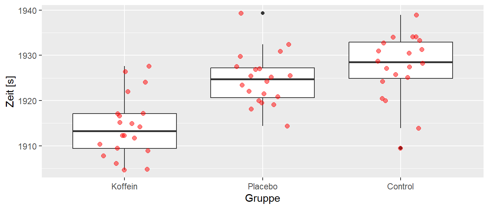
11 Experimentelle Designs
In diesem Kapitel werden wir verschiedene experimentelle Designs kennenlernen. Die Behandlung ist dabei leider nur oberflächlich möglich, da ansonsten ein vollständiger Kurs notwendig wäre um die Grundlagen zu erarbeiten. Ziel ist es daher die verschiedenen Designs kennen zu lernen und die Vor- bzw. Nachteile zu betrachten. In einer konkreten Situation können so verschiedene Designs vorausgewählt werden und dann selbstständig nach einer weiteren Betrachtung die Entscheidung für ein bestimmtes Design durchgeführt werden.
11.1 Completely Randomized Design
Das erste experimentelle Design, das wir uns anschauen, ist das Completeley Randomized Design. Wir haben unterschiedliche experimentelle Konditionen von denen wir ausgehen, dass diese sich unterschiedlich auf die experimentellen units (EU) auswirken. Beispielsweise wollen wir die Balancierfähigkeit unter drei verschiedenen Konditionen, z.B. fester Untergrund, weicher Untergrund und wackeliger Untergrund. Die Balancierfähigkeit ist aber auch durch zahlreiche andere Einflussfaktoren beeinflusst, z.B. Vorerfahrung, Kraftfähigkeit etc. Viele von diesen Einflussfaktoren kennen wir vielleicht gar nicht bzw. für diese zu kontrollieren wäre zu aufwendig. Um jedoch dennoch für diese Störgrößen zu kontrollieren setzen wir Randomisierung ein. Jeder einzelne Versuchsteilnehmer bzw. Versuchsteilnehmerin muss dazu randomisiert auf eine der drei Kondition verteilt werden. Damit werden die Teilnehmer(innen) zu den EUs. Nach Durchsicht der Literatur könnte die Balancierfähigkeit z.B. mittels einer Kraftmessplatte operationalisiert werden. Hieran schließt sich noch die Festsetzung der observational units, d.h. in diesem Falle, der Anzahl der Messwiederholungen an um die Reliabität auf ein gewünschtes Niveau zu heben. Diesen Teil vernachlässigen wir zunächst einmal.
Das statistische Modell kann dann wie folgt formuliert werden:
\[ Y_{ij} = \mu + \tau_i + \epsilon_{ij}, \qquad \epsilon_{ij}\sim \mathcal{N}(0,\sigma^2) \tag{11.1}\]
i = Gruppenindikator
j = experimental unit-indikator
\(\mu\) = Gesamtmittelwert
\(\tau_i\) = Einfluss der \(i\)-ten Stufe
K = Anzahl der Faktorstufen
j = experimental unit-indikator
\(\mu\) = Gesamtmittelwert
\(\tau_i\) = Einfluss der \(i\)-ten Stufe
K = Anzahl der Faktorstufen
D.h. die einzelnen \(\tau_i\)s beschreiben eine Abweichung um den Gesamtmittelwert \(\mu\). Um den Einfluss der verschiedenen Konditionen \(\tau_i\) zu bestimmen, benötigen wir Replikationen der EUs. In unserem Fall erreichen wird die Replikation dadurch, dass mehrere Versuchspersonen, die EUs, unter jeder Kondition \(i\) beobachtete werden. Die einzelnen EUs erhalten dabei den Index \(j\). In der Analyse ist diese Formulierung nur eine Alternativformulierung des linearen Modells mittels der Indikatorvariablen. Die statistische Überprüfung wir entsprechend nun über den bekannten Modellvergleichen durchgeführt. Das Modell Gleichung 11.1 wird als das Full Model angesehen und wir definieren das reduzierte Modell mittels:
\[ Y_{ij} = \mu + \epsilon_{ij} \]
D.h. im reduzierten Modell fallen die Faktorvariablen \(\tau_i\) raus und als Modellparameter wird nur ein \(y\)-Achsenabschnitt, der dann gleich dem Mittelwert \(\bar{y}\) ist, verwendet. Die Teststatistik folgt unter der \(H_0\) eine \(F\)-Statistik mit \(\textrm{df}_R - \textrm{df}_F\) und \(\textrm{df}_F\) Freiheitsgraden.
\[ \begin{aligned} H_0:& \tau_1 = \tau_2 = \ldots = \tau_k = 0 \\ H_1:& \exists\tau_i \neq \tau_j\ \textrm{mit}\ i \neq j, i,j \in \{1,2,\ldots,k\} \end{aligned} \]
Schauen wir uns als nächstes einen Beispieldatensatz an und gehen durch die verschiedenen Schritte der Analyse eines CRD. In Abbildung 11.1 ist das Ergebnis einer Untersuchung zum Einfluss von Koffein auf die Laufleistung bei einem 8Km Ausdauerlauf zu abgebildet. Insgesamt sind \(N=60\) Probanden randomisiert in drei Gruppen eingeteilt worden: Koffein, Placebo und Control. Die Gruppe Koffein hat vor dem Lauf ein Koffeinpräparat eingenommen, während die Placebogruppe ein Präparat ohne Wirkstoff eingenommen hat. Die Kontrollgruppe hat vor dem Lauf kein Zusatzpräparat eingekommen. Jeder Proband lief einmal die Strecke von \(8\) Km so schnell wie möglich. Die abhängige Variable war die Laufzeit.
Abbildung 11.1 deute an, das die Einnahme von Koffein zu einer Leistungsverbesserung führt, während der Einfluss des Placebos scheinbar möglicherweise nur zu einer leichten Verbesserung gegenüber der Kontrollkondition geführt hat.
Schauen wir uns die deskriptive Statistik der Daten an. In Tabelle 11.1 sind die deskriptiven Werte der Daten abgebildet.
| Gruppe = Koffein | Gruppe = Placebo | Gruppe = Control | |
|---|---|---|---|
| Mean | 1914.20 | 1924.68 | 1927.54 |
| Median | 1913.24 | 1924.72 | 1928.52 |
| Std.Dev | 6.78 | 5.72 | 7.23 |
| Q1 | 1909.25 | 1920.46 | 1924.70 |
| Q3 | 1917.16 | 1927.32 | 1933.05 |
Die Standardabweichungen in den drei Gruppen sind in Tabelle 11.1 relativ ähnlich, so dass hier schon einmal keine größeren Probleme zu erwarten sind. Die Mittelwerte und Mediane liegen ebenfalls ziemlich nahe beieinander. Was unseren Eindruck aus Abbildung 11.1 bestätigt. Der Modellvergleich ergibt die folgende F-Tabelle mit den Quadratsummenzerlegungen (siehe Tabelle 11.2).
| DF | SSQ | MSQ | F | p | |
|---|---|---|---|---|---|
| Gruppe | 2 | 1973.19 | 986.59 | 22.59 | 0 |
| Residuals | 57 | 2489.63 | 43.68 |
Die Ergebnisse in Tabelle 11.2 deuten auf einen statistisch signifikanter Effekt für die Gruppenvariable. Der \(F\)-Wert ist deutlich größer als \(1\) und hat unter der Annahme der \(H_0\) einen p-Wert von deutlich unter \(\alpha = 0.05\). D.h. die Kenntnis über die Gruppenzugehörigkeit gibt uns relevante Information über die abhängige Variable \(y\) der Laufgeschwindikeit.
Um sicherzustellen, dass unser Modell die Daten auch korrekt abbildet, müssen wir natürlich genauso wie auch bei den vorhergehenden Modellen eine Analyse des Modellfits durchführen. Also zum Beispiel eine Residuenanalyse mittels der einfachen Residuen \(e_i\) und der standardisierten Residuen \(e_{Si}\).
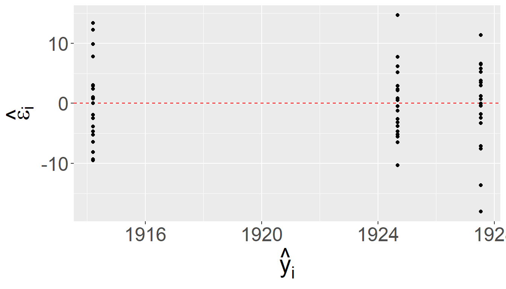
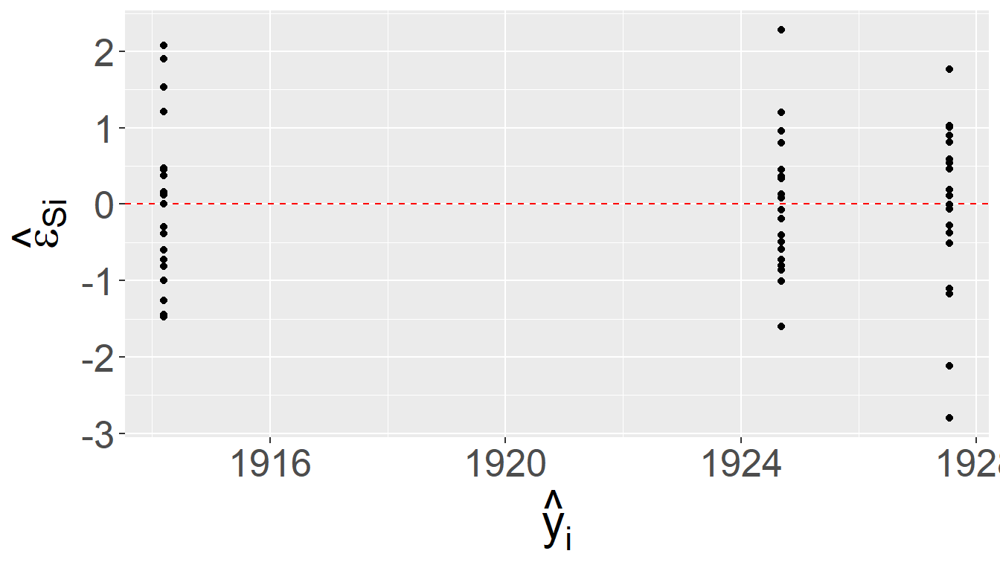
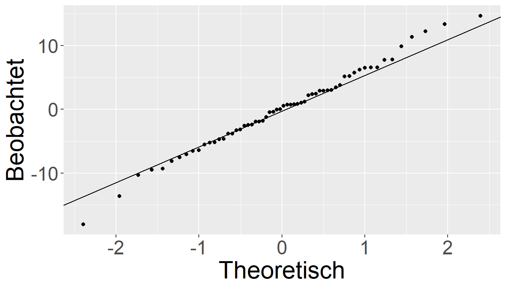
In Abbildung 11.2 sind die verschiedenen Residuenplots abgetragen und deuten insgesamt auf keine groben Verletzungen der Annahmen hin (Warum?). Ein weiterführende Analyse würde sich die weiteren Metriken wie Cooks-Distance, DFFits usw. anschauen. Was wir hier aber überspringen.
Tipp
Im Zusammenhang mit einer ANOVA-Analyse wird oft auch ein formaler Test auf Varianzhomogenität erwähnt. Der Levene-Test wird oft dazu verwendet. Der Levene-Test hat als \(H_0\)-Hypothese, das die Varianzen in den Gruppen gleich sind.
\[\begin{align*} H_0: &\text{all } \sigma_i^2 \text{ equal}\\ H_1: &\text{not all } \sigma_i^2 \text{ equal} \end{align*}\]
Da es sich dabei um einen Vorraussetzungtest handelt, wird die Irrtumswahrscheinlichkeit auf \(\alpha = 0.1\) angesetzt um die Überprüfung konservativer zu machen (Warum?). Auf die Herleitung des Tests gehen wir nicht näher ein.
Für unsere Beispieldaten ergibt sich ein Testergebnis mit \(F(2, 57) = 0.37947\) welcher bei einer Irrtumswahrscheinlichkeit von \(\alpha = 0.1\) statistisch nicht signifikant ist. D.h. die \(H_0\) das die Varianzen in den Gruppen gleich sind, wird nicht verworfen.
Beispiel 11.1 In einer Untersuchung von Milanese u. a. (2011) wurde die Anthropometrie und Körperzusammensetzung bei \(43\) weiblichen Handballspielerinnen aus der italienischen Handballliga untersucht. Die Spielerinnen wurden nach ihrer Spielpositionen gruppiert in Torwärtin, Rückraum-, Flügelspielerin oder Kreisläuferin. Für die Körperhöhe konnten die Autoren die folgenden Ergebnisse für vier Gruppen ermitteln.
| Position | Körperhöhe[cm] | \(n_i\) |
|---|---|---|
| Torwärtin | \(169.3 \pm 7.41\) | \(7\) |
| Rückraumspielerin | \(171.0 \pm 5.80\) | \(14\) |
| Kreisspielerin | \(167.0 \pm 4.32\) | \(4\) |
| Flügelspielerin | \(165.2 \pm 4.4\) | \(18\) |
Ein Analyse der Daten ergab das folgende Ergebnis:
| \(df\) | \(SSQ\) | \(MSQ\) | \(F\) | \(p\) | |
|---|---|---|---|---|---|
| Zwischen | \(3\) | \(282.7\) | \(94.23\) | \(3.19\) | \(p = 0.034\) |
| Innerhalb | \(39\) | \(1151.88\) | \(29.54\) |
D.h. es wurde ein statistisch signifikanter Unterschied zwischen den vier Gruppen beobachtet. Wenn wir uns die Annahme des Modells noch einmal anschauen, dann bemerken wir ein kleines Problem. Die Voraussetzungen wurden insofern nicht eingehalten, da die Gruppen nicht randomisiert in die vier Positionen eingeteilt wurden was bei dieser Art der Untersuchung auch gar nicht möglich ist. Problematisch ist in diesem Fall zusätzlich, dass die Stichprobe nicht zufällig gezogen wurde, sondern im Rahmen einer Leistungsdiagnostik mit insgesamt vier verschiedenen Teams zustande kam. Daher ist die Verallgemeinerung der Ergebnisse ebenfalls kritisch zu betrachten.
Da alle drei Methoden zum gleichen Ergebnis kommen, ist jeder selbst überlassen wenn Methode sie bevorzugt.
11.1.1 Effektstärke im CRD
Ein Konzept mit dem wir uns bisher noch nicht eingehender auseinander gesetzt haben, sind die sogenannten Effektstärken.
11.1.2 Effektstärken allgemein
Definition 11.1 (Effektstärke) Eine Effektstärke bezeichent einen Wert, der die Stärke der Beziehung zwischen zwei Variablen in einer Population misst, oder eine empirische Schätzung dieser Größe.
Das einfachste Beispiel für eine Effektstärke ist der Parameter Cohen’s D der Effektstärke für den Unterschied zwischen zwei Gruppenmittelwerten bestimmt. In der Population gilt. \[\begin{equation} D = \frac{\mu_1 - \mu_2}{\sigma} \end{equation}\] bzw. geschätzt anhand der Stichprobe: \[\begin{equation} d = \frac{\bar{x}_1 - \bar{x}_2}{\sqrt{s_1^2 + s_2^2}/2} \end{equation}\] Die Effektstärke ist dabei in praktisch allen relevanten Fällen eine Dimensionslose größe, da im Prinzip immer ein Unterschied \(\Delta\) durch die \(Streuung\) geteilt bzw. normiert wird. Da beide Größen die gleichen Einheiten haben, entsteht dadurch eine dimensionslose Größe. Dies ermöglicht die Effektstärke in verschiedene (willkürliche) Bereiche einzuteilen die eine Abschätzung von kleinen, mittleren und großen Effektstärken ermöglicht.
Da wir beim CRD üblicherweise mehr als zwei Faktorstufen haben, ist die Berechnung einer möglichen Effektstärke etwas komplizierter und ein übliche Formel für die Effektstärke \(f\) folgt:
\[ f = \frac{\sigma_{\text{between}}}{\sigma_{\epsilon}} = \frac{\sqrt{\frac{\sum\tau_i^2}{k}}}{\sigma_{\epsilon}} \tag{11.2}\]
D.h. die mittleren quadrierte Effekte der Faktorstufen \(\tau_i\) werden durch die Residualstandardabweichung geteilt. Also letztendlich wieder eine Abweichung, dieses Mal eine gemittelte, geteilt durch eine Streuung. Ein Problem bei der Effektstärke \(f\) im CRD-Design ist, dass wir keine Eins-zu-Eins Abbildung von \(f\) auf eine Verteilung verschiedener Mittelwertswerte haben. In Abbildung 11.3 sind drei verschiedene Anordnungen der Mittelwerte bei identischer Effektstärke \(f\) abgetragen.
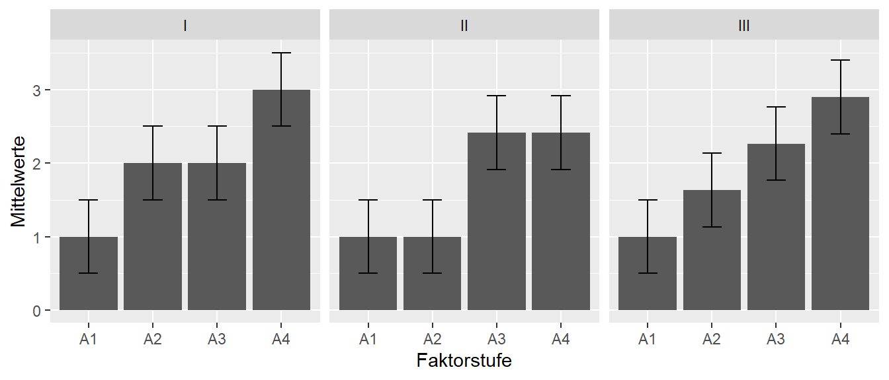
Dies macht daher die Interpretation von \(f\) deutlich schwieriger als das im einfachen Fall von Cohen’s D für den Vergleich zwischen zwei Mittelwerten der Fall ist.
Leider hören hier nicht die Problem auf, sondern es gibt eine ganze Reihe von weiteren Effektstärken die in der Literatur anzutreffen sind. Dazu gehören vor allem das weit verbreitete \(\eta^2\) und das weniger bekannte \(\omega^2\).
\[ \begin{aligned} \eta^2 &= \frac{SS_{B}}{SS_{Total}} \\ \omega^2 &= \frac{f^2}{1 + f^2} = \frac{(K-1)(F-1)}{(K-1)(F-1)+N}\\ f^2 &=\frac{\omega^2}{1-\omega^2} \end{aligned} \]
Das Problem besteht darin, das oft \(\eta^2\) in der Literatur verwendet wird, trotzdem bekannt ist, dass die Effektstärke oft stark überschätzt wird und daher neuere Literatur die Verwendung von \(\omega^2\) empfielt (Levine und Hullett (2002), Olejnik und Algina (2003), Kroes und Finley (2023)).
In der Literatur werden Einteilungen der Effektstärken anhand von Überlegungen zur Varianzaufklärung verwendet um den Effektstärken eine qualitative Bewertung zu geben (siehe z.B. Cohen (1988)).
| \(f\) | \(\omega^2\) | \(\eta^2\) | |
|---|---|---|---|
| klein | 0.1 | 0.01 | 0.01 |
| mittel | 0.25 | 0.06 | 0.06 |
| groß | 0.40 | 0.14 | 0.14 |
Diese Einteilung wird oft miesverständlich als Maß für praktische Relevanz interpretiert. Das zum Beispiel ein größer Effekt automatisch praktische Relevanz nach sich zieht und ein kleiner Effekt auch keine praktische Relevanz hat. Diese Interpretation ist jedoch in den meisten Fällen zu simpel und eine gegebene Effektstärke sollte immer im Rahmen der konkreten Untersuchung interpretiert werden. Die Hauptnützlichkeit von Effektstärken beruht jedoch wahrscheinlich darin die Berechnung von Stichprobengrößen mittels einer Poweranalyse zu vereinfachen.
11.1.3 Replikationsfaktor a-prior ermitteln
Um bei unserem Experiment sicher zu stellen, dass wir auch eine realistische Chance haben einen gewünschten Effekt zu finden, müssen wir vor dem Experiment eine Power-Analyse durchführen um den notwendig Replikationsfaktor für die experimentellen Einheiten EU zu bestimmen. In dem Fall, dass die EUs äquivalent zu den Untersuchungsteilnehmerinnen und Untersuchungsteilnehmer sind führt dies dementsprechend zur Bestimmung der Stichprobengröße. Dazu wird Anhand der Literatur wird \(f\) bestimmt und dann z.B. die Software GPower verwendet.
11.2 Lineare Kontraste
Bei der Analyse eines CRDs ist bisher nur untersucht worden, ob es irgendwo zwischen den verschiedenen Faktorstufen einen relevanten Unterschied gibt. Im nächsten Schritt soll daher nun bestimmt werden zwischen welchen der verschiedenen Faktorstufen ein Unterschied besteht. Im einfachsten Fall bedeutet dies, dass immer paarweise Vergleiche zwischen den Faktorstufen durchgeführt werden sollen, um zu überprüfen zwischen welchen ein Unterschied besteht. Im vorliegenden Fall aus dem Laufbeispiel mit drei Faktorstufen (Koffein, Placebo und Control, siehe Abbildung 11.4) können daher drei verschiedene paarweise Vergleiche durchgeführt werden.

D.h. in dem Beispiel können Koffein mit Placebo, Koffein mit Control und Placebo mit Control miteinander verglichen werden. In allen drei Fällen werden die Mittelwerte \(\mu_i\) der jeweiligen Faktorstufen miteinander verglichen.
Ein Problem bei diesen Vergleich ist allerdings, dass jede Faktorstufe in mehreren (im Beispiel zwei) Vergleichen beteiligt ist. Wenn nun noch mehr Faktorstufen vorhanden sind, dann ist entsprechend jeder Gruppenmittel noch öfter in den paarweisen vergleichen beteiligt. Allgemein gilt bei \(K\)-Faktorstufen:
\[ \text{Anzahl der Paarvergleiche} = K(K-1) \]
Dadurch, das jeder Mittelwert \(\mu_i\) in mehreren Vergleichen beteiligt ist, führt dies zu dem Problem der Mehrfachvergleiche .
11.3 Das multiple-comparison Problem
Allgemein gilt, wenn mehrere statistische Tests durchgeführt werden und der \(\alpha\)-Fehler betrachtet wird, dann folgt über die Gesamtheit der Tests, dass der \(\alpha\)-Fehler für einen individuellen Test nicht mehr gleich dem nominalen Level, also \(\alpha = 0.05\) ist. Tatsächlich ist der \(\alpha\)-Fehler in diesem Fall deutlich höher als \(\alpha = 0.05\). Werden beispielsweise \(100\) verschiedene Tests auf dem gleichen Datensatz durchgeführt, dann würden unter der Annahme, dass die \(H_0\) zutrifft, im Mittel \(5\) Tests statistisch signifikant werden, ohne das ein Effekt besteht. Daher könnte eine Strategie sein, möglichst viele unterschiedliche Tests auf einem Datensatz durchzuführen, irgendeiner davon wird schon signifikant werden.
Die Überlegung dazu ist die Folgende. Es werden \(m\) Hypothesen getestet. Jede dieser Hypothese soll für sich genommen eine Irrtumswahrscheinlichkeit von \(\alpha\) haben und in allen Fällen sei die \(H_0\) zutreffend. Dann haben ist für jeden einzelnen Test die Wahrscheinlichkeit eine korrekte Entscheidung zu treffen \(P(\text{korrekt Entschieden}) = 1 - \alpha\). Wenn nun \(m\) unabhängige Hypothesentestungen durchführt werden, wird die Wahrscheinlichkeit sich korrekt zu entscheiden insgesamt \(m\)-Mal miteinander multipliziert.
\[ P(\text{korrekte Entscheidung}) = (1-\alpha)\cdots(1-\alpha) = (1-\alpha)^m \]
Das Komplementär dieser Wahrscheinlichkeit ist dann die Wahrscheinlichkeit mindestens eine falsche Entscheidung zu treffen. Daraus folgt, dass diese Wahrscheinlichkeit, mindestens einen \(\alpha\)-Fehler zu begehen, folgt \(1 - P(\text{korrekte Entscheidung})\) ist.
\[ P(\text{min. }1\text{ Type-I Fehler}) = 1 - (1-\alpha)^m \]
Wird diese Wahrscheinlichkeit gegen die Anzahl der Test abgetragen, ergibt sich der folgende Zusammenhang (siehe Abbildung 11.5).
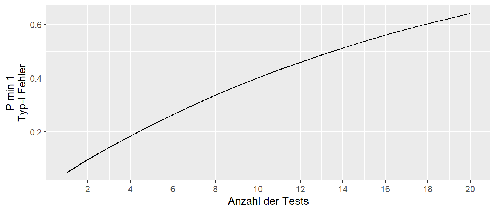
In Abbildung 11.5 ist zu erkennen, dass die Wahrscheinlichkeit für mindestens einen \(\alpha\) sehr schnell mit der Anzahl der Tests ansteigt. D.h. ab etwa 15 Tests liegt die Wahrscheinlichkeit für ein statistisch signifikantes Ergebnis bei etwas über \(50\%\). Daher, umso mehr Tests in einer Untersuchung durchgeführt werden, umso höher ist die Wahrscheinlichkeit, dass ein Test anspringt. Um diesem Problem zu begegnen, sollte daher für die Anzahl der durchgeführten Tests kontrolliert werden (siehe allerdings Rothman (1990) für eine Gegenposition).
Ein Umstand macht die Kontrolle der \(\alpha\)-Fehlerrate allerdings etwas undurchsichtig, da nicht eindeutig ist auf welchem Level die Fehlerkontrolle stattfinden soll. In Abbildung 11.6 ist die typische Struktur eines Experiments dargestellt.
In dem Beispiel sind zwei Endpunkte in dem Experiment geplant gewesen (Primary und Secondary Endpoint). Diese könnte zum Beispiel die Squad und die Hip thrust Leistung in der Stichprobe sein. Beide Endpunkte wurden unter jeweils zwei verschiedenen Faktoren untersucht (z.B. Ernährungsergänzung und Kontrolle). Faktor 1 besitzt drei Faktorstufen. D.h. es können drei paarweise Vergleiche zwischen den Mittelwerten (MW) der drei Stufen durchgeführt werden. Ähnliches trifft aber auch auf Faktor 2 zu. Bei zwei Endpunkten verdoppelt sich noch einmal die Anzahl der Test bzw. wenn bei noch weitere Endpunkte haben entsprechend mehr.
Dies führt dazu, dass mehrere Ebenen vorliegen, auf denen ein Fehlerkontrollmechanismus ansetzen kann. Die Kontrolle kann entweder auf der Ebene der Endpunkte, der Ebene der Faktoren innerhalb eines Endpunktes oder auf der Ebene der einzelnen Faktorstufen innerhalb eines Faktors innerhalb eines Endpunktes kontrolliert werden. Von oben nach unten werden diese Ebenen als Experiment , family und test wise error rates bezeichnet. Die Kontrolle ist dabei von unten nach oben immer strikter da die Anzahl der zu berücksichtigenden Test immer größer wird. Dazu kommt, dass es leider in der Literatur dazu keinen klaren Konsens gibt auf welcher Ebene die Mehrfachtestung berücksichtigt werden sollte. In den meisten Fällen wird daher auf der test-Ebene kontrolliert.
11.4 Kontraste \(\psi\)
Im folgenden wird ein etwas allgemeineres Rahmenwerk aufgebaut um Vergleiche zwischen Faktorstufen durchzuführen. Dazu wird zunächst das Konzept eines Kontrasts für Mittelwertsvergleiche benötigt. Ein Kontrast \(\psi\) ist dabei ein Spezialfall einer sogenannten Linearkombination . Allgemein hat eine Linearkombination die folgende Form (siehe Gleichung 11.3):
\[ \sum_{i=1}^K c_i \cdot a_i \tag{11.3}\]
Eine Linearkombination besteht aus der Summe von Produkten bei denen jeweils ein Element \(a_i\) mit einem Faktor \(c_i\) multipliziert wird. Die \(c_i\)s werden als Gewichte bezeichnet, daher wird auch oft in der Literatur die Schreibweise \(w_i \cdot a_i\) verwendet vom Englischen \(w\)eights. Seien zum Beispiel ein Vektor \(\boldsymbol{a}\) mit den Elementen \(\boldsymbol{a} = (1,2,3)\) und ein Gewichtsvektor mit den Elementen \(\boldsymbol{c} = (1/2,1/2,1/3)\) gegeben. Dann hat die entsprechende Linearkombination die folgende Form:
\[ \sum_{i=1}^K c_i \cdot a_i = \frac{1}{2}\cdot 1 + \frac{1}{2}\cdot 2 + \frac{1}{3}\cdot 3 = 2\frac{1}{2} \tag{11.4}\]
Ein Kontrast \(\psi\) ist nun ein Spezialfall einer Linearkombination. Beim einem Kontrast \(\psi\) sind die Gewichte \(a_i\) so gewählt, dass die Summe der Gewichte \(a_i\) Null ergibt. D.h. es gilt:
\[ \psi = \sum_{i=1}^K c_i \cdot a_i \quad \text{mit } \sum_{i=1}^K c_i = 0 \]
Das vorhergehende Beispiel der Linearkombination in Gleichung 11.4 stellt somit keinen Kontrast dar, da \(1/2 + 1/2 + 1/3 = 1\frac{1}{3} \neq 0\) gilt. Dagegen wäre die folgende Linearkombination mit \(\boldsymbol{c} = (1/2,1/2,-1)\) ein Kontrast, da \(\frac{1}{2} + \frac{1}{2} - 1 = 0\).
\[ \sum_{i=1}^K c_i \cdot a_i = \frac{1}{2}\cdot 1 + \frac{1}{2}\cdot 2 - \frac{1}{3}\cdot 3 \]
Tipp
Linearkombination können in R einfach über das Skalarprodukt berechnet werden.
c_i <- c(1/2,1/2,1/3)
a_i <- 1:3
t(a_i) %*% c_i [,1]
[1,] 2.5Was einen Spezialfall des Matrizenprodukts darstellt.
mat <- matrix(1:6, nr=2, byrow=T)
mat [,1] [,2] [,3]
[1,] 1 2 3
[2,] 4 5 6mat %*% c_i [,1]
[1,] 2.5
[2,] 6.511.4.1 Struktur von Kontrasten
Seien nun die Elemente von \(\boldsymbol{a}\) die Modellparameter eines statistischen Models, die Modellparameter könnten z.B. die Mittelwerte dreier Faktorstufen bilden. Dann ergibt sich die folgende Definition für einen Kontrast:
Definition 11.2 (Kontrast) Ein Kontrast \(\psi\) ist eine Linearkombination von Modellparametern deren Koeffizienten sich zu Null addieren.
Zum Beispiel der Fall des CRD Modells mit einem Faktor und \(K\) Faktorstufen.
\[ Y_{ij} = \mu + \tau_i + \epsilon_{ij} \]
Die jeweiligen Effekte der Faktorstufen werden durch die Parameter \(\tau_i,i=1,\ldots,K\) (die Abweichungen der Gruppenmittelwerte \(\mu_i\) vom Gesamtmittelwert \(\mu\), repräsentiert. Die allgemeine Form eines Kontrasts \(\psi\) für ein CRD Modell hat dann die Form (siehe Gleichung 11.5):
\[ \psi = \sum_{i=1}^k c_i \tau_i, \quad \text{mit } \sum_{i=1}^k c_i=0 \tag{11.5}\]
In den meisten Fällen werden mittels eines Kontrasts die Mittelwerte \(\mu_i\) der Faktorstufen miteinander verglichen. Der Effekt der \(i\)-ten Stufe, der Mittelwert der \(i\)-ten Stufe, setzt sich nach dem Modell zusammen aus der Summe aus dem Gesamtmittelwert \(\mu\) und dem Effekt der Faktorstufe \(\tau_i\). D.h. \(\mu_i = \mu + \tau_i\) und dieser ist bei einem CRD gleich dem Gruppenmittelwert \(\bar{y}_i\). D.h. ein Schätzer für einen Kontrast \(\hat{\psi}\) hat die Form.
\[ \hat{\psi} = \sum_{i=1}^K c_i (\hat{\mu} + \hat{\tau_i}) = \sum_{i=1}^K c_i \bar{y}_{i} \]
Unter Verwendung der Eigenschaft, dass die Summe der Gewichte \(c_i\) eines Kontrasts \(\psi\) zu \(0\) addieren, gilt:
\[ \psi=\sum_{i=1}^Kc_i(\mu + \tau_i) = \sum_{i=1}^Kc_i \mu + \sum_{i=1}^K c_i\tau_i=\mu\underbrace{\sum_{i=1}^K c_i}_{=0} + \sum_{i=1}^K c_i\tau_i = \sum_{i=1}^K c_i\tau_i \]
Beim vorliegen von Daten, kommen überall über die Variablen die üblichen Hütchen für Schätzer und aus \((\hat{\mu}+\hat{\tau}_i\) wird \(\bar{y}_{i}\). D.h. über den Vergleich der Mittelwerte \(\bar{y}_i\) mittels eines Kontrast können die Modellparameter \(\tau_i\) miteinander verglichen werden.
Durch eine geschickte Kombination von \(c_i\) können nun gewünschte Gruppenvergleiche durchgeführt werden. Im Beispiel der Laufdaten, können mittels des folgenden Schemas von \(c_i\)s die paarweisen Gruppenvergleich als Kontraste definiert werden (siehe Tabelle 11.3).
| Kontrast | Koffein \((c_1)\) | Placebo \((c_2)\) | Control \((c_3)\) | \(\sum_{i=1}^K c_i\) |
|---|---|---|---|---|
| \(\Delta_{\text{Koffein-Placebo}}\) | \(1\) | \((-1)\) | 0 | 0 |
| \(\Delta_{\text{Koffein-Control}}\) | \(1\) | \(0\) | \((-1)\) | 0 |
| \(\Delta_{\text{Placebo-Control}}\) | \(0\) | \(1\) | \((-1)\) | 0 |
An einem Beispiel wird mit konkreten Zahlen kann das Schema besser nachvollzogen werden. In Tabelle 11.4 sind die Gruppenmittelwerte aus dem Koffeinbeispiel mit den Laufdaten abgebildet.
| Gruppe | \(\bar{y}_{i.}\) |
|---|---|
| Koffein | 1914.2 |
| Placebo | 1924.7 |
| Control | 1927.5 |
Es soll nun ein Vergleich zwischen den Gruppen Koffein und Placebo bestimmt werden. Dazu werden aus Tabelle 11.3 die Gewichte aus der ersten Zeile \(\Delta_{\text{K-C}} = (1,-1,0)\) ausgewählt. Mit Hilfe dieser Gewichte wird nun die Linearkombination mit den Mittelwerten aus Tabelle 11.4 gebildet. Damit ergibt sich der folgende Term.
\[ \hat{\psi}_{\text{K-C}} = \sum_{i=1}^k c_i \bar{y}_{i.} = 1 \cdot 1914.2 + (-1) \cdot 1924.7 + 0 \cdot 1927.5 = -10.5 \]
Somit wird für den paarweisen Vergleich zwischen den Faktorstufen Koffein und Placebo ein Unterschied von \(-10.5\) geschätzt. Die beiden verbleibenden paarweisen Vergleichen können parallel durchgeführt werden.
Allgemein wird zwischen zwei Arten von Kontrasten unterschieden: Einfache Kontraste und komplexe Kontraste. Einfache Kontraste sind paarweisen Vergleiche während alle anderen Arten von Kontrasten als komplexe Kontraste bezeichnet werden. Im Beispiel ist zu erkennen, dass bei paarweisen Kontrasten immer ein Kontrastgewicht auf \(c_i = 1\) und ein weiteres Gewicht auf \(c_j = -1\) gesetzt wird. Die verbleibenden Gewichte werden alle auf \(c_l = 0, \forall l \neq i,j\) gesetzt.
Als nächstes wird nun ein komplexer Kontrast erstellt. Zum Beispiel soll untersucht werden, ob es einen Unterschied zwischen der Kontrollgruppe und den beiden Gruppen die eine Pille bekommen haben gibt. D.h. es soll untersucht werden ob die Gabe einer Pille unabhängig davon ob in der Pille ein Wirkstoff (Koffein) oder nicht (Placebo) gewesen ist eine Wirkung auf die Laufleistung hat. Dazu kann die folgende Überlegung durchgefüht werden. Der Effekt der Gabe eine Pille kann als der mittlere Effekt der beiden Faktorstufen Placebo und Koffein angesehen werden. Dieser mittlere Effekt soll mit dem Effekt der Kontrollkondition verglichen werden.
Der mittlere Effekt von Placebo und Koffein ist einfach der Mittelwert der beiden Faktorstufen also \((\tau_{\text{Placebo}} + \tau_{\text{Koffein}})/2\). Mittels eines Kontrasts kann dieser Vergleich nun wie folgt operationalisiert werden.
\[ c_1 = \frac{1}{2}, c_2 = \frac{1}{2}, c_3 = -1 \]
Die ersten beiden Gewichte \(c_1\) und \(c_2\) bilden den Mittelwerte der beiden Effekte Koffein und Placebo. Dieser Mittelwert der Mittelwerte wird soll nun mit dem Mittelwert der Kontrollgruppe verglichen werden. Dazu bekommt der Mittelwert der Kontrollgruppe das Gewicht \(c_3 = -1\). Wenn nun die Summe der Gewichte gebildet, dann ergibt sich \(\frac{1}{2} + \frac{1}{2} - 1 = 0\). D.h. dieser Vergleich der Gruppenmittelwerte bildet einen Kontrast. Konkrete angewendet auf das Beispiel folgt somit:
\[ \hat{\psi} = \sum_{i=1}^k c_i \bar{y}_{i.} = \frac{1}{2} \cdot 1914.2 + \frac{1}{2} \cdot 1924.7 + (-1) \cdot 1927.5 = -8.05 \]
D.h. der Effekt der Pillengabe unabhängig davon ob die Pille einen Wirkstoff enthält ist \(-8.05s\).
Zusammengefasst ermöglichen Kontraste beliebige Vergleiche zwischen mehreren Faktorstufen durchzuführen um Modellparameter miteinander zu vergleichen. Die üblichen paarweisen Vergleich bilden hierbei einen Spezialfall (einfache Kontraste) der allgemeineren komplexen Kontrasten. Um nun zu bewerten ob ein beobachteter Kontrast \(\psi_i\) auch wirklich bedeutsam ist, ist die Kenntnis der Unsicherheit über den Kontrast notwendig. Daher wird nun als nächstes die Varianz \(Var(\psi_i)\) eines Kontrasts \(\psi_i\) bzw. der Standardfehler, die Wurzel der Varianz, betrachtet.
11.4.2 Varianz von Kontrasten
Um die Varianz von Kontrasten herzuleiten zu können, folgen zunächst noch einmal kurz ein Regeln die schon in Kapitel 12 behandelt wurden. Zunächst zur Wiederholung der Standardfehler des Mittelwerts, da dieser immer wieder auftauchen wird.
\[ \sigma_{\bar{x}} = \frac{\sigma}{\sqrt{n}} \]
Die Varianz des Mittelwerts ist dementsprechend das Quadrat des Standardfehlers \(\sigma_{\bar{x}}^2\). Sei beispielsweise der Mittelwert in der Stichprobe unter der \(i\)-ten Faktorstufe \(\bar{Y}_i\) mit der Stichprobengröße \(n_i\), dann gilt:
\[ Var(\bar{Y}_i) = \frac{\sigma^2}{n_i} \]
Im Beispiel war der Schätzer für der Residual standard error \(=6.6\). Daraus folgt für den Standardfehler des Mittelwerts für die Gruppe Koffein mit \(n_i = 20\) pro Gruppe.
\[ s_{\text{Koffein}} = \frac{6.6}{\sqrt{20}} = 1.5 \]
Die zweite wichtige Regel im Zusammenhang mit Kontrasten und deren Varianzen ist die Rechenregel für die Linearkombination von unabhängigen Zufallsvariablen die ebenfalls in Kapitel 12 behandelt wurde. Wichtig für die weiteren Herleitungen ist insbesondere das Beispiel ?exm-ed-hypo-var-diff. Die allgemeine Regel lautet:
\[ Var\left(\sum_{i=1}^n a_i X_i\right) = \sum_{i=1}^n a_i^2 Var(X_i) \tag{11.6}\]
D.h. bei unabhängigen Zufallsvariablen, diese können beispielsweise die Mittelwerte der Gruppen sein da die Gruppen unabhängig voneinander sind, berechnet sich die Varianz der Linearkombination dadurch, dass die Gewichte \(a_i\) quadriert werden und mit den Werten der Zufallsvariablen multipliziert werden. Anschließen erfolgt die Summation über alle Produkte.
Angewendet auf einen Kontrast \(\psi\) folgt für die Varianz des Kontrast unter der Annahme das die Mittelwerte \(\bar{Y}_{i}\) alle die gleiche Varianz \(\sigma^2\) haben (die übliche Annahme der Homoskedastizität im linearen Modell), also \(Var(\bar{Y}_{i}) = \sigma^2\).
\[ \begin{aligned} Var(\psi) &= Var\left(\sum c_i \bar{Y}_{i}\right) \\ &= \sum c_i^2 Var(\bar{Y}_{i}) \quad\text{Anwendung der Regel} \\ &= \sum c_i^2(\sigma^2/n_i) \quad\text{Homoskedastizität}\\ &= \sigma^2\sum(c_i^2/n_i) \end{aligned} \tag{11.7}\]
D.h. die Kontrastgewichte \(c_i\) werden quadriert und durch die jeweilige Stichprobengröße \(n_i\) der \(i\)-ten Faktorstufe geteilt. Anschließend wird die Summe über alle Quotienten gebildet und mit dem Standardfehler der Residuen multipliziert. Wie bisher immer geschehen, wird die Varianz \(\sigma^2\) anhand der Stichprobe mittels des \(MSE\) bzw. in der Terminologie des CRD \(MS_{\text{within}}\) abgeschätzt. Kurz zur Erinnerung, der \(MSE\) ist die Quadratsumme der Residuen \(e_i\) geteilt durch die Differenz der Stichprobengröße \(N\) und der Anzahl der Parameter \(p\). Daraus folgt für die den Schätzer der Varianz des Kontrasts \(\widehat{Var}(\psi)\) (siehe Gleichung 11.8).
\[ \widehat{Var}(\psi) = \widehat{Var}\left(\sum c_i \bar{y}_{i.}\right) = MS_w\sum (c_i^2/n_i) \tag{11.8}\]
Diese Formel ist die gleiche Formel die in Kapitel 23 bei der Einführung zum Experimentellen Design verwendet wurde, um die Verteilungen der Stichprobengrößen in die beiden Gruppen zu verteilen. Um nun von der Varianz auf den Standardfehler des Kontrasts \(s_{\psi}\) zu kommen, wird wie immer die Wurzel der Varianz gezogen. In der Benutzung der Symbole wird wieder der übliche Übergang \(\sqrt{\hat{\sigma}^2} = s\) wie bei der Verwendung der Standardabweichung verwendet.
\[ s_{\psi} = \sqrt{MS_w\sum (c_i^2/n_i)} \tag{11.9}\]
\(n_i\) = Stichprobengröße in Faktorstufe \(i\)
\(\hat{\sigma}^2 = MS_w = MSE\)
\(\hat{\sigma}^2 = MS_w = MSE\)
Angewendet auf den Kontrast bei Paarvergleichen folgen für den Vergleich der Faktorstufen \(i\) und \(j\) dargestellt mittels der Kontrastgewichte \(c_i\) die folgenden Terme \(c_i^2 = (1)^2, c_j^2 = (-1)^2\) während alle anderen \(c_l = 0\) sind.
\[ Var(\psi) = Var\left(\tau_i - \tau_j\right) = \sigma^2\left(\frac{1}{n_i} + \frac{1}{n_j}\right) \]
Hier wird der Äquivalenz zu der in Kapitel 23 verwendet Formel noch mal deutlicher. Wenn nun ein experimentelles Design verwendet wurde bei dem die Stichprobengrößen unter allen Faktorstufen gleich groß sind, also \(n_i = n_j = n\), gilt, dann kann diese Formel noch weiter vereinfacht werden. Mit der Festsetzung \(2n = N\) folgt für den Standardfehler des Kontrasts \(\sigma_{\psi}\) in der Population:
\[ \sigma_{\psi} = s_{\Delta} = \sqrt{\sigma^2\left(\frac{1}{N/2} +\frac{1}{N/2}\right)}=\sqrt{\sigma^2\frac{2}{N/2}} = \sigma\sqrt\frac{4}{N}=\sigma \frac{2}{\sqrt{N}} \]
Beziehungsweise in der Stichprobe dann entsprechend.
\[ s_{\psi} = s_{\Delta} = \sqrt{MSE}\frac{2}{\sqrt{N}} \]
D.h. der Kontrast für den Vergleich zwischen zwei Mittelwerten hat im Vergleich zu Standardfehler des Mittelwerts die doppelte Größe. Insgesamt wird aber wieder der gleiche Wurzelzusammenhang enthalten, der dazu führt, dass der Standardfehler für den Kontrast mit zunehmender Stichprobengröße stetig abnimmt, aber die Abnahme mit größer werdenden Stichproben immer kleiner wird. Anders herum bei kleinen Stichprobengrößen führt jeder Hinzunahme von Stichproben zu einer relativ stärkeren Verkleinerung des Standardfehlers und damit zu einer Erhöhung der Power (siehe Kapitel 9).
11.4.3 Hypothesentests für Kontraste
Ein Hypothesentest für einen Kontrast wird nach dem üblichen Muster konstruiert, indem die Größe des Kontrasts \(\hat{\psi}\) anhand des Standardfehlers kalibriert wurde, also der Quotient aus dem Kontrast und dem Standardfehler \(s_{\psi}\) gebildet wird. Die entsprechenden Hypothesen ergeben sich dann aus der Annahme das unter der \(H_0\) der Kontrast den Wert Null annimmt und entsprechend unter der Alternativhypothese ungleich Null ist.
\[ \begin{split} H_{0,\psi}: \sum_{i=1}^k c_i \tau_i = 0 \\ H_{1,\psi}: \sum_{i=1}^k c_i \tau_i \neq 0 \end{split} \]
Die resultierende Teststatistik \(t\) ist dementsprechend der Quotient aus der Effektstärke, der Kontrast, normiert durch deren Standardfehler. Wenn dieses Verhältnis größer als ein kritischer Wert \(w\) ist, kann die entsprechende \(H_0\) abgelehnt werden. Es folgt somit:
\[ \text{Lehne }H_0\text{ ab, wenn} \left|\frac{\sum_{i=1}^K c_k \tau_i}{\sqrt{MSE\sum_{i=1}^K c_i^2/n_i}}\right| > w \tag{11.10}\]
Der kritische Wert \(w\) ist wieder die Quantile \(q_{\alpha}\) einer entsprechenden theoretischen Verteilung. Welche theoretische Verteilung gewählt werden muss, hängt nun davon ab welche Art der \(\alpha\)-Kontrolle angewendet werden soll.
11.4.4 Konfidenzintervalle von Kontrasten
Nach dem bereits mehrfach verwendeten Muster werden auch Konfidenzintervalle für einen Kontrast \(\psi\) erstellt. Das Berechnungsmuster folgt dabei immer dem gleichen Schema (siehe auch Kapitel 10):
\[ \begin{gather*} \text{CI}(\hat{\psi}) = \sum_i c_i \hat{\tau}_i \pm w \sqrt{\widehat{Var}\left(\sum c_i \hat{\tau}_i\right)} = \hat{\psi} + w \times s_{\psi}\\ \text{estimate } \pm (\text{kritischer Wert}) \times (\text{Standardfehler}) \end{gather*} \]
Der Kontrastschätzer \(\hat{\psi}\) bleibt dabei gleich und es ändert sich je nach gewählter Methode für Mehrfachvergleiche um das Gesamt-\(\alpha\) zu kontrollieren der kritische Wert \(w\).
11.5 Einteilung der Mehrfachvergleiche
Mehrfachvergleiche können zunächst in zwei Arten unterschieden werden. Vergleiche die vor dem Experiment geplant wurden und Vergleiche die nach einsehen der Daten auf Basis der Ergebnisse durchgeführt werden. Vergleiche die vor der Durchführung des Experiments festgelegt werden, werden als pre-planned bezeichnet. Vergleiche die dagegen nach der Durchführung des Experiments nach der Einsicht der Daten durchgeführt werden, werden als post-hoc Vergleiche bezeichnet. Zwischen diesen beiden Vergleichen wird unterschieden, da bei den post-hoc-Tests dadurch, das die Daten schon bekannt sind, die Vergleiche durch die Daten beeinflusst werden. Daher muss in diesem Fall die Kontrolle strikter sein, als wenn die Vergleiche im Voraus geplant wurden.
In der Literatur sind mittlerweile zahllose unterschiedliche Arten vorhanden die \(\alpha\)-Kontrolle bei Mehrfachvergleiche durchzuführen. Die Unterschiede zielen dabei immer darauf ab, die \(\alpha\)-Kontrolle zu gewährleisten und dabei aber die Power nicht zu stark zu verkleinern. Im Folgenden wird nur eine kleine Auswahl der üblichsten Methoden besprochen. In Tabelle 11.5 sind die Bonferroni, Tukey, Scheffé, Dunnet und die FisherLSD Korrekturmethoden inklusive der Art der Kontraste tabellarisch dargestellt.
| Name | Zeitpunkt | Kontraste | Kontrolliert |
|---|---|---|---|
| Bonferroni | pre-planned | einfache und komplexe | Ja |
| Tukey | pre-planned | alle paarweisen | Ja |
| Scheffé | post-hoc | einfache und komplexe | Ja |
| Dunnet | pre-planned | paarweise TRT gegen CON | Ja |
| FisherLSD | post-hoc | einfache und komplexe | Nein1 |
Die Bonferroni-Korrektur ist in der Literatur weit verbreitet, da sie relativ einfach durchzuführen ist. Die \(\alpha\)-Korrektur wird erreicht, indem ein korrigiertes Signifikanzlevel \(\alpha^*\) berechnet wird. Sind in einer Analyse \(m\) Kontraste zu berechnen, dann errechnet sich das korrigierte \(\alpha\)-Level mittels.
\[\begin{equation*} \alpha^* = \alpha / m \end{equation*}\]
Die Bonferroni-Korrektur kontrolliert dadurch das Gesamt-\(\alpha\) und ist anwendbar bei einfachen und/oder komplexen Kontraste. Allerdings, müssen diese Kontraste pre-planned sein, d.h. die Vergleiche müssen vor Einsicht in die Daten festgelegt worden sein. Die Bonferroni-Methode ist üblicherweise eher konservativ d.h. die Power ist eher gering. Dies gilt insbesondere wenn die Anzahl der Test \(m\) groß ist und dadurch \(\alpha^*\) relativ schnell sehr klein wird. Der kritische Wert in Formel \(\eqref{eq-ed-lc-w}\) wird unter der Bonferroni-Korrektur mittels der \(t\)-Verteilung mit \(N-K\) Freiheitsgraden und \(1-\alpha/(2m)\)-Quantile bestimmt.
\[\begin{equation} w_{\text{Bonferroni}} = t_{N-K,1-\alpha/(2m)} \end{equation}\]
Eine Variante der Bonferroni-Korrektur die ein höhere Power hat, ist die Bonferroni-Holm-Korrektur (Holm 1979). Die Bonferroni-Holm-Korrektur ist ein sequentielles Verfahren zur Kontrolle des \(\alpha\)-Fehlers. Zunächst werden die p-Werte aller durchgeführten Tests der Größe nach aufsteigend sortiert. Jeder p-Wert wird dann mit einem progressiv angepassten Signifikanzniveau verglichen, wobei der kleinste p-Wert mit \(\alpha/m\) verglichen wird, der zweitkleinste mit \(\alpha/(m-1)\) usw. D.h. zunächst werden die p-Werte der Größe angeordnet.
\[\begin{equation*} p_{(1)} < p_{(2)} < \cdots < p_{(m)} \end{equation*}\]
Der p-Wert \(p_{(i)}\) ist somit der \(i\)-kleinste p-Wert. Die p-Werte werden dann der Reihe nach verglichen mit:
\[\begin{equation*} \alpha/m, \alpha/(m-1), \ldots , \alpha/1 \end{equation*}\]
Nun wird der Index \(j\) des ersten p-Werts der die jeweilige Schwelle übertrifft bestimmt.
\[\begin{equation*} p_{(j)} > \frac{\alpha}{m + 1 - j} \end{equation*}\]
Dieser Index \(j\) bestimmt die signifikanten Tests indem alle Tests mit \(p_{(i)} < p_{(j)}\) als statistisch signifikant gewertet werden. Die Bonferroni-Holm-Korrektur ist ebenfalls wie die Bonferroni-Korrektor für pre-planned Vergleiche zu verwenden.
Eine weitere weit verbreitete Methode ist die Tukey-Pairwise difference Methode . Diese Methode ist optimiert darauf alle paarweisen Vergleiche durchzuführen und daher nur für einfache Kontraste anwendbar. Durch die Optimierung sind die Konfidenzintervalle unter der Tukey-Methode üblicherweise schmaler als die der Bonferroni-Methode. Die Tukey-Methode ist ebenfalls pre-planned und im Falle von ungleichen Stichproben in den Faktorstufen ist die Methode nur asymptotisch exact. Unter der Tukey-Methode berechnet sich der kritische Wert \(w\) anhand eine speziellen Verteilung, der Studentized range statistics.
\[\begin{equation} w_{\text{Tukey}} = q_{K,N-K,\alpha/\sqrt{2}} \label{eq-ed-lc-tukey-w} \end{equation}\]
In R kann die Quantile der Studentized range distribution aus Formel \(\eqref{eq-ed-lc-tukey-w}\) mittels der Funktion qtukey() bestimmen werden.
Warnung
Die Tukeykorrektur ist nur für balancierte Vergleiche, d.h. gleiche Stichprobengrößen in allen Gruppen, hergeleitet und für ungleiche Stichprobengrößen nur annährend exakt .
Die Scheffé-Methode ist ebenfalls sehr oft in der Literatur anzutreffen, da sie post-hoc, also nach Einsicht der Daten, angewendet werden kann. Mit der Scheffé-Methode können auch alle Arten von Vergleichen, einfache wie auch komplexe, durchgeführt werden. Der kritische Wert \(w\) wird bei Scheffé-Methode mittels der \(F\)-Verteilung mit \(K-1\) und \(N-k\) Freiheitsgraden bei \(1-\alpha\) ermittelt. Wobei noch ein Korrekturfaktor \(K-1\) multipliziert werden muss. Dabei ist die Anzahl der Vergleiche irrelevant, da der resultierende kritische Wert alle möglichen Vergleiche einbezieht.
\[\begin{equation} w_{\text{Scheffé}} = \sqrt{(K-1)F_{K-1,N-K,1-\alpha}} \end{equation}\]
Dementsprechend kann die Scheffé-Korrektur eigentlich immer angewendet werden, egal ob pre-planned oder post-hoc und unabhängig von der Art der Vergleichen ohne das das Risiko einer fehlerhaften Korrektur eingegangen wird.
Um noch einmal die Unterschiede der verschiedenen Methoden stärker zu betonen, sind in Tabelle 11.6 die verschiedene kritische Werte \(w\) der drei Methoden für verschiedenen Anzahl \(K\) von Faktorstufen bzw. der resultierenden paarweisen Vergleichen aufgelistet.
| Stufen | \(\alpha_{PC}\) | Tukey | Bonferroni | Scheffé |
|---|---|---|---|---|
| 2 | 4.75 | 4.75 | 4.75 | 4.75 |
| 3 | 4.75 | 7.12 | 7.73 | 7.77 |
| 4 | 4.75 | 8.81 | 9.94 | 10.47 |
| 5 | 4.75 | 10.16 | 11.75 | 13.04 |
| 6 | 4.75 | 11.28 | 13.31 | 15.53 |
| 7 | 4.75 | 12.25 | 14.69 | 17.98 |
Tabelle 11.6 zeigt, dass der Tukey durchgehend bei den drei Methoden die kleinsten kritischen Werte \(w\) verwendet. Dadurch wird entsprechend das Konfidenzintervall auch schmaler. Für diesen Fall liegt die Bonferroni-Methode immer zwischen Tukey und Scheffé die immer den größten kritischen Wert \(w\) hat. Die kritischen Werte unter Scheffé werden relativ schnell größer. Da die Größe des kritischen Werts \(w\) die Power beeinflusst, können wir anhand der Werte ableiten, dass die Scheffé-Methode entsprechend die geringste Power hat.
Zwei weitere Methoden sind noch die Methode nach Dunnet und Fisher least significant difference (FisherLSD) . Die Dunnet Methode ist ebenfalls pre-planned und ist darauf optimiert ein Kontrollkondition mit den anderen Konditionen zu vergleichen. Die FisherLSD-Methode führt keine Anpassung durch sondern ist ein Spezialfall wenn der Faktor \(K = 3\) Stufen hat und im ersten Schritt ein statistisch Signifikanter \(F\)-Wert gefunden wurde. Die drei individuellen Tests werden dann als normale t-Tests durchgeführt mit dem jeweils unkorrigierten \(\alpha\). In diesem Fall, wenn der paarweise Vergleich nach einen signifikanten \(F\)-Test bei \(K=3\) durchgeführt wird, ist eine gesonderte \(\alpha\)-Kontrolle nicht mehr notwendig.
Zusammenfassend lässt sich sagen, dass schon vor der Durchführung des Experiments ein definierter Analyseplan vorliegen sollte. So könnte zum Beispiel festgelegt werden, welche Vergleiche von primären Interesse sind und entsprechend in einer Prä-Registrierung dokumentiert werden, die Power zu maximieren.
11.5.1 False Discovery Rate FDR
Eine weitere Methode die in den letzten Jahren immer prominenter geworden ist, ist die false discovery rate (FDR) Methode nach Benjamini und Hochberg (2018). Unter der fdr Methode ist der Ansatz etwas anders und es wird nicht der \(\alpha\)-Fehler sondern der mittlere Quotient der falsch positiven Befunde (V) und der Gesamtanzahl der positiven Befunde (R) kontrolliert. Die Gesamtanzahl setzt sich dabei zusammen aus den falsch positiven Befunden V, d.h. korrekte \(H_0\) Hypothesen die abgelehnt wurden, und den korrekt positiven Befunden (S), d.h. falsche \(H_0\) Hypothesen die abgelehnt wurden.
\[\begin{equation} \text{FDR} = E(\text{FDR}) = E\left(\frac{V}{R}\right)= E\left(\frac{V}{V + S}\right) \label{eq-ed-linear-fdr} \end{equation}\]
Das \(E\) steht dabei wieder für den Erwartungswerts, das als der Mittelwert interpretiert werden kann. Die Methode ist dabei vor allem vor dem Hintergrund von Analysen entwickelt worden, bei denen die Anzahl der Tests \(m\) sehr groß ist. In diesen Fällen ist beispielsweise die Bonferroni-Korrektur sehr konservativ und es werden nur sehr falsche \(H_0\)-Hypothesen abgelehnt, da das Fehlerniveau \(\alpha^*\) sehr klein wird.
Der FDR-Ansatz kann anhand eines einfachen Gedankenexperiments erläutert werden. Angenommen, es werden \(m = 10\) Nullhypothesen getestet. Es wird nun eine Größe \(P\) folgendermaßen definiert.
\[\begin{equation*} P = \begin{cases} 0 \text{ wenn keine korrekte } H_0 \text{ abgelehnt wird} \\ 1 \text{ wenn mindestens eine korrekte } H_0 \text{ abgelehnt wird} \end{cases} \end{equation*}\]
Es soll der family wise error beispielsweise mittels Bonferroni kontrolliert werden. Dann ergibt sich ein \(\alpha^* = \alpha / m = 0.005\). Mit diesem \(\alpha^*\) werden die \(m = 10\) Nullhypothesen getested. Wird eine \(H_0\) fälschlicherweise abgelehnt ergibt sich \(P = 1\), wird keine korrekte \(H_0\) abgelehnt folgt \(P = 0\). In Wirklichkeit kann \(P\) nicht bestimmt werden, da nicht bekannt ist welche \(H_0\) korrekt bzw. nicht korrekt sind. Wird das (Gedanken-)Experiment wiederholt durchgeführt, dann ergebt sich für jede Wiederholung entweder ein Wert von \(P = 0\) oder \(P = 1\). Insgesamt resultiert daraus eine Folge von Nullen und Einsen.
\[\begin{equation*} 1 0 0 0 1 0 0 0 1 0 1 0 1 0 0 0 1 1 0 0\ldots \end{equation*}\]
Wenn der Mittelwert über diese Folge von Nullen und Einsen gebildet wird (der Erwartungswert), dann sollte der Wert nicht größer als \(\alpha\) werden. D.h. die Methoden die bisher verwendet wurden, wie die Bonferroni-Korrektur, kontrollieren für die Größe dieses Mittelwerts, dem Erwartungswert \(E(P)\), von \(P\).
Die FDR-Korrektur geht nun einen anderen Weg. Hier wird zunächst eine Größe \(Q\) nach dem folgenden Schema definiert.
\[\begin{equation*} Q = \begin{cases} 0 \text{ wenn keine korrekte } H_0 \text{ abgelehnt wird} \\ V/(V + S) \text{ wenn } V \text{ korrekte und } S \text{ falsche } H_0 \text{ abgelehnt werden} \end{cases} \end{equation*}\]
Der Wert \(Q\) kann dadurch als der Quotient der falsch positiven \(H_0\) Hypothesen interpretiert werden. Seien alle \(m H_0\)-Hypothesen korrekt. Dann wird \(Q\) immer Null sein, außer in den Fällen, in denen fälschlicherweise eine \(H_0\) abgelehnt wird. In diesem Fall gilt dann aber \(V/V = 1\), da per Annahme \(S = 0\) alle \(H_0\) korrekt sind. D.h. \(Q\) wird nur die Werte Eins oder Null annehmen. In diesem Fall ist \(Q\) gleich zu \(P\). D.h. wenn alle \(H_0\) Hypothesen korrekt sind, wird auch mit \(Q\) der family wise error rate kontrolliert.
Nun seien aber von den \(m = 10\) Experiment \(7 H_0\)-Hypothesen korrekt und \(3 H_0\) Hypothesen falsch (d.h. die Alternativhypothesen sind korrekt). Es wird mit Bonferroni korrigiert und das Signifikanzniveau dementsprechend auf \(\alpha^* = \alpha/m = 0.005\) herunter korrigiert. Die Größe \(P\) verhält sich immer noch gleich und wird in weniger als \(\alpha\%\) der Fälle gleich Eins sein. \(Q\) ist in denen Fällen in denen \(P=0\) ist ebenfalls \(Q=0\) sein, da keine korrekte \(H_0\) fälschlicherweise abgelehnt werden.
Sei nun als weitere Annahme auch noch die Power ausreichend, so dass die falschen \(H_0\) mit hoher Wahrscheinlichkeit abgelehnt werden. Wenn nun eine \(H_0\) fälschlicherweise abgelehnt wird, folgt \(V > 0\). Dann ist dazu in den meisten Fällen \(S = 3\), da die falschen \(H_0\) mit hoher Wahrscheinlichkeit (Power) abgelehnt werden. In Abhängigkeit von der Anzahl der abgelehnten \(H_0\)s wird \(V \in [1,2,\ldots,7]\) sein. Mit einem \(\alpha^* = 0.005\) werden aber selten mehr als eine korrekte \(H_0\) abgelehnt. D.h. in den meisten Fällen resultiert \(Q = 1/(1+3) = 1/4 = 0.25\) sein (Wenn V = 2 ist, dann wird \(Q = 2/5 = 0.4\). Somit resultiert bei Wiederholung des Experiments eine Folge die in etwa so aussehen könnte.
\[\begin{equation*} 0 0 \frac{1}{4} \frac{1}{4} 0 0 0 0 \frac{2}{5} \frac{1}{4} 0 \frac{1}{4} 0 \ldots \end{equation*}\]
Jedes Mal, wenn in der Folge der \(P\)s eine Eins steht, ist in der Folge der \(Q\)s ein Quotient der kleiner als Eins sein wird. Daher wird der Mittelwert der Folge der \(Q\)s deutlich kleiner ausfallen als derjenige der \(P\)s. Um insgesamt wieder eine mittelere Rate von \(0.05\) zu kommen, kann somit das \(\alpha^*\)-Niveau für jeden individuellen Test liberaler angesetzt werdes führt dazu, dass die FDR-Methode eine höhere Power bei gleichzeitiger Kontrolle der Fehlerrate erreicht. Operational wird ein ähnliches Schema wie der bei der Bonferroni-Holm-Korrektur verwendet.
11.6 Mehrfachvergleiche in R
11.6.1 Das package emmeans
Wie immer, gibt es in R verschiedene Pakete um Mehrfachvergleiche durchzuführen. Wir beschränken uns hier hauptsächlich auf das Paket emmeans, da es sehr flexibel ist und mit einer Vielzahl von verschiedenen Modellen über das allgemeine lineare Modell hinaus zusammenarbeitet. Alternativen zu emmeans sind multcomp und gmodels.
Bei der Verwendung von emmeans ist immer ein zweistufiger Prozess durchzuführen. Zunächst müssen die Zellmittelwerte mit der Funktion emmeans(<MODEL>, ~<FAKTOR>) berechnet werden. Anschließen erfolgt die Berechnung der Vergleiche entweder mittels der Funktion pairs() bei paarweisen Vergleichen oder mit contrast() für beliebige Vergleiche.
Soll zum Beispiel mittels Bonferroni-Korrektur ein einfacher Vergleich zwischen Koffein und Placebo sowie ein komplexer Vergleich der Mittelwerte von Koffein und Placebo gegen Kontrolle durchgeführt werden. Dann können die folgenden Befehle verwendet werden:
mod_em <- emmeans(mod_aov, specs=~Gruppe)
contrast(mod_em,
adjust='bonferroni',
method = list(
"Koffein vs. Placebo" = c(1, -1, 0),
"Tablette vs. CON" = c(1/2, 1/2, -1)
),
infer=TRUE) contrast estimate SE df lower.CL upper.CL t.ratio p.value
Koffein vs. Placebo -10.5 2.09 57 -15.3 -5.67 -5.014 <.0001
Tablette vs. CON -8.1 1.81 57 -12.3 -3.93 -4.476 0.0001
Confidence level used: 0.95
Conf-level adjustment: bonferroni method for 2 estimates
P value adjustment: bonferroni method for 2 tests Im ersten Schritt werden die Mittelwerte mittels emmeans() berechnet. Dazu wird das gefitte Modell mod_aov an emmeans() übergeben und als zweiten Parameter specs wird eine Formel spezifiziert für welchen Faktor die Mittelwerte berechnet werden sollen. Später bei mehrfaktoriellen Modellen gibt es hier verschiedene Möglichkeiten die Formel zu definieren. Bei diesem Beispiel sind aber nur die Mittelwerte für die Faktorstufen von Gruppe möglich. `emmeans()´ produziert den folgenden Output.
mod_em Gruppe emmean SE df lower.CL upper.CL
Koffein 1914 1.48 57 1911 1917
Placebo 1925 1.48 57 1922 1928
Control 1928 1.48 57 1925 1931
Confidence level used: 0.95 Letztendlich sind hier die Mittelwerte der drei verschiedenen Gruppen die anhand des Modells berechnet werden sichtbar.
Warnung
In diesem Fall sind die Mittelwerte \(\bar{y}_i\) der Rohdaten gleich denjenigen des Modell des Modells, da es sich um ein balancierten Datensatz handelt, d.h. in allen Gruppen sind die Stichproben gleich. Wenn dies nicht der Fall ist, dann müssen die geschätzten Mittelwerte \(\hat{y}_i\) anhand des Modells nicht unbedingt gleich zu den Mittelwerte \(\bar{y}_i\) der Rohdaten sein. Dies trifft vor allem zu, wenn die Modell komplexer werden. Die Werte von emmeans() werden anhand des Modells geschätzt und werden daher auch als expected marginal means bezeichnet (daher auch der Name des packages e(expected)m(arginal)means)(siehe auch Searle u. a. 1980).
Nachdemir die Mittelwerte mit emmeans() berechnet wurden, können nun die Kontraste mit der Funktion contrast() definiert werden. Dazu wird das emmeans-Objekt als erster Parameter übergeben. Über den Parameter adjust wird die Korrekturmethode angegeben. In diesem Fall bonferroni. Anschließend wird eine Liste der zu berechnenden Kontraste übergeben. Hierzu muss die Abfolge der Mittelwerte laut der Reihenfolge in der Ausgabe in emmeans() verwendet werden. Die Reihenfolge ist üblicherweise die Gleiche wie auch bei lm(). Die Kontraste werden als Liste mit <NAME> = <KONTRAST> übergeben. Der Name ist beliebig und sollte so gewählt werden, dass der Wert möglichst einfach interpretiert werden kann. Der Parameter infer kontrolliert ob direkt ein Konfidenzintervall berechnet werden soll. Alternativ könnte auch wie folgt vorgegangen werden:
contrast_list <-list(
"Koffein vs. Placebo" = c(1, -1, 0),
"Tablette vs. CON" = c(1/2, 1/2, -1)
)
mod_contrast <- contrast(mod_em,
adjust = 'bonferroni',
method = contrast_list)
mod_contrast contrast estimate SE df t.ratio p.value
Koffein vs. Placebo -10.5 2.09 57 -5.014 <.0001
Tablette vs. CON -8.1 1.81 57 -4.476 0.0001
P value adjustment: bonferroni method for 2 tests Mit nachfolgender Berechnung der Konfidenzintervalle.
confint(mod_contrast) contrast estimate SE df lower.CL upper.CL
Koffein vs. Placebo -10.5 2.09 57 -15.3 -5.67
Tablette vs. CON -8.1 1.81 57 -12.3 -3.93
Confidence level used: 0.95
Conf-level adjustment: bonferroni method for 2 estimates Die Ergebnisse sind natürlich in beiden Ansätzen gleich und zeigen einen statistisch signifikanten Unterschied zwischen den Koffein und der Placebo Kondition, sowie einen statistisch signifikanten Unterschied zwischen der Tablettengabe unabhängig vom Wirkstoff und der Kontrollkondition.
Die Bonferroni-Holm-Korrektur kann mittels des adjust-Arguments 'holm' angewendet werden.
contrast(mod_em,
adjust = 'holm',
method = contrast_list) contrast estimate SE df t.ratio p.value
Koffein vs. Placebo -10.5 2.09 57 -5.014 <.0001
Tablette vs. CON -8.1 1.81 57 -4.476 <.0001
P value adjustment: holm method for 2 tests Die Bejamini-Hochberg-Korrektur FDR kann mit Hilfe des Parameters adjust='fdr' verwendet werden.
contrast(mod_em,
adjust='fdr',
method = contrast_list) contrast estimate SE df t.ratio p.value
Koffein vs. Placebo -10.5 2.09 57 -5.014 <.0001
Tablette vs. CON -8.1 1.81 57 -4.476 <.0001
P value adjustment: fdr method for 2 tests Sollen dagegen alle paarweisen Vergleiche beispielsweise mittels der Tukey-Methode berechnen kann die pairs() Methode auf die mittels emmeans() gefitteten Faktormittelwerte anwenden werden.
pairs(mod_em, adjust="tukey") contrast estimate SE df t.ratio p.value
Koffein - Placebo -10.48 2.09 57 -5.014 <.0001
Koffein - Control -13.34 2.09 57 -6.383 <.0001
Placebo - Control -2.86 2.09 57 -1.369 0.3639
P value adjustment: tukey method for comparing a family of 3 estimates Die Tukey Methode wird standardmäßig von pairs() verwendet, wenn keine Argument für adjust angegeben wird. Alternativ geht es auch über die contrast() Funktion wenn für method die Zeichenkette pairwise übergeben wird.
contrast(mod_em, method='pairwise') contrast estimate SE df t.ratio p.value
Koffein - Placebo -10.48 2.09 57 -5.014 <.0001
Koffein - Control -13.34 2.09 57 -6.383 <.0001
Placebo - Control -2.86 2.09 57 -1.369 0.3639
P value adjustment: tukey method for comparing a family of 3 estimates Soll die Korrektur mittels der Scheffé-Methode durchgeführt werden, kann dies über adjust=scheffe erreicht werden.
contrast(mod_em,
adjust='scheffe',
method = contrast_list) contrast estimate SE df t.ratio p.value
Koffein vs. Placebo -10.5 2.09 57 -5.014 <.0001
Tablette vs. CON -8.1 1.81 57 -4.476 0.0002
P value adjustment: scheffe method with rank 2 Um die Dunnettkorrektur zu verwenden, entsprechend contrast() mit dem Parameter method='trt.vs.ctrl'. Hier kann zusätzlich über den Parameter ref explizit angeben werden, welche Faktorstufe die Kontrollbedingung darstellt.
contrast(mod_em, method='trt.vs.ctrl', ref='Control') contrast estimate SE df t.ratio p.value
Koffein - Control -13.34 2.09 57 -6.383 <.0001
Placebo - Control -2.86 2.09 57 -1.369 0.3029
P value adjustment: dunnettx method for 2 tests Wenn die FisherLSD-Methode verwendet soll, dann kann beispielsweise wieder pairs() mit dem Parameter adjust='none' verwendet werden.
pairs(mod_em, adjust='none', infer=T) contrast estimate SE df lower.CL upper.CL t.ratio p.value
Koffein - Placebo -10.48 2.09 57 -14.66 -6.29 -5.014 <.0001
Koffein - Control -13.34 2.09 57 -17.53 -9.16 -6.383 <.0001
Placebo - Control -2.86 2.09 57 -7.05 1.32 -1.369 0.1765
Confidence level used: 0.95 Wie schon erwähnt ist das package emmeans extrem flexibel und bietet unzählige Möglichkeiten verschiedene Mehrfachvergleiche zu spezifizieren und entsprechend zu berechnen. Daher lohnt sich die intensive Auseinandersetzung mit der Dokumentation in jedem Fall. Wahrscheinlich geht ein Teil des Erfolges von R in den letzten Jahren auf die Funktionalität dieses packages zurück.
11.6.2 Cohen’s d für Mehrfachvergleiche
Über das Paket emmeans können auch eine Cohen’s D Typ Effektstärken mittels der Funktion eff_size() berechnen werden. Allerdings müssen als Parameter die zu verwendende Standardabweichung sowie die Freiheitsgrade selbst angeben werden. Diese können aber über die Funktionen sigma() und df.residual() dem gefitteten lm-Objekt entnommen werden.
eff_size(mod_em,
sigma=sigma(mod_aov),
edf=df.residual(mod_aov)) contrast effect.size SE df lower.CL upper.CL
Koffein - Placebo -1.586 0.349 57 -2.29 -0.886
Koffein - Control -2.019 0.368 57 -2.76 -1.281
Placebo - Control -0.433 0.319 57 -1.07 0.206
sigma used for effect sizes: 6.609
Confidence level used: 0.95 Standardmäßig werden paarweise Vergleiche berechnet, aber über den Parameter method können die Effektstärken auch für beliebige Kontraste berechnet werden.
eff_size(mod_em,
sigma=sigma(mod_aov),
edf=df.residual(mod_aov),
method = contrast_list) contrast effect.size SE df lower.CL upper.CL
Koffein vs. Placebo -1.59 0.349 57 -2.29 -0.886
Tablette vs. CON -1.23 0.297 57 -1.82 -0.631
sigma used for effect sizes: 6.609
Confidence level used: 0.95 11.7 Bestimmung des Replikationsfaktors anhand des Konfidenzintervalls
In Kapitel 25 zum completely randomized design wurde der Replikationsfaktor für die experimentellen Einheiten anhand der Effektstärke \(f\) bestimmt. Ein weitere Möglichkeit den Replikationsfaktor zu bestimmen, die zunehmend an Bedeutung gewinnt (Abt u. a. 2025), besteht darin mittels der Kontraste bzw. deren Konfidenzintervallen die Stichprobengröße zu bestimmen. Die angesteuerte Größe ist hierbei die Breite des Konfidenzintervalls. Der direkteste Weg ist hierbei den minimal signifikanten Unterschied (minimal significant difference: msd) . Der Ansatz basiert im Grunde genommen auf der bereits behandelten Dualität von Hypothesentests und Konfidenzintervallen (Kapitel 10).
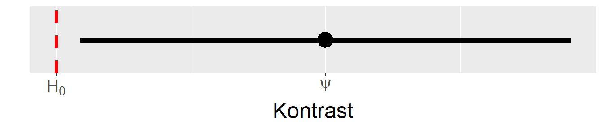
In Abbildung 11.7 ist noch einmal der Zusammenhang zwischen dem Hypothesentest unter der \(H_0\) und der Breite des Konfidenzintervalls dargestellt. Wenn das Konfidenzintervall die \(H_0\) nicht enthält, dann kann von einem statistisch signifikantem Ergebnis ausgegangen werden. Für einen gegebenem Effekt, im vorliegenden Fall ein Kontrast \(\psi\), und bekannter bzw. abgeschätzter Residualvarianz \(\sigma\), kann über den Standardfehler \(s_{\psi}\) die notwendige Stichprobengröße bestimmen. Der minimale signifikante Unterschied kann über die folgende Formel berechnet werden.
\[\begin{equation} msd = w \sqrt{\widehat{Var}\left(\sum c_i \hat{\tau}_i\right)}=w \times s_{\psi} \end{equation}\]
Es soll zum Beispiel der Effekt eines Nahrungsergänzungsmittels auf die Laufleistung bei einem Mitteldistanzwettkampf ähnlich wie bei dem Koffeinexperiment untersucht weden. Es soll das gleiche Design mit Interventions-, Placebo- und Kontrollgruppe (\(K = 3\)) verwendet werden. Es wird davon ausgegangen, dass ein Unterschied zwischen der Placebogruppe und der Interventionsgruppe von \(5\)s mindestens gefunden werden sollte um als praktisch relevant zu gelten. Damit gilt
\[\begin{equation*} msd = 5 \end{equation*}\]
Im Koffeinbeispiel wurde für \(\sigma^2\) ein Wert von \(\hat{\sigma^2} = MSE \approx 30\)s bestimmt. Daraus folgt für einen paarweisen Vergleich mit gleicher Stichprobengröße \(n\) in beiden Gruppen:
\[\begin{equation*} msd = w \sqrt{30\left(\frac{1}{n} + \frac{1}{n}\right)} = w\sqrt{30\frac{2}{n}} \leq 5 \end{equation*}\]
A-priori wird festgelegt, das nur paarweise Vergleiche durchgeführt werden soll. D.h. die Quartile muss mittels der Tukey-Methode bestimmen werden. D.h. der kritische Wert \(w\) berechnet sich nach Formel \(\eqref{eq-ed-lc-tukey-w}\).
\[\begin{equation*} w = q_{K,N-K,\alpha}/\sqrt{2} \end{equation*}\]
Eingesetzt folgt daraus:
\[\begin{align*} \frac{q_{K,N-K,\alpha}}{\sqrt{2}} \sqrt{30\frac{2}{n}} &= q_{K,N-K,\alpha} \sqrt{\frac{30}{n}} \leq 5 = msd \\ \Leftrightarrow q_{K,N-K,\alpha}^2 \frac{30}{n} &\leq 25 \\ \Leftrightarrow q_{K,N-K,\alpha}^2 \leq \frac{25}{30}n &= \frac{5}{6}n \\ \end{align*}\]
D.h. das Quadrat der studentized range quantile muss kleiner als \(\frac{5}{6}n\) sein, damit das Konfidenzintervall schmal genug ist. Da sich der Wert von \(q_{K,N-K,\alpha}\) mit der Stichprobengröße ändert, wird eine try-and-error Methode durchgeführt und die Breite des Konfindenzintervalls für verschiedene Wert von \(n\) mittels qtukey()-Funktion berechnet.
K <- 3
n <- 10:20
q_t <- qtukey(0.975,K,K*n-K)**2
n_w <- 5/6*nWenn die Werte in einer Tabelle abtragen folgt die folgende Liste (siehe Tabelle 11.7).
| n | \(q_{n,Kn-K,\alpha}^2\) | \(5/6n\) |
|---|---|---|
| 10 | 15.58 | 8.33 |
| 11 | 15.36 | 9.17 |
| 12 | 15.18 | 10.00 |
| 13 | 15.04 | 10.83 |
| 14 | 14.92 | 11.67 |
| 15 | 14.82 | 12.50 |
| 16 | 14.73 | 13.33 |
| 17 | 14.65 | 14.17 |
| 18 | 14.58 | 15.00 |
| 19 | 14.52 | 15.83 |
| 20 | 14.47 | 16.67 |
In Tabelle 11.7 ist zu sehen, dass eine Stichprobengröße von \(n = 18\) also insgesamt \(N = 54\) Athleten benötigt wird um die gewünschte Präzision für das Konfidenzintervall zu erreichen.
Die Methode die Stichprobengröße anhand der Breite des Konfidenzintervalls zu bestimmen wird als *accuracy in parameter estimation (AIPE) (Kelley und Maxwell 2003) bezeichnet. Eine gute Strategie könnte daher darin bestehen, die Stichprobengröße anhand der Power und anhand der AIPE zu bestimmen. Dabei muss nicht unbedingt die minimal significant difference als die Breite des Konfidenzintervalls angesetzt werden, sondern welche Präzision bei der Bestimmung eines Modellparameters erreicht werden sollte. Der minimale Unterschied kann beispielsweise zu einem so breitem Konfidenzintervall führen, dass zwar ein statistisch signifikantes Ergebnis erreicht wird, aber die verbleibende Unsicherheit immer noch zu hoch ist. Die letztendlich gewählte Stichprobengrößen wäre dann die größere der beiden bestimmten für AIPE und Power.
11.8 Vollständige Dokumentation eines CRDs
Hier einmal beispielhaft Dokumentation eines CRD inklusive verwendeter Mehrfachvergleiche.
Eine einfaktorielle ANOVA mit dem Faktor Gruppe ergabe einen statistisch signifikanten Haupteffekt für Gruppe \(F(2, 57) = 22,6, p < 0,001\). Überprüfung auf Varianzgleichheit zwischen den Gruppen mittels eines Levene-Tests deutete auf keine Verletzung der Voraussetzungen hin, \(F(2, 57) = 0,38, p = 0,69\). Daher wird die \(H_0\), das kein Unterschied zwischen den Gruppen besteht, abgelehnt. Die beobachtete Effektstärke \(\omega^2 = 0,42\), CI\(95\%[0,22, 0,56]\) ist als großer Effekt zu interpretieren. Pre-planned Paarweisetestung mittels Tukey-Korrektur deutete auf statistisch signifikate Unterschiede zwischen den Gruppen Koffein und Placebo \(z = -10.4\), CI95%\([-15,5, -5,5], p < 0,001\), und Koffein und Kontrolle, \(z = -13,3\), CI95\(\%[-18,4, -8,3], p < 0,001\), hin. Insgesamt deuten die Ergebnisse daher darauf hin, dass die Gabe von Koffein zu einer bedeutsamen Leistungssteigerung \((>5-10s)\) in der beobachteten Untersuchungsgruppe geführt hat.
11.9 Zum Weiterlesen
Weiter Informationen zu Mehrfachvergleiche und den möglichen Problemen findet ihr in beispielsweise in Feise (2002) und Rothman (1990).
11.10 Completely Randomized Factorial Design
Nachdem wir uns im vorhergehenden Abschnitt mit dem Completely Randomized Design Untersuchungsdesigns angeschaut haben, bei dem nur eine unabhängige nominale Variable variiert wurde, schauen wir uns jetzt den Fall an, wenn wir den Einfluss zweier nominale unabhängige Variablen auf eine abhängige Variable untersuchen wollen. Wie wir sehen werden führt dies zu einem zusätzlichen Effekt dem Interaktionseffekt. Inhaltlich bedeutet dies nicht allerdings erst mal gar nichts Neues, da wir Interaktionseffekt schon im Zusammenhang mit der multiplen Regression kennengelernt haben und die Interpretation daher auch nichts neues bedeutet. Daher wir ein Hauptaugenmerk in diesem Kapitel darin liegen, wir wir Interaktionseffekte interpretieren können bzw. welchen Einfluss diese auf die Interpretation von Haupteffekten bedeutet und welchen Einfluss Interaktionseffekte auf die Anzahl der notwendigen Replikationen haben um eine gewünschte Power zu gewährleisten. Generell wenn mehr als ein nominaler Faktor an dem Untersuchungsdesign beteiligt ist, dann wir von einem Completely Randomized Factorial Design (CRFD) gesprochen.
Die Annahmen beim CRDF sind die gleichen wie auch beim CRD. Seien ein CRFD mit zwei Faktoren \(A\) und \(B\) gegeben die jeweils \(p\) bzw. \(q\) Faktorstufen haben. Dann gelten die folgenden Annahmen.
- Unabhängige EUs
- Die EUs sind in die \(p\times q\) Gruppen eingeteilt worden
- Die Werte in jeder Gruppe sind Normalverteilt \(Y_{ijk} \sim \mathcal{N}(\mu_{ij}, \sigma^2)\) mit der gleichen Varianz \(\sigma^2\)
In der Literatur im Zusammenhang mit einem CRFD oft der Term Zellen verwendet. Dieser bezeichnet die jeweiligen Kombinationen der Faktorstufen. Sei zum Beispiel \(p = 3\) und \(q = 2\) dann erhalten wir die folgende Anordnung von Zellen (siehe Tabelle 11.8)
| \(A_1\) | \(A_2\) | \(A_3\) | |
| \(B_1\) | \(A_1B_1\) | \(A_2B_1\) | \(A_3B_1\) |
| \(B_2\) | \(A_1B_2\) | \(A_2B_2\) | \(A_3B_2\) |
Faktoren werden als gekreuzt bezeichnet, wenn alle Kombinationen der Faktoren beobachtet wurden.
11.11 Das statistische Modell im CRFD
Das statistische Modell im CRFD besteht in einer natürlichen Erweiterung des Modells für ein CRD. Die Modellstruktur ist die folgende:
\[\begin{equation} Y_{ijk} = \mu + \alpha_i + \beta_j + (\alpha\beta)_{ij} + \epsilon_{ijk}, \qquad \epsilon_{ijk}\sim \mathcal{N}(0,\sigma^2) \label{eq-ed-crfd-model} \end{equation}\]
\(i\) und \(j\) sind die Indikatoren der jeweiligen Fakorstufen für die Faktoren \(A\) und \(B\), während \(k\) der Indikator der jeweiligen EUs (Replikation) ist. \(\mu\) bezeichnet den Gesamtmittelwert und \(\alpha_i\) ist der Einfluss der \(i\)-ten Stufe von Faktor \(A\), \(\beta_j\) ist der Einfluss der \(j\)-ten Stufe von Faktor \(B\), und \((\alpha\beta)_{ij}\) bezeichent den Einfluss der Kombination der Faktoren \(A\) und \(B\) also den Interaktionsfaktor. Wenn wir das Modell im Sinne der vorher eingeführten Herleitung aus der multiplen Regression betrachten, dann werden die Effekte im Modell über Indikatorvariablen abgebildet.
Die folgenden Herleitung sind für ein balanciertes Modell, bei dem die Zellbesetzungen alle gleich sind, z.B. \(r\). In diesem Fall gilt für den Indikator \(k, k = 1, \ldots, r\) oder anders ausgedrückt, \(r_{ij} = r\) für alle \(i,j\).
Um wieder den uns bekannten Ansatz von Modellvergleichen durchzuführen, stellen wir wiederum eine Modellhierarchie auf. Das full model ist das eben beschriebene Modell (siehe Formel \(\eqref{eq-ed-crfd-model}\) während die reduzierten Modelle die folgende Reihenfolge ermöglichen:
\[\begin{align} Y_{ijk} &= \mu + \alpha_i + \beta_j + \epsilon_{ijk} \label{eq-ed-crfd-additiv} \\ Y_{ijk} &= \mu + \alpha_i + \epsilon_{ijk} \qquad (\textrm{alternativ}: Y_{ijk} = \mu + \beta_j + \epsilon_{ijk})\\ Y_{ijk} &= \mu + \epsilon_{ijk} \end{align}\]
Dadurch, dass zwei unabhängige Variablen vorhanden sind, können auch zwei verschiedene Abfolgen durchlaufen werden. Nach dem Wegfall des Interaktionseffekts \((\alpha\beta)_{ij}\) kann entweder erst \(\alpha_i\) oder \(\beta_j\) weggelassen werden. Tatsächlich macht die Reihenfolge keinen Unterschied, wenn die Stichprobengröße \(r_i\) in allen Zellen gleich ist. Entsprechend gilt dies nicht mehr, wenn die Stichprobengrößen sich unterscheiden.
Hinweis
Eine Besonderheit die in der Literatur auftauchen kann ist die Modellformulierung in Formel \(\eqref{eq-ed-crfd-additiv}\). D.h. das Modell ohne den Interaktionsfaktor. Dieses Modell kann in manchen Fälle auch das full model sein, wenn davon ausgegangen werden kann, dass keine Interaktionseffekte zwischen den beiden Variablen vorhanden sein können bzw. vorhanden sind. In der Literatur wird dieses Modell als additives Modell bzw. two-way main effects model bezeichnet.
Die statistischen Hypothesen sind wenig überraschend die üblichen mit der Annahme von keinen Effekten unter der \(H_0\) und entsprechend Effekten unter der \(H_1\). Entsprechend ist die Formulierung der \(H_0\)-Hypothesen für die Hauptfaktoren \(A\) und \(B\) bzw. den Interaktionseffekt \(A\times B\):
\[\begin{align*} \alpha_1 &= \alpha_2 = \ldots = \alpha_p = 0\\ \beta_1 &= \beta_2 = \ldots = \beta_q = 0 \\ (\alpha\beta)_{11} &= (\alpha\beta)_{12} = \ldots = (\alpha\beta)_{pq} = 0 \\ \end{align*}\]
bzw. die entsprechenden Alternativhypothesen \(H_1\), dass sich mindestens zwei Faktorstufen \(\alpha_i\) bzw. \(\beta_j\) oder Interaktionskombinationen \((\alpha\beta)_{ij}\) voneinander unterscheiden. Unter dem Ansatz des Modellvergleichs sind die Hypothesen wieder dahingehend zu interpretieren, dass die Hinzunahme bzw. das Weglassen einer Modellkomponente eine statistisch signifikante Verbesserung des Modells nach sich zieht bzw. eben nicht.
Die alternative aber äquivalente Herleitung der Hypothesen im Sinne einer Variananalyse führt zu einer Unterteilung der Gesamtvarianz in einzelne Komponenten auf der Grundlage der verschiedenen Modellkomponenten.
\[\begin{equation} SS_{\text{total}} = SS_{\text{Faktor }A} + SS_{\text{Faktor }B} + SS_{A\times B} + SS_{\text{error}} \label{eq-ed-crfd-sstotal} \end{equation}\]
Es ergibt sich die folgende \(F\)-Tabelle bei einer Zellbesetzung mit \(r\) Replikationen.
| Term | \(df\) | \(SSQ\) | \(MSQ\) | \(F\) |
|---|---|---|---|---|
| Faktor \(A\) | \(p-1\) | \(ssA\) | \(\frac{ssA}{p-1}\) | \(\frac{msA}{msE}\) |
| Faktor \(B\) | \(q-1\) | \(ssB\) | \(\frac{ssB}{q-1}\) | \(\frac{msB}{msE}\) |
| \(AB\) | \((p-1)(q-1)\) | \(ssAB\) | \(\frac{ssAB}{(p-1)(q-1)}\) | \(\frac{msAB}{msE}\) |
| Error | \(n - pq\) | \(ssE\) | \(\frac{ssE}{n-pq}\) |
\(ssE = \sum_i \sum_j \sum_k (y_{ijk} - \bar{y}_{ij.})^2\)
\(sstot = \sum_{i}\sum_{j}\sum_k y_{ijk}^2 - n\bar{y}_{...}^2\)
\(ssA = qr\sum_i \bar{y}_{i..}^2-n\bar{y}_{...}^2\)
\(ssB = pr\sum_j \bar{y}_{.j.}^2-n\bar{y}_{...}^2\)
\(ssAB = r\sum_i\sum_j \bar{y}_{ij.}^2 - qr\sum_i\bar{y}_{i..}^2 - pr\sum_j\bar{y}_{.j.}^2+n\bar{y}_{...}^2\)
\(sstot = \sum_{i}\sum_{j}\sum_k y_{ijk}^2 - n\bar{y}_{...}^2\)
\(ssA = qr\sum_i \bar{y}_{i..}^2-n\bar{y}_{...}^2\)
\(ssB = pr\sum_j \bar{y}_{.j.}^2-n\bar{y}_{...}^2\)
\(ssAB = r\sum_i\sum_j \bar{y}_{ij.}^2 - qr\sum_i\bar{y}_{i..}^2 - pr\sum_j\bar{y}_{.j.}^2+n\bar{y}_{...}^2\)
Der Schätzer für \(\sigma^2\) ist wie gewohnt die mittlere Summe \(MSE\) der quadrierten Abweichungen von den jeweiligen Gruppenmittelwerten \(\bar{y}_{ij.}\), also die Residuen \(\hat{\epsilon}_{ijk} = e_{ijk}\).
\[\begin{equation} \hat{\sigma}^2 = MSE = \frac{\sum_i \sum_j \sum_k (y_{ijk} - \bar{y}_{ij.})^2}{N-(pq)} \end{equation}\]
Eine obere Konfidenzintervallgrenze kann abgeschätzt werden mit:
\[\begin{equation} \sigma^2 \leq \frac{ssE}{\chi^2_{n-pq,\alpha}} \end{equation}\]
In Abbildung 11.8 ist ein Beispiel adaptiert nach Jadczak u. a. (2019) mit hypothetischen Daten dargestellt.
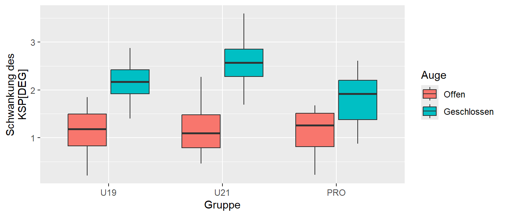
Es wurde die Gleichgewichtsfähigkeit bei drei verschiedenen Gruppen (Faktor \(A, p = 3\)) unter zwei Konditionen (Faktor \(B, q = 2\)) untersucht. Größere Werte deuten auf eine schlechtere Gleichgewichtsfähigkeit hin. Wie zu erwarten nimmt in allen drei Gruppen die Gleichgewichtsfähigkeit bei geschlossen Augen ab. Allerdings scheint der Unterschied über die drei Gruppen unterschiedlich stark ausgeprägt zu sein. D.h. die Daten deuten auf einen Interaktionseffekt. Um Interaktionseffekte noch einmal besser zu verstehen schauen wir uns im Folgenden verschiedene Arten von Interaktionseffekten und deren Beziehung zu Haupteffekten an.
11.12 Systematik und Problem bei Interaktionseffekten
In Abbildung 11.9 sind beispielhaft die Ergebnisse für ein \(2\times 2\) CRFD abgetragen.
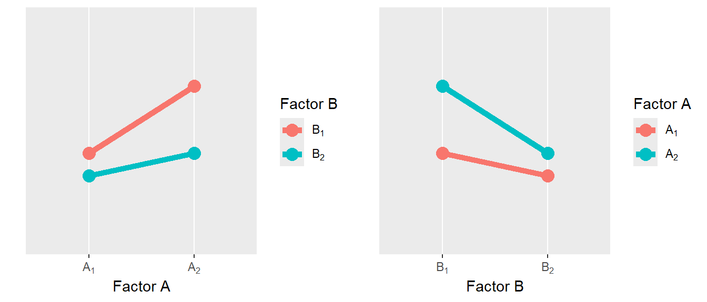
Wir haben zwei Faktoren \(A\) und \(B\) die jeweils zwei Stufen haben \(A_1, A_2\) und \(B_1, B_2\). Um die Beziehung zwischen den Haupteffekten als den Unterschieden zwischen \(A_1\) und \(A_2\) bzw. \(B_1\) und \(B_2\) unabhängige von Wert der jeweils anderern Variable zu interpretieren ist es am einfachsten die Frage zu stellen: “Wenn ich innerhalb eines Faktors von einer Stufe zur nächsten Stufe gehe. Kann ich dann eine einheitliche Aussage treffen?”. Also im Fall Abbildung 11.9 wenn ich von \(A_1\) nach \(A_2\) gehe, dann beobachten wir eine Zunahme der abhängigen Variable unabhängig ob ich mich in Stufe \(B_1\) oder \(B_2\) befinde. Das Gleiche gilt für Hauptfaktor \(B\). Wenn ich von \(B_1\) nach \(B_2\) gehe, dann nimmt in beiden Fällen (\(A_1\) und \(A_2\)) der Wert der abhängigen Variablen ab. D.h. in diesem Fall kann sinnvoll über den Haupteffekt gesprochen werden, trotzdem ein Interaktionseffekt vorliegt, die die Zunahme unter \(A\) bzw. die Abnahme unter \(B\) unterschiedlich ist, je nach dem Wert der jeweils anderen Variable. Wenn die Haupt- und Interkationseffekte dies Form annehmen, dann wird von einem ordinalen Interaktionseffekt gesprochen. D.h. bei einem ordinalen Interaktionseffekt kann auch sinnvoll über die Haupteffekte gesprochen werden.
In Abbildung 11.10 ist nun ein andere Konfiguration der Interaktionseffekte abgebildet.
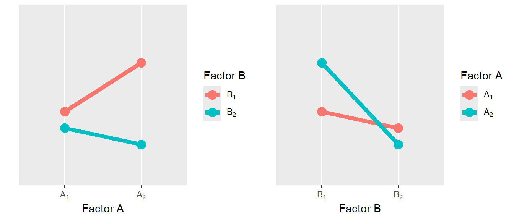
Hier macht die Interpretation der Haupteffekt nur noch im Fall von Faktor \(B\) Sinn, da in beiden Fällen es zu einer Abnahme der Werte der abhängigen Variable kommt. Für Faktor \(A\) dagegen, hängt die Veränderung in der abhängigen Variablen wenn von \(A_1\) nach \(A_2\) gegangen wird, davon ab, ob es Faktor \(B\) den Wert \(B_1\) hat, bei dem e szu einer Zunahme der abhängigen Variable kommt, während es unter \(B_2\) zu einer Abnahme kommt. Diese Art des Interaktionseffekt wird daher als hybrid oder semidisordinaler Interaktionseffekt bezeichnet. D.h. hier können wir nur für Faktor \(B\) sinnvoll über den Haupteffekt sprechen. Allerdings, hängt die Höhe der Abnahme von \(B_1\) nach \(B_2\) von Faktor \(A\) ab.
Wenig überraschend gibt es noch eine weitere Konfiguration von Interaktionseffekten die in Abbildung 11.11 abgebildet sind.
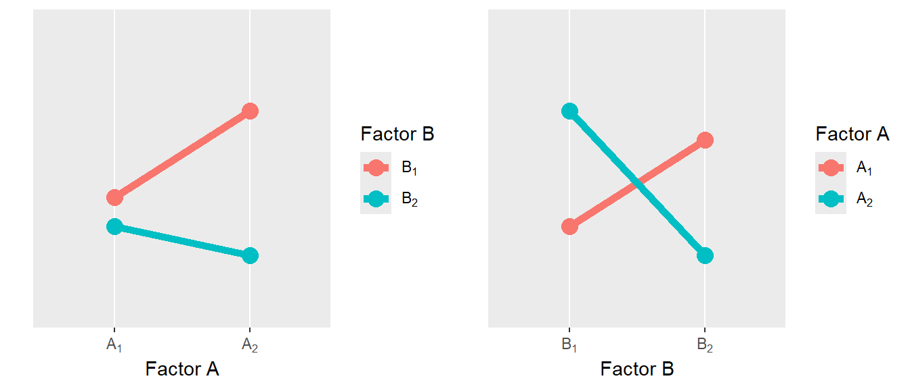
Im disordinalen Fall kann für beide Faktoren nicht sinnvoll über die Hauptfaktoren gesprochen werden, da die Veränderung der abhängigen Variablen jeweils immer von der Kombination der Faktoren abhängig ist.
Tatsächlich ist leider die Einteilung von ordinal, semidisoridnal und disoridnalen Interaktionseffekten selten in realen Experimenten zu beobachten, da oftmals mehr als nur \(2\times 2\) CRFD durchgeführt werden. In Abbildung 11.12 sind mögliche Interaktionseffekte wenn \(p,q > 2\) gilt abgetragen.
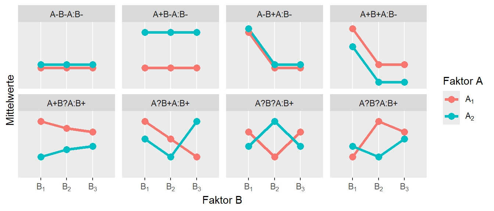
In Abbildung 11.12 ist die Interpretation der Haupteffekte bzw. die Anwesenheit von Interaktionseffekten mit (\(+\)), (\(-\)) und (\(?\)). Hier zeigt sich, dass die mögliche Anordnung von Haupt- und Interaktionseffekten sehr schnell sehr unübersichtlich wird. Daher kann als Faustregel genommen werden. In der ersten Zeile sind keine Interpretationseffekte beteiligt und in diesen Fällen ist die Interpretation der Haupteffekte unproblematisch. In der zweiten Zeile dagegen sind teilweise Interpretation möglich aber müssen immer durch mehrere Qualikationsklauseln begleigtet werden um die Daten korrekt zu interpretieren. Zum Beispiel im zweiten Beispiel von links in der zweiten Reihe, sehen wir eine Abnahme der abhängigen Variablen unter Variable \(B\), allerdings nur wir von \(B_1\) nach \(B_2\) gehen. Daher kann oft die folgende Faustregel angewendet werden.
Hinweis
Wenn Interaktionseffekte vorhanden sind, dann ist die Interpretation von Haupteffekten selten sinnvoll.
Letztendlich ist die Definition eines Interaktionseffekts, dass der Effekt der einen Variablen von der Ausprägung der anderen Variablen abhängt. Dies sollte daher immer Berücksichtigung finden. Denn Beispieln in Abbildung 11.12 folgend ist bei einem CRFD die erstellen eines sogenannten Interaktionsdiagramm sinnvall. Bei dem einfach nur die Mittelwerte gegen die Konditionen der einen Variable und verbundenüber die andere Variable dargestellt werden. In Abbildung 11.13 ist ein Interaktionsdiagramm für die Fußballbalancierdaten abgebildet.
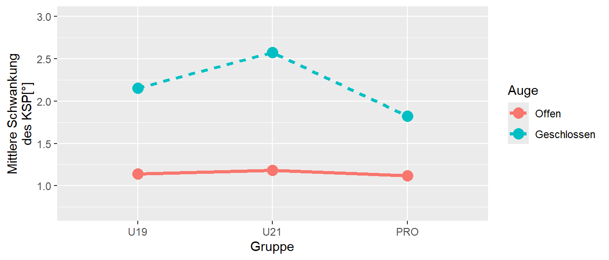
Da das CRFD nicht beschränkt ist auf nur zwei Variablen sondern beliebig weiter ausgeweitet werden kann, sollte allerdings unter dem Gesichtspunkt von interpretierbaren Interaktionseffekten genau überprüft werden wie sinnvoll die Einbeziehung vieler Faktoren ist. Beispielsweise sind bei drei Variablen eben schon Dreifachinteraktionen zu interpretieren zu denen es oft schwierig ist interpretierbare wissenschaftliche Hypothesen bzw. interpretationen zu erstellen.
Allgemein ist dabei zu sagen, dass ein Experiment mit mehreren Faktoren üblicherweise effizienter ist, als mehrere Experimenten bei denen die Faktoren einzeln untersucht werden. Zusätzlich ist eine Analyse von Interaktionseffekten bei mehreren kleinen Experimenten nicht oft nicht möglich.
11.13 Analse eines CRFD in R
Die Analyse von CRFDs in R bringt eigentlich wenig Neues mit sich und kann mit den üblichen Modellbeschreibungen des linearen Modells durchgeführt werden.
Ein Paket das die Erstellung von deskriptive Statistiken sehr stark vereinfacht ist summarytools, bzw. die Funktion descr() aus diesem Paket.
sway |> group_by(Gruppe, Auge) |>
descr(stats = c('mean','med','sd','q1','q3'))| Gruppe | Auge | variable | mean | med | sd | q1 | q3 |
|---|---|---|---|---|---|---|---|
| U19 | Offen | sway | 1.14 | 1.18 | 0.47 | 0.82 | 1.49 |
| U19 | Geschlossen | sway | 2.15 | 2.17 | 0.40 | 1.92 | 2.42 |
| U21 | Offen | sway | 1.18 | 1.09 | 0.48 | 0.78 | 1.48 |
| U21 | Geschlossen | sway | 2.57 | 2.57 | 0.50 | 2.28 | 2.85 |
| PRO | Offen | sway | 1.12 | 1.26 | 0.44 | 0.81 | 1.51 |
| PRO | Geschlossen | sway | 1.82 | 1.92 | 0.53 | 1.38 | 2.20 |
Mittels der lm()-Funktion können wir wie immer über den Modellvergleich gehen.
mod_f <- lm(sway ~ Gruppe * Auge, sway)
mod_r1 <- lm(sway ~ Gruppe + Auge, sway)
mod_r2 <- lm(sway ~ Gruppe, sway)
mod_r3 <- lm(sway ~ 1, sway)
anova(mod_r3, mod_r2, mod_r1, mod_f)Analysis of Variance Table
Model 1: sway ~ 1
Model 2: sway ~ Gruppe
Model 3: sway ~ Gruppe + Auge
Model 4: sway ~ Gruppe * Auge
Res.Df RSS Df Sum of Sq F Pr(>F)
1 149 79.376
2 147 75.201 2 4.175 9.3519 0.0001519 ***
3 146 35.130 1 40.071 179.5070 < 2.2e-16 ***
4 144 32.145 2 2.984 6.6847 0.0016743 **
---
Signif. codes: 0 '***' 0.001 '**' 0.01 '*' 0.05 '.' 0.1 ' ' 1Oder wir verwenden direkt aov() um die \(F\)-Tabelle zu erhalten:
aov() erstellen.
mod_aov <- aov(sway ~ Gruppe * Auge, data = sway)
summary(mod_aov) Df Sum Sq Mean Sq F value Pr(>F)
Gruppe 2 4.18 2.09 9.352 0.000152 ***
Auge 1 40.07 40.07 179.507 < 2e-16 ***
Gruppe:Auge 2 2.98 1.49 6.685 0.001674 **
Residuals 144 32.15 0.22
---
Signif. codes: 0 '***' 0.001 '**' 0.01 '*' 0.05 '.' 0.1 ' ' 1Wie immer wieder betont, bei der Verwendung mit aov() geschieht nichts anderes und es wird lediglich lm() im Hintergrund aufgerufen. So können wir von aov() auch die coef()-Funktion anwenden und erhalten genau die gleichen Steigungskoeffizienten \(\beta_i\) wie bei lm().
cbind(coef(mod_f), coef(mod_aov)) [,1] [,2]
(Intercept) 1.13897248 1.13897248
GruppeU21 0.04505768 0.04505768
GruppePRO -0.01707991 -0.01707991
AugeGeschlossen 1.01075960 1.01075960
GruppeU21:AugeGeschlossen 0.37937763 0.37937763
GruppePRO:AugeGeschlossen -0.31050320 -0.31050320Da es sich bei der Analyse eines CRFD um nichts anderes als um ein lineares Modell handelt, kann der Modellfit wie immer über die uns schon bekannten Methoden mittels der Residuen untersucht werden.
Tipp
Den Levene-Test können wir ebenfalls wie beim CRD anwenden.
car::leveneTest(mod_aov)Levene's Test for Homogeneity of Variance (center = median)
Df F value Pr(>F)
group 5 0.6544 0.6586
144 Die \(H_0\)-Hypothese des Levene-Tests ist die Varianzgleichheit, d.h. alle Faktorkombinationen haben die gleiche Varianz. Da der Test als Voraussetzungstest eingesetzt wird, setzen wir die Irrtumswahrscheinlichkeit wieder mit \(\alpha = 0.1\) an. Dementsprechend wird im vorliegenen Fall die \(H_0\) nicht abgelehnt und die Annahme der Varianzgleichheit beibehalten.
11.14 Effektstärken im CRFD
Natürlich kann für ein CRFD ebenfalls eine Effektstärke wie für ein CRD berechnet werden. Hier gilt hier genauso, dass keine eins-zu-eins Abbildung der Effektstärke auf eine spezifische Anordnung der Stufenmittelwerte gegeneinander \(\bar{y}_{ij.}\) besteht. Verschiedene Abweichungen der Mittelwerte gegeneinander können zu der gleichen Effektstärke führen. Ein weiterer Punkt, der die Bestimmung von Effektstärken beim CRFD verkompliziert beruht darauf, dass unterschiedliche Arten möglich sind die Residualvarianz zu bestimmen. Ausgangspunkt ist noch einmal die Effektstärke \(f\) im CRD. Im CRD ist die Effektstärke \(f\) auf der Basis des Modellansatzes, dass die Effektvarianz durch die Fehlervarianz geteilt wird, bzw. die kalibiert wird. Eine gegebene Effektvarianz \(\sigma_{\text{Effekt}}^2\) führt zu einer größeren Effektstärke wenn die Fehlervarianz \(\sigma_{\epsilon}^2\) kleiner ist und umgekehrt wenn die Fehlervarianz größer ist.
\[\begin{equation*} f = \frac{\sigma_{\text{Effekt}}^2}{\sigma_{\epsilon}^2} \end{equation*}\]
Im CRFD besteht allerdings die Möglichkeit die Fehlervarianz \(\sigma_{\epsilon}^2\) auf unterschiedliche Arten zu bestimmen. Vergleichen wir dazu einmal zwei Modelle. Ein volles Modell mit zwei Faktoren \(A\) und \(B\) und ein reduziertes Modell mit nur dem Faktor \(A\).
\[\begin{align} y_{ijk} &= \mu + \alpha_j + \beta_k + (\alpha\beta)_{jk} + \epsilon_{ijk} \\ y_{ij} &= \mu + \alpha_j + \epsilon_{ij} \\ \end{align}\]
Es soll die Effektstärke für den Faktor \(A\) bestimmt werden. Wenn wir die beiden Modell in Bezug auf die Varianzkomponenten aufschreiben, erhalten wie bereits oben beschrieben für das volle Modell:
\[\begin{equation} \sigma_y^2 = \sigma_{\alpha}^2 + \sigma_{\beta}^2 + \sigma_{(\alpha\beta)}^2 + \sigma_{\epsilon(full)}^2 \end{equation}\]
Entsprechend für das reduzierte Modell:
\[\begin{equation} \sigma_y^2 = \sigma_{\alpha}^2 + \sigma_{\epsilon(reduced)}^2 \end{equation}\]
Dementsprechend ist der Zähler \(\sigma_{\alpha}^2\) in beiden Fällen gleich, aber der Nenner \(\sigma_{\epsilon}\) wird sich unterscheiden, da \(\sigma_{\epsilon(full)}^2 \neq \sigma_{\epsilon(reduced)}^2\) gilt. Warum ist das so? Im reduzierten Modell, wird die Varianz die auf Grund des Faktors \(B\) also \(\sigma_{\beta}^2\) und der Interaktion \(A:B\) also \(\sigma_{(\alpha\beta)}^2\) entsteht nicht modelliert. Die Varianz ist aber immer noch vorhanden und wandert dadurch in den Fehlerterm \(\sigma_{\epsilon(reduced)}^2\). Daher gilt:
\[\begin{equation*} \sigma_{\epsilon(full)}^2 \leq \sigma_{\epsilon(reduced)}^2 \end{equation*}\]
In Bezug auf die Residualvarianz für den Faktor \(A\) gilt:
\[\begin{equation*} \sigma_{\epsilon(full)}^2 + \sigma_{\beta}^2 + \sigma_{(\alpha\beta)}^2 = \sigma_{\epsilon(reduced)}^2 \end{equation*}\]
Dies wiederum führt dazu je nachdem durch welche Residualvarianz die Effektvarianz \(\sigma_{\text{Effekt}}^2\) geteilt wird, die Effektstärke entweder größer oder kleiner wird. Wird die Residualvarianz \(\sigma_{\epsilon(full)}^2\) verwendet, wird entsprechend ein größeren Effekt bestimmen als wenn \(\sigma_{\epsilon(reduced)}^2\) verwendet wird. Im ersten Fall, wenn die kleiner Residualvarianz verwendet wird, wird die Effektstärke als partial bezeichnet. D.h. anhand des vollen Modells können zwei verschiedene Arten von Effektstärken bestimmen werden.
\[\begin{align*} f &= \frac{\sigma_{\alpha}^2}{\sigma_{\beta}^2 + \sigma_{(\alpha\beta)}^2 + \sigma_{\epsilon}^2} \\ f_{\text{partial}} &= \frac{\sigma_{\alpha}^2}{\sigma_{\epsilon}^2} \\ \end{align*}\]
Diese Formeln sind dabei nur konzeptionell zu verstehen und wir bestimmen die beiden Formeln wieder mittels einer \(\omega^2\)-Effektstärke.
\[\begin{align*} \hat{\omega}^2 &= \frac{ss\text{Eff}-df_{\text{Eff}}\cdot MSE}{ssT+MSE} \\ &= \frac{df\text{Eff} \cdot (F_{\text{Effekt}})-1)}{\sum_{\text{alle Effekte}}(df_{\text{Eff}_i} F_{\text{Eff}_i}) + dfE + 1} \end{align*}\]
\[\begin{align*} \hat{\omega}_{\text{partial}}^2 &= \frac{SS_{\text{effect}}-df_{\text{effect}}MS_W}{SS_{\text{effect}}+(N-df_{\text{effect}})MS_W} \\ &= \frac{df_{\text{effect}}(F_{\text{effect}})-1)}{df_{\text{effect}}(F_{\text{effect}}-1)+N} \end{align*}\]
D.h. es werden für alle drei Modellterm \(A\), \(B\) und \(A:B\) jeweils Effektstärken bestimmet. Entsprechend können weitere Effektstärken bestimmt werden, wenn mehr als zwei Faktoren im Modell verwendet werden.
Die Einordnung der Effektstärken ist wieder die gleiche wie bereits im Rahmen des CRD eingeführt.
| \(\omega^2\) | |
|---|---|
| klein | 0.01 |
| mittel | 0.06 |
| groß | 0.14 |
Die Interpretation der Effektstärke nach Tabelle 11.10 ist genauso willkürlich wie die Irrtumswahrscheinlichkeit von \(\alpha = 0.05\)!
Beispiel 11.2 In Listing 11.1 haben wir die \(F\)-Tabelle für die Fußballdaten berechnet und nun möchten wir die Effektstärke \(\omega^2\) für den Effekt der Gruppe bestimmen. Dazu extrahieren wir die benötigten Komponenten aus der Tabelle um \(\omega^2\) zu bestimmen.
ssEff <- 4.18
dfEff <- 2
ssT <- 4.18 + 40.07 + 2.98 + 32.15
MSE <- 0.22
omega_sqr_gruppe <- (ssEff - dfEff * MSE)/(ssT + MSE)
omega_sqr_gruppe[1] 0.04698492D.h bei dem Einfluss der Gruppe handelt es sich um eine mittlere Effektstärke.
In der Literatur werden in den meisten Fällen die partiellen Effektstärken angegeben. Allerdings erscheint dies wenig sinnvoll, da die Effekstärke dann eine Funktion des Untersuchungsdesings ist. Schauen wir uns ein hypothetisches Beispiel dazu an. Sei zum Beispiel eine Untersuchung durchgeführt worden um den Einfluss von zwei Instruktionsmethoden (Faktor \(A\)) zu vergleichen. Die Verarbeitung der Instruktion ist aber gleichzeitig eine Funktion von bestimmten kognitiven Prädispositionen (Faktor \(B\)) die mittels eines umfangreichen Fragebogen ermittelt werden müssen. Bei der Studie wird ein Effekt für bei beide Faktoren und deren Interaktion gefunden. Die partiellen Effektstärken werden dokumentiert. In einer Nachfolgestudie soll der Effekt der Instruktionen noch einmal reproduziert werden. Allerdings sind nicht ausreichend Resourcen vorhanden um den Fragebogen durchzuführen. Basierend auf den Effektstärken für den Faktor \(A\) aus der vorhergehenden Studie wird die Stichprobengröße bestimmt. Dies führt jetzt allerdings dazu, dass die nominale Power der Studie geringer ist, da die Effekstärke überschätzt wird, da die Varianz auf Grund der kognitiven Prädisposition in die Fehlervarianz wandert. Daher ist insgesamt die Dokumentation der normalen Effektstärke in den meisten Fällen sinnvoller wenn nicht einfach beide angegeben werden.
11.14.1 Effektstärken \(\omega^2\) und \(\omega_{\text{partial}}^2\) in R
In R kann, nachdem das Modell mit lm() gefittet wurde, mittels der Funktion omega_squared() aus dem Paket effectsize die Effektstärken bestimmen werden. omega_squared() hat einen Parameter partial der festlelgt ob die normale Effektstärke oder die partielle Effektstärke berechnet wird. Wird der Parameter auf FALSE gesetzt, werden die normalen Effektstärken bestimmt.
effectsize::omega_squared(mod_aov, partial=FALSE, ci=0.95)# Effect Size for ANOVA (Type I)
Parameter | Omega2 | 95% CI
-----------------------------------
Gruppe | 0.05 | [0.00, 1.00]
Auge | 0.50 | [0.41, 1.00]
Gruppe:Auge | 0.03 | [0.00, 1.00]
- One-sided CIs: upper bound fixed at [1.00].Entsprechend berechnet omega_squared() mit partial=TRUE die partiellen Effektstärke die leider auch standardmäßig eingestellt ist.
effectsize::omega_squared(mod_aov, partial=TRUE, ci=0.95)# Effect Size for ANOVA (Type I)
Parameter | Omega2 (partial) | 95% CI
---------------------------------------------
Gruppe | 0.10 | [0.03, 1.00]
Auge | 0.54 | [0.46, 1.00]
Gruppe:Auge | 0.07 | [0.01, 1.00]
- One-sided CIs: upper bound fixed at [1.00].Bei der Dokumentation der Effektstärke sollte wie immer auch das Konfidenzintervall angegeben werden, was in der Literatur leider auch oft nicht gemacht wird.
11.15 Mehrfachvergleiche im CRFD
Im CRFD können wir genauso wie auch im CRD Mehrfachvergleiche verwenden um gezielt Unterschiede zwischen bestimmten Kombination der Faktorstufen zu untersuchen. Prinzipiell laufen die Mehrfachvergleiche daher genauso wie im CRD ab. Es werden ein Kontrast und die dazugehörende Varianz berechnet und das Verhältnis mit einem kritischen Werten \(w\) verglichen. Wiederum in Abhängigkeit davon welche Methode verwendet wird ändert sich entsprechend der kritische Wert \(w\).
Durch die Interaktionseffekt ergbit sich jedoch wiederum ein zusätzlicher Punkt beim Interaktionsmodell der beachtet werden sollte. Nämlich, nicht immer sind alle algebraisch möglichen Vergleiche auch tatsächlich inhaltlich sinnvoll. Im Bespiel mit den Fußballdaten sind in Abbildung 11.14 noch einmal die Mittelwerte der verschiedenen Gruppen abgetragen.
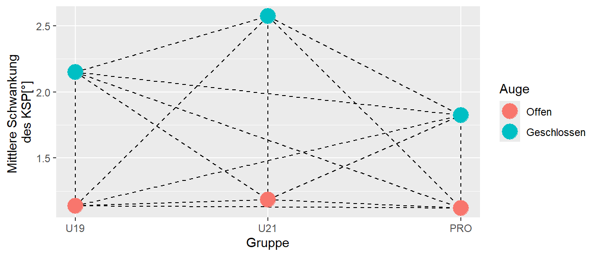
Prinzipiell können immer alle Gruppenmittelwerte des Modells miteinander paarweise verglichen werden bzw. alle weiteren komplexen Kontraste berechnet werden. Bei der Beschränkung auf die paarweisen Vergleiche, wird in diesem konkreten Fall beispielsweise der Vergleich zwischen den Werten der U19 bei geschlossenen Augen mit den PROs bei offenen Augen inhaltlichen wenig Sinn machen. Zumindest ist es nicht direkt ersichtlich welche Art von wissenschaftlicher Hypothese a-priori formuliert werden könnte, die genau diesen Vergleich zum Ziel hat. Anders ist beispielsweise der Vergleich zwischen den Augenkondition innerhalb der PRO-Spieler. Daher ist in den meisten Fällen nur eine Untermenge der möglichen paarweisen Vergleich inhaltlich auch wirklich sinnvoll. Aus Gründen der Power sollte daher die Analyse auch möglichst nur auf diese Teilmenge beschränkt werden. In Abbildung 11.15 sind die wahrscheinlich sinnvollen Vergleiche für das Beispiel eingezeichnet.
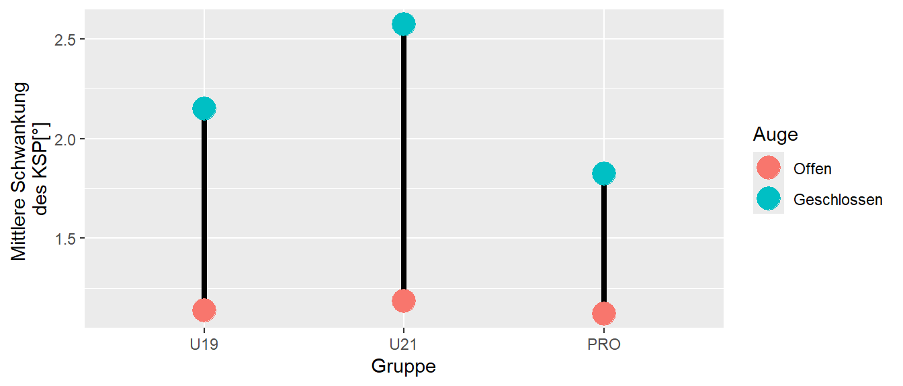
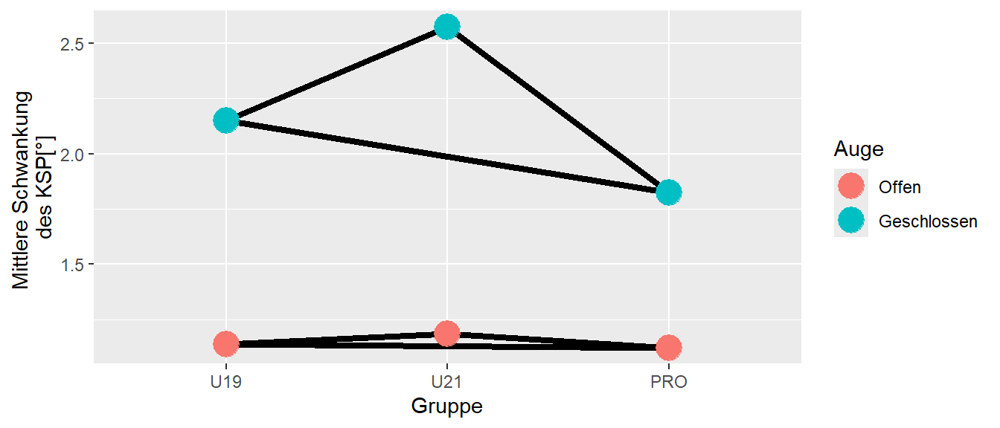
Für den vorliegenden Fall, sind daher die Unterschied zwischen den Gruppen getrennt für die beiden Augenkonditionen bzw. der Unterschied zwischen den beiden Augenkonditionen für jede Gruppe getrennt sinnvoll. D.h. es werden insgesamt neuen verschiedene paarweise Vergleichen betrachtet im Gegensatz zu den 15 möglichen. Wir beispielsweise die Bonferonni-Korrektur angewendet bedeutet dies schon einen Unterschied ob \(0.05/9 = 0.006\) oder \(0.05/15 = 0.003\) für \(\alpha\) angesetzt muss. Schauen wir uns direkt an, wie dei Mehrfachvergleiche in R durchgeführt werden.
11.16 Mehrfachvergleiche in R
In R läuft der Vergleich wiederum nach dem bekannten Muster ab. Zunächst werden die Modellmittelwerte mittels der emmeans()-Funktion berechnet. Anschließend kann dann mittels der pairs() bzw. der contrast()-Funktion der gewünschte Vergleich durchgeführt werden. Allerdings, da emmeans() extrem flexibel ist, gibt es immer mehrere Arten um zum gleichen Ergebnis zu kommen.
Fangen wir erst einmal mit allen möglichen Vergleichen an. Wir fitten zunächst alle Gruppenmittelwertskombination mit emmeans().
mod_em <- emmeans(mod_aov, ~Gruppe*Auge)
mod_em Gruppe Auge emmean SE df lower.CL upper.CL
U19 Offen 1.14 0.0945 144 0.952 1.33
U21 Offen 1.18 0.0945 144 0.997 1.37
PRO Offen 1.12 0.0945 144 0.935 1.31
U19 Geschlossen 2.15 0.0945 144 1.963 2.34
U21 Geschlossen 2.57 0.0945 144 2.387 2.76
PRO Geschlossen 1.82 0.0945 144 1.635 2.01
Confidence level used: 0.95 Im nächsten Schritt berechnen wir nun alle paarweisen Vergleiche entweder mit pairs() oder mit contrast(method = "pairwise"). Nehmen wir pairs().
pairs(mod_em) contrast estimate SE df t.ratio p.value
U19 Offen - U21 Offen -0.0451 0.134 144 -0.337 0.9994
U19 Offen - PRO Offen 0.0171 0.134 144 0.128 1.0000
U19 Offen - U19 Geschlossen -1.0108 0.134 144 -7.564 <.0001
U19 Offen - U21 Geschlossen -1.4352 0.134 144 -10.740 <.0001
U19 Offen - PRO Geschlossen -0.6832 0.134 144 -5.112 <.0001
U21 Offen - PRO Offen 0.0621 0.134 144 0.465 0.9972
U21 Offen - U19 Geschlossen -0.9657 0.134 144 -7.226 <.0001
U21 Offen - U21 Geschlossen -1.3901 0.134 144 -10.402 <.0001
U21 Offen - PRO Geschlossen -0.6381 0.134 144 -4.775 0.0001
PRO Offen - U19 Geschlossen -1.0278 0.134 144 -7.691 <.0001
PRO Offen - U21 Geschlossen -1.4523 0.134 144 -10.867 <.0001
PRO Offen - PRO Geschlossen -0.7003 0.134 144 -5.240 <.0001
U19 Geschlossen - U21 Geschlossen -0.4244 0.134 144 -3.176 0.0221
U19 Geschlossen - PRO Geschlossen 0.3276 0.134 144 2.451 0.1460
U21 Geschlossen - PRO Geschlossen 0.7520 0.134 144 5.627 <.0001
P value adjustment: tukey method for comparing a family of 6 estimates Hier erhalten wir alle Vergleiche, also auch diejenigen die inhaltlich weniger sinnvoll sind. Wollen wir uns nur auf die Vergleiche innerhalb der jeweiligen Haupteffekte kontrolliert für die jeweilige Stufe des anderen Effekts beschränken. Können wir den Parameter simple = "each" verwenden.
pairs(mod_em, simple = "each")$`simple contrasts for Gruppe`
Auge = Offen:
contrast estimate SE df t.ratio p.value
U19 - U21 -0.0451 0.134 144 -0.337 0.9393
U19 - PRO 0.0171 0.134 144 0.128 0.9910
U21 - PRO 0.0621 0.134 144 0.465 0.8878
Auge = Geschlossen:
contrast estimate SE df t.ratio p.value
U19 - U21 -0.4244 0.134 144 -3.176 0.0052
U19 - PRO 0.3276 0.134 144 2.451 0.0406
U21 - PRO 0.7520 0.134 144 5.627 <.0001
P value adjustment: tukey method for comparing a family of 3 estimates
$`simple contrasts for Auge`
Gruppe = U19:
contrast estimate SE df t.ratio p.value
Offen - Geschlossen -1.01 0.134 144 -7.564 <.0001
Gruppe = U21:
contrast estimate SE df t.ratio p.value
Offen - Geschlossen -1.39 0.134 144 -10.402 <.0001
Gruppe = PRO:
contrast estimate SE df t.ratio p.value
Offen - Geschlossen -0.70 0.134 144 -5.240 <.0001Alternativ können wir auch direkt die marginalen Mittelwerte berechnen. Zunächst berechnen wir wieder die Mittelwerte mittels emmeans() die Mittelwert für die Stufen über die Gruppen kontrolliert für Kondition der Augen.
mod_em_cauge <- emmeans(mod_aov, ~Gruppe|Auge)
mod_em_caugeAuge = Offen:
Gruppe emmean SE df lower.CL upper.CL
U19 1.14 0.0945 144 0.952 1.33
U21 1.18 0.0945 144 0.997 1.37
PRO 1.12 0.0945 144 0.935 1.31
Auge = Geschlossen:
Gruppe emmean SE df lower.CL upper.CL
U19 2.15 0.0945 144 1.963 2.34
U21 2.57 0.0945 144 2.387 2.76
PRO 1.82 0.0945 144 1.635 2.01
Confidence level used: 0.95 Die Formel ~Gruppe|Auge als zweiter Parameter zu emmeans() bedeutet, dass die Unterschiede zwischen den Stufen für Gruppe geblockt nach den Auge-Konditionen berechnet werden sollen. Alternativ könnte auch die folgende Syntax mit dem Parameter by verwendet werden:
emmeans(mod_aov, ~Gruppe, by = "Auge")Auge = Offen:
Gruppe emmean SE df lower.CL upper.CL
U19 1.14 0.0945 144 0.952 1.33
U21 1.18 0.0945 144 0.997 1.37
PRO 1.12 0.0945 144 0.935 1.31
Auge = Geschlossen:
Gruppe emmean SE df lower.CL upper.CL
U19 2.15 0.0945 144 1.963 2.34
U21 2.57 0.0945 144 2.387 2.76
PRO 1.82 0.0945 144 1.635 2.01
Confidence level used: 0.95 In beiden Fällen erhalten wir die gleichen Modellmittelwerte. Die berechneten Mittelwerte unterscheiden sich dabei nicht zudenjenigen die wir über den ersten Ansatz berechnet haben. Es wird lediglich die strukturelle Unterteilung mit berücksichtigt. Im nächsten Schritt wird wieder die pairs()-Funktion auf die Mittelwerte angewendet, beispielsweise wenn die Bonferroni-Korrektur anwenden möchten.
pairs(mod_em_cauge, adjust = 'bonferroni')Auge = Offen:
contrast estimate SE df t.ratio p.value
U19 - U21 -0.0451 0.134 144 -0.337 1.0000
U19 - PRO 0.0171 0.134 144 0.128 1.0000
U21 - PRO 0.0621 0.134 144 0.465 1.0000
Auge = Geschlossen:
contrast estimate SE df t.ratio p.value
U19 - U21 -0.4244 0.134 144 -3.176 0.0055
U19 - PRO 0.3276 0.134 144 2.451 0.0463
U21 - PRO 0.7520 0.134 144 5.627 <.0001
P value adjustment: bonferroni method for 3 tests Mit der contrast()-Funktion hätte auch alternativ für unstrukturierten Mittelwerte `contrast(mod_em, method=‘pairwise’ simple=‘Auge’) verwendet werden. Die Berechnung der Unterschiede zwischen den Augenstufen geblockt nach Gruppen erfolgt dann genau gleich. Eine Überlegung die notwendig ist, bezieht sich auf die Ebene auf der die Korrektur angewendet wird. Beispielweise, da wir zwei Mehrfachvergleiche durchführen wollen, sollten wir die \(\alpha\)-Level für die beiden Gruppen von Mehrfachvergleichen so anpassen, dass wir insgesamt unter den anvisiertem \(\alpha\) bleiben. In diesem Fall also \(\alpha/2\). Insgesamt, zeigen die Berechnungen im Beispiel, dass zwischen den Gruppen bei offenen Augen keine Unterschiede gefunden wurden, während bei geschlossenen Augen alle Unterschiede statistisch signifikant sind.
11.16.1 Cohen’s d für Mehrfachvergleiche
Cohen’s d-artige Effektstärken können wieder mit der Funktion eff_size() berechnet werden. Hier müssen wieder die Standardabweichung \(\hat{sigma}\) und die Freiheitsgrade direkt angegeben werden. In diesem Fall können diese Werte wieder mit den Funktionen sigma() und df.residual() aus dem Modellfit extrahiert werden.
eff_size(mod_em_cauge,
sigma=sigma(mod_aov),
edf=df.residual(mod_aov))Auge = Offen:
contrast effect.size SE df lower.CL upper.CL
U19 - U21 -0.0954 0.283 144 -0.655 0.464
U19 - PRO 0.0362 0.283 144 -0.523 0.595
U21 - PRO 0.1315 0.283 144 -0.428 0.691
Auge = Geschlossen:
contrast effect.size SE df lower.CL upper.CL
U19 - U21 -0.8983 0.288 144 -1.467 -0.330
U19 - PRO 0.6933 0.286 144 0.128 1.258
U21 - PRO 1.5917 0.298 144 1.003 2.181
sigma used for effect sizes: 0.4725
Confidence level used: 0.95 oder über:
eff_size(mod_em,
sigma=sigma(mod_aov),
edf=df.residual(mod_aov),
simple = "Gruppe")Auge = Offen:
contrast effect.size SE df lower.CL upper.CL
U19 - U21 -0.0954 0.283 144 -0.655 0.464
U19 - PRO 0.0362 0.283 144 -0.523 0.595
U21 - PRO 0.1315 0.283 144 -0.428 0.691
Auge = Geschlossen:
contrast effect.size SE df lower.CL upper.CL
U19 - U21 -0.8983 0.288 144 -1.467 -0.330
U19 - PRO 0.6933 0.286 144 0.128 1.258
U21 - PRO 1.5917 0.298 144 1.003 2.181
sigma used for effect sizes: 0.4725
Confidence level used: 0.95 Leider funktioniert der Parameter simple = "each" nicht mit eff_size(), d.h. wenn die unstrukturierten Gruppenmittelwerte verwendet werden, muss die Funktion zweimal aufgerufen werden, entsprechend mit simple = "Gruppe" bzw. simple = "Auge".
11.17 Anzahl der Replikationen a-priori ermitteln
Wir haben wie immer drei verschiedene Ansätze die Anzahl der Replikationen vor dem Experiment zu bestimmen:
- Anhand der Literatur wird \(f\) bestimmt.
- Es wird ein relevantes/plausibels \(\Delta\), als der Unterschied zwischen zwei Gruppen angesetzt.
- Konfidenzintervalle
Im ersten Fall gibt es zunächst nichts zu berechnen, sondern die Effektstärke für den gewünschten Effekte (Haupt- oder Interaktionseffekt) wird mittels der Literatur hergeleitet.
Im zweiten Fall wird die Effektstärke \(f\) mittels Vorüberlegungen über relevante Unterschiede \(\Delta\) zwischen Faktorstufen festgelegt wie das auch für das CRD durchgeführt wurde. Allerdings ist hierfür immer noch Information über die zu erwartende Streuung der Werte \(\sigma^2\) anhand der Literatur oder einer sonstigen Abschätzung notwendig. Die Effektstärke \(f\) kann dann über die folgende Formel abgeschätzt werden.
\[\begin{equation} f = \sqrt{\frac{\Delta^2}{2(k+1)\sigma^2}} \end{equation}\]
Der Faktor \(k\) gibt dabei die Anzahl der Freiheitsgrade für den jeweiligen Effekt an. Ändert sich dementsprechend ob es sich um einen Interaktions- oder einen Haupteffekt handelt.
Der Replikationsfaktor kann dann über den notwendigen \(F\)-Test ermittelt werden. D.h. wir müssen Tabelle 11.9 , insbesondere die Freiheitsgrade für die verschiedenen Tests, im Blick behalten. Für die beiden Faktoren \(A\) und \(B\) berechnen sich die Freiheitsgrade entsprechend mittels der Anzahl der Faktorstufen \(-1, df_A = p-1, df_B = q-1\), wenn \(p\) die Anzahl der Faktorstufen für Faktor \(A\) und \(q\) die Anzahl der Faktorstufen für Faktor \(B\) definieren. Für den Interaktionseffekt gilt für die Freiheitsgrade \(df_{A\times B} = (p-1)(q-1)\) und für die Residuen \(df_e = N-pq\) mit \(N\) der Gesamtstichprobengröße. \(F\)-Test beruht auf einem Bruch zwischen den Quadratsummen für den Effekt geteilt durch die Quadratsumme der Residuen. Dementsprechend brauchen wir für die Bestimmung des Replikationsfaktors die Anzahl der Faktorstufen und die Gesamtanzahl für einen gegebenen Effekt.
\[\begin{equation*} \text{F-Test: }F = \frac{SS_{\text{Effekt}}}{SS_{\text{Residuen}}} \end{equation*}\]
Die Berechnung efolgt nun über die Effektstärke \(f\) die uns erlaubt den Nonzentralitätsparameter \(\lambda\) zu bestimmen und die Anzahl der Stufen für die wir uns interessieren. Wollen wir zum Beispiel den Replikationsfaktor für einen Haupteffekt mit drei Stufen und \(f = 0.1\) bestimmen. Dann suchen wir diejenigen Freiheitsgrade \(df_e\) für eine gegebene Power und ein gegebenes \(\alpha\)-Niveau. Damit wir nicht zwischen \(f\) und \(lambda\) hin- und herrechnen müssen und Werte vergleichen verwenden wir direkt die Funktion pwr.f2.test() aus dem pwr-package. Die Funktion verwendet nicht \(f\) sondern \(f^2\). Mit der Funktion erhalten wir die Freiheitsgrade für die Residuen und können dann über die Umformung:
\[\begin{equation*} df_{e} = N-qp \Leftrightarrow N = df_{e} + qp \end{equation*}\]
Die Gesamtstichprobengröße.
Beispiel 11.3 Gehen wir beispielsweise von einer Effektstärke in einem \(2\times 3\) Design für den Interaktionseffekt von \(\omega^2 = 0.3\) aus. Zunächst muss \(\omega^2\) in \(f = \sqrt{\omega^2/(1-\omega^2)} = \sqrt{0.3/0.7} = 0.42\) umgerechnet werden. Die Freiheitsgrade für den Interaktionseffekt sind nach Tabelle 11.9 \(df_{A\times B} = (q-1) \times (p-1) = 1 \times 2 = 2\). Unter Verwendung der pwr.f2.test()-Funktion erhalten wir für \(\alpha=0.05\) und power \(0.8\):
pwr::pwr.f2.test(f2 = 0.42**2,
sig.level = 0.05,
power = 0.8,
u = 2)
Multiple regression power calculation
u = 2
v = 54.72222
f2 = 0.1764
sig.level = 0.05
power = 0.8D.h. aufgerundet sind die Freiheitsgrade \(df_e\) für die Quadratsumme der Residuen \(df_e = 55\). Diese Freiheitsgrade stellen wir nun um, um \(N\) berechnen:
\[\begin{equation*} N = df_e + p\cdot q = 55 + 3\cdot 2 = 61 \end{equation*}\]
Da wir bei einem \(2\times 3\)-Design insgesamt sechs Zellen haben aber \(61\) nicht durch \(6\) teilbar ist runden wir auf insgesamt \(N = 66\) auf. D.h. wir benötigen einen Replikationsfaktor von \(11\) für jede Kombination der Faktorstufen und insgesamt somit \(66\) EUs.
Insgesamt zeigt dies, dass die Anzahl der Replikation sich unterscheiden kann, je nachdem ob für ein Design die Power nach den Haupteffekten oder den Interaktionseffekten berechnet wird.
11.18 Nochmal Interaktionseffekte und Power
Es der eben gezeigten Berechnung des Replikationsfaktors ergibt sich noch ein wichtiger Punkt auf den noch mal gesondert eigegangen wird. Schauen wir uns einmal was passiert wenn wir uns die Stichprobengrößen bei einem \(4 \times 3\)-Design anschauen. Gehen wir weiter davon aus, dann die Effektstärke für alle drei Effekte gleich große sind und mit \(f = 0.25\) von mittlerer Größe. Wenn wir die Berechnungen von eben für alle drei Effekt ausführen ergibt sich die folgende Tabelle für die resultierende Anzahl von EUs (siehe Tabelle 11.11).
| Effekt | Freiheitsgrade | \(N\) |
|---|---|---|
| \(A\) | \(4-1=3\) | \(174+12=186\) |
| \(B\) | \(3-1=2\) | \(154+12=166\) |
| \(A \times B\) | \((4-1)(3-1)=6\) | \(217+12=229\) |
Wie in Tabelle 11.11 ersichtlich, steigt die benötigte Stichprobengröße mit der Anzahl der Stufen und insbesondere für die Interaktionseffekte steigt die Anzahl noch mal stark an, trotzdem für alle Effekte die gleiche Effektstärke \(f\) angesetzt wurde. Versuchen wir den Mechanismus einmal heuristisch zu verstehen.
Beim CRD haben wir gesehen, dass der Standardfehler des Haupteffekts für paarweise Vergleiche wie folgt berechnet werden kann. \(N\) ist die Gesamtzahl der EUs in den beiden beteiligten Mittelwerten.
\[\begin{equation*} \sigma_{\text{Haupteffekt}} = \sqrt{\frac{\sigma^2}{N/2} + \frac{\sigma^2}{N/2}} = \frac{2\sigma}{\sqrt{N}} \end{equation*}\]
Der Interaktionseffekt berechnet sich über die Vergleiche von vier Faktorstufen gleichzeitig, da die \(H_0\)-Hypothese die folgende Form hat:
\[\begin{equation*} \begin{aligned} H_0&: \mu_{12} - \mu_{22} = \mu_{11} - \mu_{21} \\ \Leftrightarrow H_0&: \mu_{12}-\mu_{22}-\mu_{11}+\mu_{21}=0 \end{aligned} \end{equation*}\]
Daraus folgt für den Standardfehler des Interaktionseffekts \(\sigma_{\text{Interaktion}}\):
\[\begin{equation*} \sigma_{\text{Interaktion}} = \sqrt{\frac{\sigma^2}{N/4} + \frac{\sigma^2}{N/4} + \frac{\sigma^2}{N/4} + \frac{\sigma^2}{N/4}} = \frac{4 \sigma}{\sqrt{N}} = 2\sigma_{\text{Haupteffekt}} \end{equation*}\]
D.h. der Standardfehler des Interaktionseffekts \(\sigma_{\text{Interaktion}}\) ist doppelt so groß wie derjenige des Haupteffekts $_{}. Dazu kommt, das überlicherweise die absolute Größe des Interaktionseffekt kleiner ist als diejenige des Haupteffekts. Da dies jedoch nicht den Standardfehler betrifft führt dies zu dazu, dass ein kleinerer Effekt eine höhere Streuung aufweise. D.h. die effektive Effektstärke wird zusätzlich kleiner.
Schauen wir uns diesen Zusammenhang zwischen der Power, der Effektstärke des Haupteffekts und der Effektstärke des Interaktionseffekts etwas systematischer an. In Abbildung 11.16 ist die Power für den Interaktionseffekt in Abhängigkeit vom Verhältnis von Interaktionseffekt zum Haupteffekt abgetragen, wenn die Stichprobengröße für eine Power von \(0.8\) für den Haupteffekt bestimmt wurde.
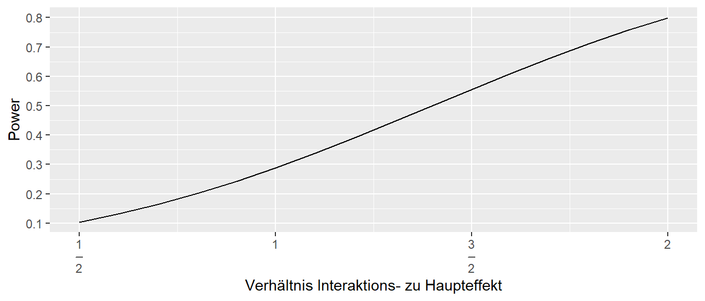
Wir können erkennen, das wenn der Interaktionseffekt nur noch halb so groß ist wie der Haupteffekt, ein nicht unüblicher Zusammenhangt, ist die Power für den Interaktionseffekt nur noch \(0.1\). Erst wenn der Interaktionseffekt die doppelte Größe des Haupteffekts hat, ist dessen Power auch gleich derer für den Haupteffekt. Eine Annahme die praktisch immer unrealistisch ist. Dies führt dazu, dass wenn eine Studie nach der Effektstärke für einen Haupteffekt designed wird aber das eigentliche Interesse einem Interaktionseffekt die Power praktisch immer zu klein ist. Anders herum wird in den Daten ein nicht zu erwartender Interaktionseffekt beobachtet, dann wird dessen Effektstärke oft deutlich überschätzt, da die Power normalerweise zu klein ist und der Effekt extrem sein muss, um tatsächlich statistisch signifikant zu werden. Weitere Probleme in diesem Zusammen sind in der Literatur eingängig beschrieben (Gelman und Stern 2006; Nieuwenhuis u. a. 2011) finden aber leider selten ausreichend Beachtung und führen daher zu experimentellen Design die hoffnungslos unterpowert sind (Button u. a. 2013).
11.19 Zum Nach- und Weiterlesen
Dean u. a. (1999) behandelt die Eigenheiten von Interaktionsdesigns sehr umfassend.
11.20 ANCOVA
In den vorhergehenden Kapiteln zu CRD bzw. CRFD haben wir uns angeschaut, wie wir den Einfluss einer oder mehrerer nominaler, unabhängiger Variablen auf eine abhängige Variable modellieren können. In diesem Zusammenhang haben wir uns auch mit der Varianzzerlegung auseinandergesetzt und immer wieder gesehen, dass diese Zerlegung auch als der Vergleich von verschiedenen Modellen miteinander betrachtet werden kann. Im Rahmen der ANCOVA führen wir jetzt wieder eine kontinuierliche Variable in unser Modell ein, wie wir das schon im Rahmen der multiplen linearen Regression getan haben. Diese zusätzliche, kontinuierliche Variable spielt dabei die Rolle einer Kontrollvariablen. Mit Hilfe dieser Kontrollvariable soll ebenfalls Varianz von \(Y\) erklärt werden. Der Effekt der Kontrollvariablen auf \(Y\) ist allerdings nicht das Primärinteresse der Untersuchung sondern dient nur die Präzision des Modells zu erhöhen. Letztendlich führt dies dazu, dass auch die Power der Untersuchung erhöht wird.
Ein Beispiel könnte eine Untersuchung zu Trainingseffekten sein. Aus der Literatur wissen wir bereits, das das Alter der Teilnehmerinnen und Teilnehmer eine Rolle auf den Trainingseffekt hat. Daher macht es Sinn für den Effekt des Alters im Rahmen der Modells zu kontrollieren. Das primäre Interessiere der Untersuchung liegt auf dem Effekt des Trainings. Die Variable Alter wird in diesem Fall als Kovariate bezeichnet, wodurch sich auch die Namensgebung ANCOVA als Abkürzung für Analysis of Covariance herleitet. Welche Variablen die Rolle der primären Variablen und der Kovariaten spielen ist dabei von der konkreten Untersuchung abhängig. Es kann genauso vorkommen, dass eine nominale Variable die Rolle der Kovariaten spielt und eine kontinuierliche Variable die Primärvariable der Untersuchung ist.
Konzeptionell wird durch die Integration einer Kovariaten Information über Unterschiede zwischen den beiden Gruppen die vor der Beobachtungsphase bestehen in das Modell mit einbezogen. D.h. trotzdem wir die Beobachtungseinheiten randomisiert in beispielsweise zwei Gruppen unterteilt haben, wissen wir, das das Alter einen Effekt auf die abhängige Variable hat. Bei einer perfekten, randomisierten Zuweisung sollte das Alter eigentlich keinen mehr Einfluss haben, da beide Gruppen die gleiche Altersstruktur haben sollten. Trotzdem sind wir in der Lage die Einbeziehung zusätzliche Varianz aufzuklären und können so den Effekt der Primärvariablen hoffentlich besser isolieren. Oft kann zum Beispiel der Startwert der abhängigen Variable als Kovariate verwendet werden. Die Kovariate ist dann auf der gleichen Skala wie die Zielvariable.
Beispiel 11.4 In Fien u. a. (2019) wurde unter anderem der Einfluss einer Trainingsintervention auf die Gehgeschwindigkeit in einem zweiarmigen Untersuchungsdesign untersucht. Als Zielvariable wurde die Gehgeschwindigkeit nach der Interventionsphase verwendet. Um die bestehenden Unterschiede zwischen den Teilnehmerinnen und Teilnehmer vor der Untersuchung mit einzubeziehen, wurde die Gehgeschwindigkeit vor der Intervention als Kovariate verwendet.
Definition 11.3 (Kovariate) Eine Kovariate ist eine Variable, die verwendet wird, um den Einfluss auf die abhängige Variable zu kontrollieren um genauere Schätzungen der Beziehungen zwischen den primären unabhängigen Variablen und der abhängigen Variable zu erhalten.
Alternativ werden in der Literatur auch die Begriffe Störvariable (engl. nuisance factor) oder concomitant variable (engl.) verwendet. Wenn die Kovariate auf der gleichen Skala wie die Primärvariable ist, wird sie auch als commensurate (engl.) bezeichnet.
Beginnen wir mit einem einfachen konzeptionellen Modell (siehe Abbildung 11.17).
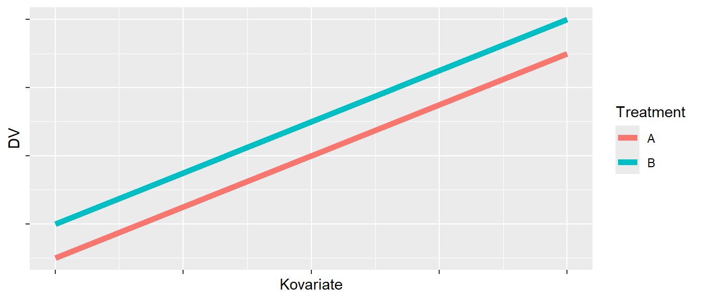
Abbildung 11.17 zeigt den Zusammenhang zwischen zwei Gruppen \(A\) und \(B\) und einer abhängigen Variablen DV sowie den Zusammenhang einer Kovariate (\(x\)-Achse) mit DV. Zwischen der Kovariaten und der DV besteht ein positiver Zusammenhang und der Effekt von Treatment \(A\) ist kleiner als derjenige von Treatment \(B\). Der Effekt der Kovariaten ist dabei in beiden Gruppen gleich und es besteht keine Interaktion zwischen der Kovariaten und den Gruppen. Dies führt dazu, dass die beiden Geraden parallel zueinander sind. Letztendlich haben wir dieses Modell schon bei der Besprechung der Intergration von nominalen Variablen in das multiple Regressionsmodell behandelt.
Wenn wir die beiden Gruppen miteinander vergleichen sind mehrere unterschiedliche Vergleiche möglich. Nehmen wir zum Beispiel einen Datenpunkt \(P1\) aus Gruppe \(A\). Dann können wir den \(P1\) mit mehreren verschiedenen Datenpunkten aus Gruppe \(B\) vergleichen. In Abbildung 11.18 sind drei mögliche Vergleiche eingezeichnet.
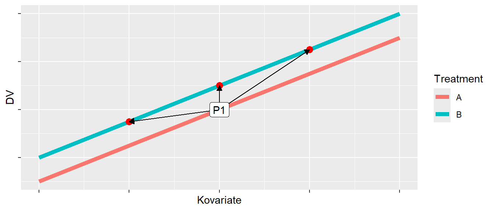
Letztendlich erscheint aber nur einer der Vergleiche sinnvoll, nämlich der Vergleich wenn die beiden Gruppenwerte den gleichen Wert in der Kovariate haben. Wäre zum Beispiel die Kovariate das Alter, dann würde ein Vergleich von zwei Personen die sich im Alter unterscheiden wenig sinnvoll da nicht klar ist ob ein beobachteter Unterschied zwischen den beiden Personen in der abhängigen Variable auf den Unterschied im Alter oder auf den Unterschied im Treatment zurück zu führen ist. Genau dieses Problem wird mit Hilfe der ANCOVA gelöst. Die ANCOVA liefert daher eine Antwort auf die Frage:
Wie unterschieden sich die Gruppen voneinander, wenn sie die gleichen Werte in der Kovariate hätten?
Schauen wir uns ein weiteres Beispiel an. In Abbildung 11.19 sind diesmal Datenpunkte eingezeichnet und scheinbar ist bei der Zuweisung der Teilnehmerinnen und Teilnehmer etwas grundsätzlich schief gelaufen.
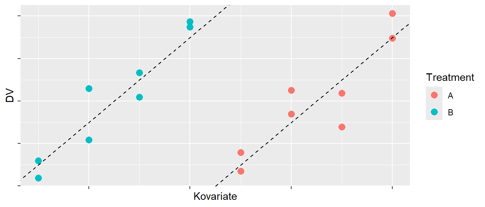
Die Personen in Gruppe \(B\) haben alle einen kleineren Wert in der Kovariate als die Personen in Gruppe \(A\). Gleichzeitig hat die Kovariate aber einen positiven Einfluss auf die DV. Hätte wir keine Information über die Kovariate und würden die beiden Gruppenmittelwerte miteinander vergleichen, dann würden wir wahrscheinlich keinen Unterschied zwischen den beiden Gruppen finden (siehe Abbildung 11.20).
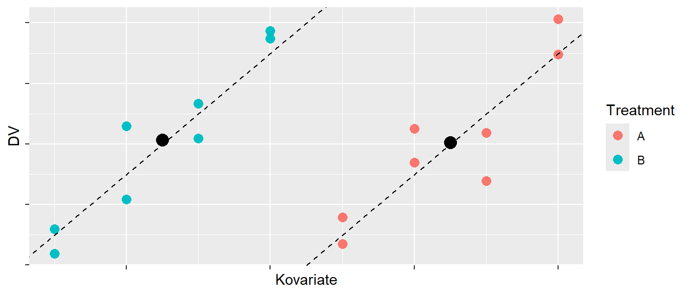
Um die beiden Gruppen miteinander vergleichen zu können, müssen wir die Unterschiede in den Mittelwerten der Kovariaten korrigieren um die Gruppen miteinander vergleichbar zu machen. D.h. wie würden die Unterschied aussehen, wenn beide Gruppen die gleiche Verteilung in der Kovariaten hätten.
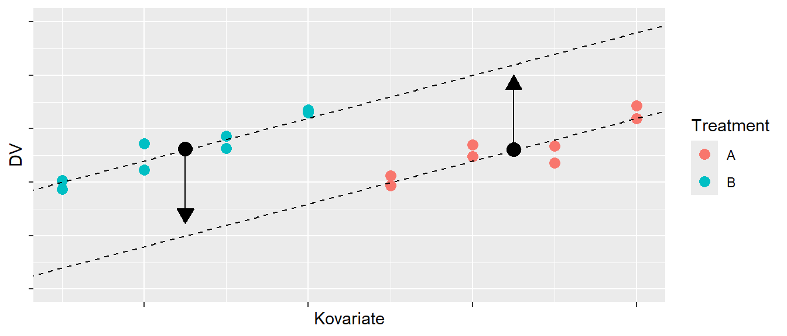
In Abbildung 11.21 sind die eigentlich sinnvollen Vergleiche angezeigt. Dabei wird auch noch einmal klar, dass in diesem Modell sobald wir für die Werte der Kovariaten kontrolliert haben, die Position des Vergleichs unerheblich ist, da wir von einem Modell ausgehen, bei dem der Effekt der Kovariaten in beiden Gruppen gleich ist. Dies führt zu den parallelen Linien.
11.21 Das Modell
Übertragen wir die Beispiele nun wieder in eine Modellformulierung. Letztendlich können wir, wie bereits angemerkt, das uns schon bekannte Modell aus der multiple linearen Regression anwenden.
\[\begin{equation} Y_{it} = \mu + \tau_i + \beta x_{it} + \epsilon_{it} \quad \epsilon_{it} \sim \mathcal{N}(0,\sigma^2), i = 1,\ldots,K \label{eq-ed-ancova-model} \end{equation}\]
In Model \(\eqref{eq-ed-ancova-model}\) kommt dementsprechend nichts Neues dazu, sondern unser bekanntes lineares Modell. Der einzige Unterschied besteht in der Terminologie, während wir vorher \(\alpha_i\) für die nominale Variable verwendet haben, wird der nominale Faktor im ANCOVA-Modell \(\tau_i\) bezeichnet. Das sind aber nur Unterschiede in den Buchstaben die leider auch in der Literatur unterschiedlich verwendet werden.
Um die spätere Interpretation der Koeffizienten zu vereinfachen, wird auch oft ein in der Kovariaten zentriertes Modell verwendet. Dies hat jedoch keine Auswirkung auf das Ergebnis. Von den Werten der Kovariate wird dazu der Gesamtmittelwert \(\bar{x}_{..}\) der Kovariatenwerten abgezogen.
\[\begin{equation} Y_{it} = \mu + \tau_i + \beta (x_{it} - \bar{x}_{..}) + \epsilon_{it} \label{eq-ed-ancova-model-c} \end{equation}\]
Ein interessante Interpretation der ANCOVA erhalten wir, wenn wir in Formel \(\eqref{eq-ed-ancova-model-c}\) auf beiden Seiten \(\mu + \tau_i\) abziehen (siehe (Casella 2009, p.65)).
\[\begin{equation*} Y_{it} - \beta (x_{it} - \bar{x}_{..}) = \mu + \tau_i + \epsilon_{it} \end{equation*}\]
Auf der linken Seite stehen die Residuen einer einfachen Regression, die Differenz der beobachteten Werte \(Y_{it}\) von denen mittels der Regression auf die Kovariate vorhergesagten Werten \(\beta (x_{it} - \bar{x}_{..}\). Auf der rechten Seite haben wir das Modell der CRD. D.h. durch die ANCOVA werden die beobachteten Werte \(Y_{it}\) korrigiert und dadurch deren Varianz reduziert.
Da es sich bei der ANCOVA aber insgesamt wieder nur um eine Variante des linearen Modell handelt, ergeben sich entsprechend auch keine unbekannten Voraussetzungen:
- Experimental units sind randomisiert den \(K\) Gruppen zugewiesen worden
- Varianz \(\sigma^2\) ist konstant über Gruppen und Werte der Kovariate
- Die Kovariate und das Treatment sind statistisch unabhängig voneinander
Der letzte Punkte, die Unabhängigkeit zwischen dem Treatment und der Kovariate ist wichtig. Dies bedeutet, dass der Einfluss der Kovariaten sind nicht im Zusammenhang mit dem Treatment verändert. Der der ANCOVA zugrundeliegende Test beruht dann wie immer auf einen Modellvergleich eines vollen Modell (Model \(\eqref{eq-ed-ancova-model}\)) mit einem reduzierten Modell. Das reduzierte Modell beinhaltet dann nur die Kovariate, da wir den Unterschied in Bezug auf den Effekt der Primärvariable überprüfen wollen.
\[\begin{align*} y_{ij} &= \mu + \tau_{j} + \beta X_{ij} + \epsilon_{ij} \quad \text{full} \\ y_{ij} &= \mu + \beta X_{ij} + \epsilon_{ij} \quad \text{reduced} \end{align*}\]
Die \(H_0\) für den Treatmenteffekt ist:
\[\begin{equation*} H_0: \tau_1 = \tau_2 = \cdots = tau_K = 0 \end{equation*}\]
Der Unterschied zwischen den Treatmentstufen wird dabei für den Wert \(\bar{x}_{..}\), als den Mittelwert der Kovariate über alle Gruppenhinweg bestimmt.
Die \(H_0\) für die Kovariate ist:
\[\begin{equation*} H_0: \beta = 0 \end{equation*}\]
Das Ergebnis der Analyse wird oft auch in Form einer Varianz-Tabelle dargestellt (siehe Tabelle 11.12).
| Term | \(df\) | \(SSQ\) | \(MSQ\) | F |
|---|---|---|---|---|
| \(T|\beta\) | \(K-1\) | \(ss(T|\beta)\) | \(\frac{ss(T|\beta)}{K-1}\) | \(\frac{ms(T|\beta)}{msE}\) |
| \(\beta|T\) | \(1\) | \(ss(\beta|T)\) | \(\frac{ss(\beta|T)}{1}\) | \(\frac{ms(\beta|T)}{msE}\) |
| Error | \(N-K-1\) | \(ssE\) | \(msE\) |
Die Schreibweise \(T|\beta\) bezeichnet den Effekt des Treatments nachdem für die Kovariate kontrolliert wurde während \(\beta|T\) den Effekt der Kovariate nachdem für das Treatment kontrolliert wurde beschreibt. Hier tritt eine Besonderheit auf, die Summe der Quadratsummen addiert sich nicht zur totalen Varianz von \(Y\). Dies kommt dadurch zustande das die Quadratsummen nicht der Hierarchie folgend vom einfachsten zum vollen Modell gebildet werden, sondern Vergleiche zwischen dem vollen Modell und jeweils einem Modell bei dem die andere Variable bereits vorhanden ist durchgeführt werden. Diese Quadratsummen werden als korrigierte Quadratsummen (adjusted sums of squares) (Christensen 2018, p.362) oder auch Type-II Quadratsummen bezeichnet. Dadurch verlieren die Quadratsummen ihre additive Eigenschaft. Im Spezialfall wenn beide Gruppen den gleichen Mittelwert in der Kovariaten \(X\) haben, sind die Quadratsummen dann doch wieder additive. Die beiden Effekt Treatment und Kovariate sind dann orthogonal zueinander.
Schauen wir uns die Analyse in einem Spielzeugbeispiel an. In Tabelle 11.13 ist ein Beispieldatensatz aus Maxwell u. a. (2004) abgebildet.
| ID | Gruppe | x | y |
|---|---|---|---|
| S1 | TRT | 1 | 4 |
| S2 | TRT | 2 | 9 |
| S3 | TRT | 3 | 8 |
| S4 | CON | 3 | 12 |
| S5 | CON | 4 | 11 |
| S6 | CON | 5 | 16 |
Wir haben zwei Gruppen (TRT und CON) mit jeweils \(N = 3\) mit einer Kovariate \(x\).
Ein Vergleich des vollen und des reduzierten Modells führt zu folgendem Ergebnis:
| term | df.residual | rss | df | sumsq | statistic | p.value |
|---|---|---|---|---|---|---|
| y ~ x | 4 | 14.4 | ||||
| y ~ x + group | 3 | 12.0 | 1 | 2.4 | 0.6 | 0.495 |
Wie wir Tabelle 11.14 sehen können finden wir keinen statistisch signifikanten Effekt für das Treatment nachdem wir für die Kovariate \(X\) kontrolliert haben. Dargestellt als Varianztabelle erhalten wir die folgende Dokumentation (siehe Tabelle 11.15):
| Term | SSQ | df | MSQ | F | p-Wert |
|---|---|---|---|---|---|
| x | 16.0 | 1 | 16.0 | 4.0 | 0.139 |
| group | 2.4 | 1 | 2.4 | 0.6 | 0.495 |
| Residuals | 12.0 | 3 | 4.0 |
Hier finden wir ebenfalls keinen statisch signifikaten Effekt für beide Variablen, die Wert für die Treatmentvariable sind in beiden Tabellen gleich. Schauen wir uns die Summe der Quadratsummen an.
\[ SSQ_x + SSQ_{\text{group}} + SSE = 16+2.4+12 = 30.4 \]
Aber die totale Quadratsumme von \(y\) ist \(SST = 82\). D.h. die Summer der Quadratsummen addiert sich nicht zu \(SST\).
Schauen wir aber rein interessehalber an, was passiert wenn wir den Treatmenteffekt gegen ein auf den \(y\)-Achsenabschnitt reduziertes Modell testen. Wir ignorieren die Information aus der Kovariate.
| term | df.residual | rss | df | sumsq | statistic | p.value |
|---|---|---|---|---|---|---|
| y ~ 1 | 5 | 82 | ||||
| y ~ group | 4 | 28 | 1 | 54 | 7.7143 | 0.0499 |
In Tabelle 11.16 haben wir nun einen statistisch signifikanten Effekt gefunden. Wie kann das denn sein? Schauen wir uns dazu eine graphische Darstellung der Daten an (siehe Abbildung 11.22).
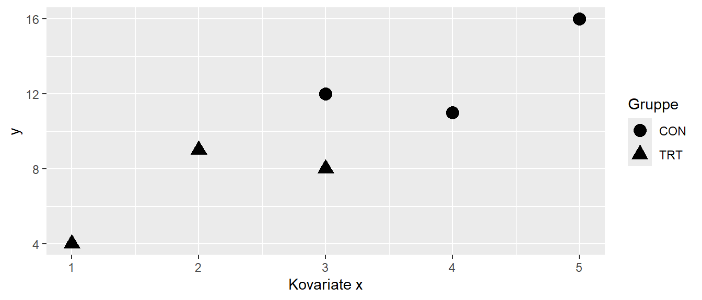
In Abbildung 11.22 können wir sehen, dass die beiden Gruppen sich deutlich in der Kovariate \(x\) voneinander unterscheiden. Dies führt dazu, dass die Mittelwerte der beiden Gruppen auch entsprechend unterschiedlich voneinander sind. Dadurch führt ein Test für den Unterschied zwischen den beiden Gruppen dazu, dass es zu einem statistisch signifikanten Ergebnis für das Treatment kommt. Letztendlich wird dieser Unterschied nur durch die Kovariate verursacht. Wird für die Kovariate kontrolliert, dann verschwindet der Effekt (siehe Abbildung 11.23).
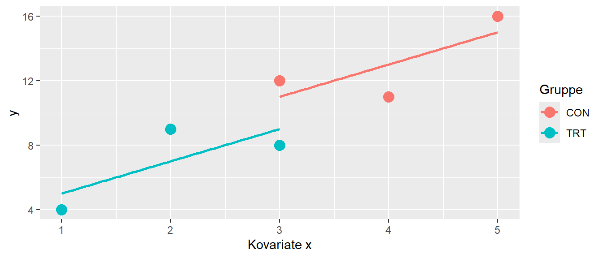
In Abbildung 11.23 sehen wir, dass wenn die beiden parallen Geraden für die Kovariate auf Basis des ANCOVA-Modells eingefügt werden, dann ist der Unterschied zwischen den beiden Gruppen deutlich geringer. Dies betont noch einmal, dass ein Vergleich nur sinnvoll ist, wenn das level der Kovariaten zwischen den beiden Gruppen gleich ist. Es wird in diesem Fall dann von adjusted means \(\bar{Y}_l'\) gesprochen. Dazu wird der Mittelwert \(\bar{X}_{..}\) der Kovariaten \(X\) über alle Gruppen gebildet und dann der Effekt der Gruppe berechnet.
\[\begin{equation*} E[\bar{Y}_{i.}] = \mu + \tau_i + \beta\bar{x}_{..} \label{eq-ed-ancova-adjusted-mean} \end{equation*}\]
Im Beispiel werden die Gruppen daher wie folgt miteinander verglichen (siehe Abbildung 11.24)
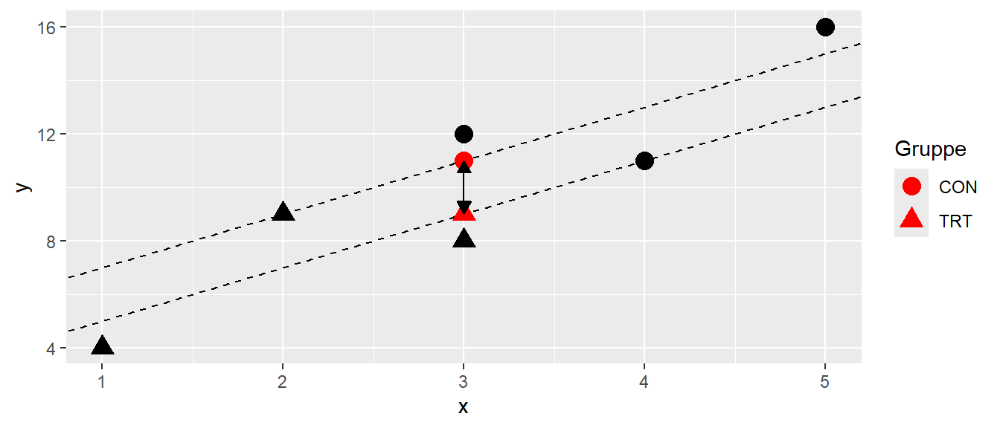
Wie wir an dem Beispiel sehen konnten, führt die Kombination von Mittelwerten in der Kovariaten \(X\) dazu, dass der Effekt kleiner wird nachdem für die Kovariate kontrolliert wurde. Dies ist nicht immer der Fall sondern hängt davon ab, wie groß der Effekt ist und wie die Anordnung der Mittelwerte \(\bar{X}_j\) in den Gruppen ist.
In Abbildung 11.25 ist der Fall noch mal etwas klarer dargestellt.
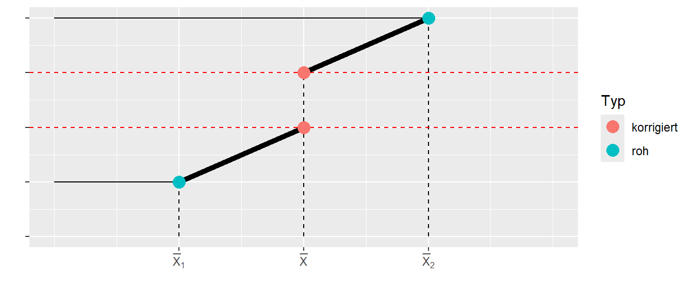
Wir haben einerseits die einfachen, rohen Gruppenmittelwerte und die korrigierten Mittelwerte. In Abbildung 11.25 sind die einfachen Mittelwerte weiter auseinander entfernt als die korrigierten Mittelwerte. Daher wird der Effekt nach der Korrektur kleiner. Es kann aber auch der gegensätzliche Effekt eintreten. In Abbildung 11.26 ist dafür ein vereinfachtes Beispiel dargestellt.
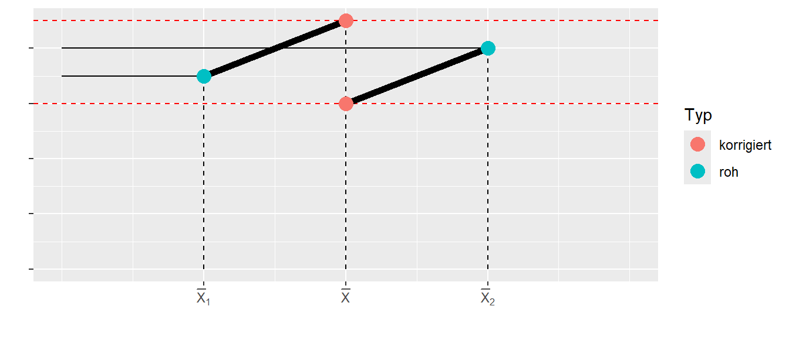
In Abbildung 11.26 sind die einfachen Gruppenmittelwerte näher zusammen als dies der Fall bei den korrigierten Mittelwerten der Fall. Darin können wir sehen, dass nicht immer direkt klar ist in welche Richtung sich die Effekte verändern, wenn für eine Kovariate kontrolliert wird. Die Veränderung des Effekts hängt mit dem Zusammenhang zwischen der Kovariate und der abhängigen Variable \(\beta\), dem Abstand der Mittelwerte der Kovariate \(\bar{X}_i\) in den Gruppen und natürlich dem tatsächlichen Effekt \(\tau_i\) zusammen.
11.22 Analyse einer ANCOVA in R
Für die Analyse in R können wir die üblichen Herangehensweise mittels lm() verwenden. Einzig, wenn wir die Varianztabelle nach dem Muster in Tabelle 11.12 erzeugen wollen und nicht von Hand die Modellvergleiche durchführen wollen, müssen wir auf die Funktion ANOVA() aus dem package car zurückgreifen. Beispielweise für das Spielzeugbeispiel (Daten sind im tibble bw) ergibt sich der folgende Code:
mod <- lm(y ~ group + x, bw)
car::Anova(mod)Anova Table (Type II tests)
Response: y
Sum Sq Df F value Pr(>F)
group 2.4 1 0.6 0.4950
x 16.0 1 4.0 0.1393
Residuals 12.0 3 Über die Modellvergleiche:
mod_full <- lm(y ~ group + x, bw)
mod_r1 <- lm(y ~ group, bw)
mod_r2 <- lm(y ~ x, bw)
anova(mod_r1, mod_full)Analysis of Variance Table
Model 1: y ~ group
Model 2: y ~ group + x
Res.Df RSS Df Sum of Sq F Pr(>F)
1 4 28
2 3 12 1 16 4 0.1393anova(mod_r2, mod_full)Analysis of Variance Table
Model 1: y ~ x
Model 2: y ~ group + x
Res.Df RSS Df Sum of Sq F Pr(>F)
1 4 14.4
2 3 12.0 1 2.4 0.6 0.495Wenn wir die Standard-anova()-Funktion auf das lm-Modell anwenden erhalten wir einen sequentiellen Modellvergleich bei dem es darauf ankommt in welcher Reihenfolge wir die unabhängigen Variablen in das Modell eingefügt haben.
mod_g_x <- lm(y ~ group + x , bw)
mod_x_g <- lm(y ~ x + group , bw)
anova(mod_g_x)Analysis of Variance Table
Response: y
Df Sum Sq Mean Sq F value Pr(>F)
group 1 54 54 13.5 0.0349 *
x 1 16 16 4.0 0.1393
Residuals 3 12 4
---
Signif. codes: 0 '***' 0.001 '**' 0.01 '*' 0.05 '.' 0.1 ' ' 1anova(mod_x_g)Analysis of Variance Table
Response: y
Df Sum Sq Mean Sq F value Pr(>F)
x 1 67.6 67.6 16.9 0.02607 *
group 1 2.4 2.4 0.6 0.49503
Residuals 3 12.0 4.0
---
Signif. codes: 0 '***' 0.001 '**' 0.01 '*' 0.05 '.' 0.1 ' ' 111.23 Effektstärke bei der ANCOVA
Für die ANCOVA können wir natürlich auch wieder eine Effektstärke berechnen. Wir verwenden wieder eine \(\Omega^2\)-Typ Effektstärke für den Gesamteffekt des Modells (siehe Formel \(\eqref{ed-ancova-omega_sqr}\).
\[\begin{equation} \hat{\omega}^2=\frac{df_{\text{effect}}(MS_{\text{effect}}-MS_{\text{error}})}{SS_{\text{total}}+MS_{\text{error}}} \label{ed-ancova-omega_sqr} \end{equation}\]
Für das Spielzeugbeispiel erhalten wir den folgenden Wert:
\[ \hat{\omega}^2 = \frac{1(2.4 - 4)}{82 + 4} = -0.02 \]
Per Konvention wird bei \(\hat{\omega}^2 < 0\) der Wert auf \(0\) gekappt. D.h. in diesem Fall ist die Effektstärke gleich \(0\). Die Effektstärke wird dabei bei Vernachlässigung der Kovariaten bestimmt. Die Kovariate wird als intrinsische Variable betrachtet und daher gehört die durch die Kovariate verursachte Varianz zur Varianz der abhängigen Variablen. Daher wird bei der ANCOVA der Gesamteffekt unter Einbeziehung der Kovariatenvarianz berechnet. D.h. es wird nicht der partielle Effekt bestimmt.
Wenn wir die Effektstärke in R berechnen wollen, können wir wieder auf das package effectsize zurückgreifen und die omega_squared() Funktion anwenden. Hierbei sollte der Parameter partial wieder auf FALSE gesetzt werden um den globalen Effekt zu berechnen.
effectsize::omega_squared(mod_1, partial=F)# Effect Size for ANOVA (Type I)
Parameter | Omega2 | 95% CI
---------------------------------
x | 0.74 | [0.00, 1.00]
group | 0.00 | [0.00, 1.00]
- One-sided CIs: upper bound fixed at [1.00].11.24 Mehrfachvergleiche bei der ANCOVA
Sollten wir einen statistisch signifikanten Effekt für die Treatmentvariable gefunden haben, dann können wir, wie üblich, auch Mehrfachvergleiche über Kontraste \(\Psi_i\) berechnen. Dies macht nur Sinn wenn \(K>2\) gilt, da ansonsten der einzelne \(\tau_i\)-Koeffizient im Modell direkt den Vergleich der beiden Gruppen gibt. Auf die Herleitung der Varianz der Kontraste verzichten wir hier, da sich außer umfangreicher Algebra nichts grundlegendes Neues ergibt. Die Varianz für einen Kontrast \(\Psi_i\) besitzt einen zusätzlichen Term für den Einfluss der Kovariate \(X\).
\[ Var\left(\sum_{i}c_i \hat{\tau_i}\right) = MSE\left(\sum_i\frac{c_i^2}{r_i} + \frac{(\sum_i c_i \bar{x}_{i.})^2}{\sum_{i=1}^K \sum_{t=1}^{r_i} (x_{it}-\bar{x}_{i.})^2} \right) \] Der interessante Punkte hier, das die Varianz mit dem Abstand der Mittelwerte der Kovariate in den Gruppen \(\bar{x}_{i.}\) größer wird. Deshalb ist eine möglichst ähnliche Verteilung der Kovariaten in den Gruppen zu bevorzugen. Um das nominelle Signifikanzniveau dann wieder für Mehrfachtestung zu kontrollieren können entweder eine Bonferroni- (pre-planned) oder die die Scheffé-Methode verwendet werden. Für die Tukey-Methode gibt es keinen geschlossenen Beweis, obwohl wahrscheinlich auch die Tukey-Methode möglich ist (vgl. Dean u. a. 1999, p.294).
11.25 Mehrfachvergleiche in R
Um Mehrfachvergleiche in R durchzuführen, verwenden wir wieder das emmeans-package. Schauen wir uns dazu ein Beispiel hypothetisches Beispiel aus (Maxwell u. a. 2004, p.429) mit drei Stufen für die Treatmentvariable an (siehe Abbildung 11.27). Es wurde drei Patientengruppen mit Depression in drei Gruppen unterteilt. Eine Gruppe fungierte als Kontrollgruppe (wait list), eine Gruppe bekam ein Medikament (SSRI) und eine Gruppe bekam ein Placebo. Die Patienten wurde vor und nach dem Treatment auf einer Depressionskala (BDI depression score) getestet.
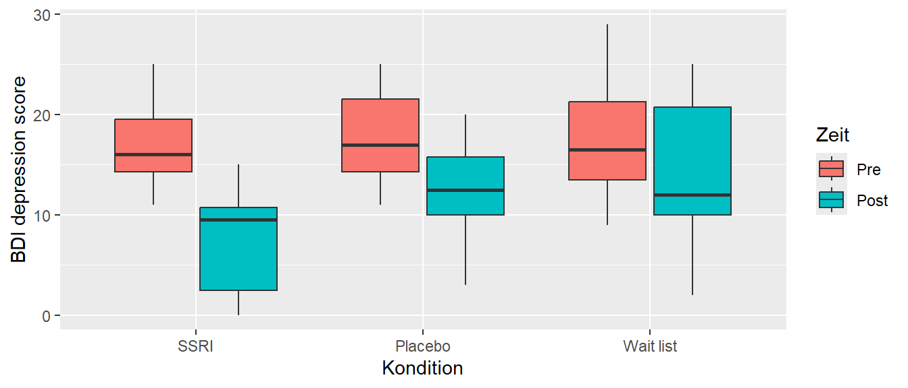
Da davon auszugehen ist, dass die Schwere der Depression vor Beginn der Untersuchung einen Einfluss auf das Ergebnis hat, wurde die Eingangsmessung als eine Kovariate behandelt (commensurate covariate). Die Analyse der Daten (in tibble bdi_w) führte zu folgendem Ergebnis:
mod_bdi <- lm(Post ~ Pre + Condition, bdi_w)
car::Anova(mod_bdi)Anova Table (Type II tests)
Response: Post
Sum Sq Df F value Pr(>F)
Pre 313.37 1 10.7723 0.002937 **
Condition 217.15 2 3.7324 0.037584 *
Residuals 756.33 26
---
Signif. codes: 0 '***' 0.001 '**' 0.01 '*' 0.05 '.' 0.1 ' ' 1Es wurde ein statistisch signifikanter Effekt für die Gruppenzugehörigkeit gefunden. Den nachfolgenden Mehrfachvergleich können wir für die paarweisen Vergleiche wie folgt wieder mittels emmeans() berechnen.
bdi_em <- emmeans(mod_bdi, ~Condition)
pairs(bdi_em, infer=T, adjust='scheffe') contrast estimate SE df lower.CL upper.CL t.ratio p.value
SSRI - Placebo -4.45 2.42 26 -10.72 1.823 -1.841 0.2033
SSRI - Wait list -6.44 2.41 26 -12.71 -0.177 -2.669 0.0429
Placebo - Wait list -1.99 2.41 26 -8.26 4.269 -0.826 0.7139
Confidence level used: 0.95
Conf-level adjustment: scheffe method with rank 2
P value adjustment: scheffe method with rank 2 D.h. wir finden nur für den Kontrast zwischen der medikamentös behandelten Gruppe und der Kontrollgruppe einen statistisch signifikanten Effekt. An dem Beispiel können wir auch schön sehen, wie das ANCOVA-Modell eine Alternative darstellt um Daten zu analysieren die traditionell eher unter Repeated measures Designs fallen. Tatsächlich lässt sich zeigen, dass unter relativ milden, realistischen Annahmen die ANCOVA eine hohe Power für diese Designs besitzt (siehe Wan 2021, 2020).
11.25.1 Effektstärken für paarweise Vergleiche
Oft möchten wir für paarweise Vergleiche eine Cohen’s D-artige Effektstärke berechnen. Dazu werden die sogenannte standardized differences between means verwendet. Der einzige Schritt der etwas problematischer ist, ist die Berechnung der Standardabweichung. Hier wird auch wieder die Restvarianz \(MS_W\) ohne die Reduktion durch die Kovariate \(X\) verwendet.
\[\begin{equation} \hat{d} = \frac{\bar{Y}_l' - \bar{Y}_m'}{\sqrt{MS_W}} \label{eq-ed-ancova-sdbw} \end{equation}\]
Für die Berechnung von \(MS_W\) muss ein lineares Modell ohne die Kovariate \(X\) gefittet werden und der Term \(MSE\) aus diesem Modell wird als \(MS_W\) verwendet. Alternativ kann mit Hilfe der Werte aus dem ANCOVA Modell die folgende Formel verwendet werden: \(MS_W = \sqrt{(SS_X + SS_{\text{error}})/(N-K)}\).
In R kann dies wie folgt mittels der Funktion eff_size() wieder aus dem package emmeans berechnet werden:
y_bars <- emmeans(mod_bdi, ~Condition)
mod_r <- lm(Post ~ Condition, bdi_w)
eff_size(y_bars, sigma = sigma(mod_r), edf = df.residual(mod_r)) contrast effect.size SE df lower.CL upper.CL
SSRI - Placebo -0.707 0.396 26 -1.52 0.107
SSRI - Wait list -1.023 0.408 26 -1.86 -0.185
Placebo - Wait list -0.317 0.386 26 -1.11 0.476
sigma used for effect sizes: 6.294
Confidence level used: 0.95 Unter Verwendung der Varianztabelle (siehe Listing 11.2) aus der ANCOVA können die standardized differences between means äquivalent wie folgt berechnet werden.
df_W <- 30 - 3
MS_W <- sqrt((756.33 + 313.37)/df_W)
eff_size(y_bars, sigma = MS_W, edf = df_W) contrast effect.size SE df lower.CL upper.CL
SSRI - Placebo -0.707 0.396 26 -1.52 0.107
SSRI - Wait list -1.023 0.408 26 -1.86 -0.185
Placebo - Wait list -0.317 0.386 26 -1.11 0.476
sigma used for effect sizes: 6.294
Confidence level used: 0.95 11.26 Bestimmung der Anzahl der Replikationen
Der Vorteil der ANCOVA besteht nun darin, dass durch die Korrelation der Kovariate mit der abhängigen Variable zusätzliche Varianz aufgeklärt werden kann. Daher umso stärker der Zusammenhang ist zwischen \(X\) und der abhängigen Variable umso mehr Varianz in \(Y\) kann aufgeklärt werden und umso höher ist die Power des Modells. Dementsprechend kann im Prinzip die gleiche Berechnung wie beim CRD angewendet werden wobei die Residualvarianz um Korrelation \(\rho_{xy}\) zwischen der Kovariate \(X\) und \(Y\) vermindert wird. Formal folgt:
\[\begin{align*} \sigma_{\epsilon(\text{ANCOVA})}^2 &= \sigma_{\epsilon(\text{CRD})}^2(1-\rho_{xy}^2) \\ f_{\text{ANCOVA}} &= \frac{\sigma_{\text{btw}}}{\sigma_{\epsilon(\text{CRD})}}\frac{1}{\sqrt{1-\rho_{xy}^2}} = \frac{f_{\text{CRD}}}{\sqrt{1-\rho_{xy}^2}} \end{align*}\]
Um den gleichen Ansatz wie beim CRD zu verwenden müssen dann lediglich noch die Freiheitsgrade angepasst werden mittels \(df_{\text{Residual}} = N - K - 1\) aus dem ANCOVA-Modell.
Beispiel 11.5 Also beispielsweise in einer CRD-Studie wurde eine Effektstärke für den Unterschied zwischen drei Gruppen (\(K = 3\)) von \(f = 0.41\) gefunden. Wie verändert sich die notwendige Stichprobengröße wenn eine Kovariate mit einer Korrelation von \(\rho_{xy} = 0.5\) mit der abhängigen Variable hinzugenommen wird? Um eine power von \(pow = 0.8\) zu erreichen wird im CRD zunächst die folgende Stichprobengröße benötigt:
pwr::pwr.anova.test(k=3, f=0.41, sig.level=0.05, power=0.8)$n[1] 20.13803D.h. es ist eine Stichprobengröße von \(N_i = 21\) pro Gruppe notwendig um im CRD eine Power von \(pow = 0.8\) zu erreichen. Wenn nun die Kovariate \(X\) in das Modell integriert wird, erhöht sich die Effektstärke von \(f = 0.41\) auf \(f = 0.41/\sqrt{1-0.5^2} = 0.47\). Daraus resultiert dann eine reduzierte Stichprobengröße von:
pwr::pwr.anova.test(k=2, f=0.47, sig.level=0.05, power=0.8)$n[1] 18.77618D.h. im ANCOVA-Modell wird nur noch eine Stichprobengröße von \(N_i = 19\) pro Gruppe benötigt.
Das Prinzip sollte daher eigentlich einleuchtend sein, durch die Modellierung der Kovariate \(X\) vermindert sich Residualvarianz was dann bei einer gegebenen Effektstärke zu einer Vergrößerung der standardisierten Effektstärke führt.
Beispiel 11.6 Schließen wir die ANCOVA noch einmal mit einer Reproduktion der Ergebnisse aus Fien u. a. (2019) ab und versuchen die Ergebnisse in Tabelle 4 zu replizieren. Die Daten aus der Publikation sind in der Datei fien_2019_part.txt gespeichert.
df_small <- readr::read_delim('data/fien_2019_parts.txt', delim = '\t')
mod <- lm(gaitspeed24week ~ gaitspeedbaseline + chronicdiseases + exercise,
data = df_small)
summary(mod)
Call:
lm(formula = gaitspeed24week ~ gaitspeedbaseline + chronicdiseases +
exercise, data = df_small)
Residuals:
Min 1Q Median 3Q Max
-0.18796 -0.07297 -0.01670 0.05582 0.49789
Coefficients:
Estimate Std. Error t value Pr(>|t|)
(Intercept) 0.41128 0.13586 3.027 0.004415 **
gaitspeedbaseline 0.65936 0.11553 5.707 1.44e-06 ***
chronicdiseases -0.02407 0.01020 -2.359 0.023563 *
exerciseexercise 0.14887 0.03776 3.943 0.000334 ***
---
Signif. codes: 0 '***' 0.001 '**' 0.01 '*' 0.05 '.' 0.1 ' ' 1
Residual standard error: 0.1201 on 38 degrees of freedom
Multiple R-squared: 0.6677, Adjusted R-squared: 0.6415
F-statistic: 25.46 on 3 and 38 DF, p-value: 3.357e-09confint(mod) |> round(3) 2.5 % 97.5 %
(Intercept) 0.136 0.686
gaitspeedbaseline 0.425 0.893
chronicdiseases -0.045 -0.003
exerciseexercise 0.072 0.225Wenn wir die berechneten Werte mit denen aus Tabelle 4 aus Fien u. a. (2019) vergleichen, sehen wir, dass wir zum gleichen Ergebnis kommen.
11.27 ANCOVA mit Interaktionseffekt
Tatsächlich kann es auch vorkommen, dass der Einfluss der Kovariaten \(X\) in den Gruppen nicht gleich ist. D.h. das Treatment und die Kovariate nicht unabhänngig voneinander sind. In diesem Fall könnte z.B. der folgende Effekt eintreten (siehe Abbildung 11.28).
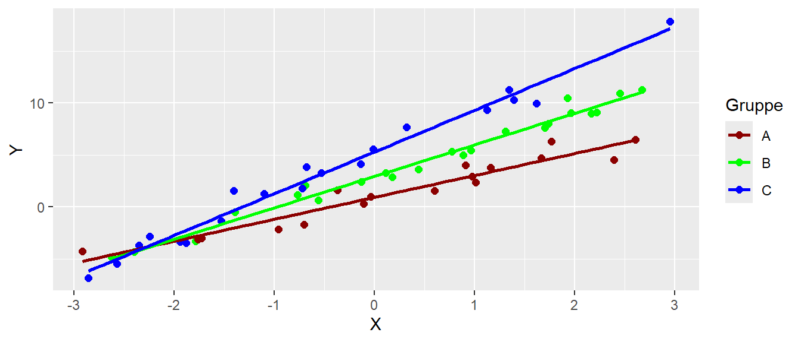
Hier sehen wir, dass die Steigungen in den drei Gruppen unterschiedlich sind. Das Modell haben wir schon vorher bei der multiplen linearen Regression gesehen, wir haben ein Interaktionsmodell.
\[\begin{equation} y_{it} = \beta_0 + \tau_i + \beta \cdot x_{it} + (\tau\beta)_{it}x_{it} + \epsilon_{it} \label{eq-ed-ancova-inter} \end{equation}\]
Im Prinzip bleibt bei der Analyse alles gleich. Es ergibt sich aber ein Problem wenn die Unterschied zwischen den drei Gruppen untersucht werden, da diese davon abhängigen für welchen Wert der Kovariate der Unterschied untersucht wird. In Abbildung 11.29 ist dieser Fall angezeigt.
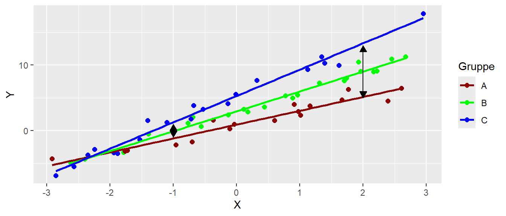
In Abbildung 11.29 ist klar zu erkennen, dass in Abhängigkeit vom Wert der Kovariaten \(X\) der Unterschied zwischen den Gruppen sehr unterschiedlich ausfällt. Wollten wir zum Beispiel die Unterschiede zwischen den Gruppen für die Werte der Kovariaten \(X\) für \(X = [-2,0,2]\) berechnen dann könnten wir das in R mittels emmeans() wie folgt durchführen:
mod <- lm(y ~ x*gruppe, df_i)
mod_ems <- emmeans(mod, ~gruppe|x, at=list(x=c(-2,0,2)))
pairs(mod_ems, adjust='bonferroni')x = -2:
contrast estimate SE df t.ratio p.value
A - B -0.185 0.501 54 -0.368 1.0000
A - C -0.561 0.452 54 -1.241 0.6597
B - C -0.377 0.422 54 -0.893 1.0000
x = 0:
contrast estimate SE df t.ratio p.value
A - B -2.023 0.279 54 -7.264 <.0001
A - C -4.369 0.289 54 -15.099 <.0001
B - C -2.345 0.273 54 -8.593 <.0001
x = 2:
contrast estimate SE df t.ratio p.value
A - B -3.862 0.401 54 -9.642 <.0001
A - C -8.176 0.479 54 -17.073 <.0001
B - C -4.314 0.438 54 -9.853 <.0001
P value adjustment: bonferroni method for 3 tests Damit solche Vergleiche sinnvoll sind, müssten die jeweiligen Werte für die Kovariaten schon im voraus möglichst bekannt sein bzw. festgelegt worden sein.
11.28 Zusammenfassung
In der Herleitung und den Beispielen haben wir ANCOVAs mit nur einer Kovariate \(X\) und einem Treatmentfaktor \(\tau_i\) uns angeschaut. Die ANCOVA ist aber nicht nur auf diesen Fall beschränkt sondern es können problemlos auch mehrere Kovariaten \(X_i, \ldots, X_p\) in das Modell nach dem genau gleichen Prinzip intergriert werden. Genauso kann die ANCOVA auch mit einem CRFD kombiniert werden und es kann eine kompliziertere Treatmenstruktur mit mehreren Faktoren verwendet werden. Ein Beispiel ist in Duncan u. a. (2017) zu finden wo mehrere ANCOVAs gerechnet wurden um Körperkomposition in Abhängigkeit von Gender und Bewegungsfertigkeiten (high, medium, low) zu modellieren mit Alter, Alter beim maximalen Wachstumsschub und körperliche Aktivität als Kovariaten. Diese flexiblen Möglichkeiten machen die ANCOVA zu einem sehr mächtigen Verfahren. Wie schon mehrfach betont, ist die ANCOVA dabei nichts anderes als ein allgemeines lineares Modell.
11.29 Zum Nach- und Weiterlesen
Ein gute Quelle um noch einmal die Grundlagen zur ANCOVA zu verstehen ist Maxwell u. a. (2004). Genauere Information zur ANCOVA für pre-post Untersuchungen sind in Wan (2021) und Wan (2020) zu finden.
11.30 Blocked Designs
11.31 Completely randomized block designs
Nachdem wir CRD and die Verallgemeinerung die CRFD kennengelernt haben um den Einfluss von Variablen auf eine abhängige Variable für die wir uns interessieren zu untersuchen gab uns der Ansatz der ANCOVA eine Möglichkeit Varianz in der abhängigen Variablen mittels einer Kovariaten aus dem Modell rauszurechnen. Der Einfluss der Kovariaten ist für uns dabei per-se nicht von Interesse, sondern wir sehen die Kovariate vor allem als Möglichkeit an um Varianz zu kontrollieren. Diesen Ansatz werden in dem vorliegenden Kapitel weiter ausbauen und uns anschauen wie wir mittels sogenannter Blockfaktoren weitere Varianz aus der abhänigen Variable isolieren können. Dies hilft uns wieder dabei den Einfluss derjenigen unabhängigen Variablen für die wir uns primär interessieren genauer zu schätzen.
Fangen wir mit einem Beispiel an, das zunächst einmal nichts mit sportlicher Leistung zu tun hat. In einem Experiment wollen wir vier verschiedene Backmischung für Brötchen hinsichtlich ihrer Eigenschaften untersuchen. Bezeichnen wir diese Backmischung mit \(I, II, III\) und \(IV\). Nun haben wir nur einen Ofen zur Verfügung und wir wollen in einem Backgang natürlich so viele Brötchen wie möglich backen. In den Ofen können wir vier Bleche gleichzeitig backen (siehe Abbildung 11.30). Wie sollten wir die Brötchen auf diese vier Backbleche verteilen?
Wir könnten mit einer einfachen Randomisierung anfangen. Wir nummerieren die Plätze auf allen Backblechen der Reihe nach durch und weisen die Teigmischungen zufällig den Platznummern zu. Nun, da wir alle ständig Backsendungen schauen, wissen wir, dass die Höhe der Blechs im Ofen einen Einfluss auf die Temperatur hat. Darauf folgt, dass alle Brötchen die auf einem Blech angeordnet sind, alle wenn nicht der Gleiche dann doch einer sehr ähnliche Temperatur ausgesetzt sind. Dabei werden die Temperaturvariationen innerhalb eines Bleches geringer als zwischen den Blechen sein. Wenn nun der Fall eintritt, dass alle Brötchen der Teigmischung \(I\) auf dem tiefsten Blech sind, alle Brötchen \(II\) auf dem Zweitniedrigsten uns so weiter, dann bekommen wir ein Problem. Wenn wir Unterschiede zwischen den Backmischungen finden dann können wir nicht ausschließen das die Unterschiede auf die Bleche anstatt die Backmischungen zurück zu führen sind. Der Effekt des Blechs und der Effekt der Backmischung sind miteinander konfundiert (engl. confounder ). Letztendlich hat das Problem dadurch eine ähnliche Struktur wie wir das in der ANCOVA kennengelernt haben. Wir sind nicht an den Unterschieden zwischen den Blechen interessiert und wollen für deren Einfluss kontrollieren. Wie könnten wir in diesem Fall vorgehen? Eine direkte Möglichkeit ist, dass wir jeweils die gleich Anzahl an Backmischungen jedem Blech zuweisen. Danach weisen wir die Position der Backmischungen auf dem Blech dann wieder randomisiert. Die Bleche werden unter dieser Perspektive als Blöcke bezeichnet. Durch die nachfolgende Randomisierung erklärt sich auch der Begriff completely randomized block design (CRBD).
Definition 11.4 (Blockdesign ) In einem statistischen Design, wir als ein Block eine Gruppe von experimentellen Einheiten bezeichnet, die sich hinsichtlich bestimmter Merkmale ähneln. Diese Merkmale können äußere Einflüsse sein, die die Ergebnisse des Experiments beeinflussen könnten.
Das Ziel des Blockens ist es also, Einflussfaktoren, die nicht von Interesse sind, zu kontrollieren und so ähnlich wie bei der ANCOVA die Genauigkeit und Präzision des Experiments zu erhöhen. Durch das Blocken werden die Einheiten innerhalb eines Blocks homogenisiert, während Unterschiede zwischen den Blöcken kontrolliert und gemessen werden können. So können Blockeffekte isoliert und statistisch berücksichtigt werden. Zusammengefasst können wir die Varianz in der abhängigen Variable \(\sigma_{Y}^2\) somit in vier verschiedene Komponenten unterteilen:
- Systematische Varianz auf Grund des Treatments
- Varianz auf Grund von Kovariaten
- Varianz auf Grund von Blockeffekten
- Unsystematische oder Residualvarianz \(\epsilon\)
Umformuliert als Pseudogleichung erhalten wir:
\[\begin{equation*} \sigma_{Y}^2 = \sigma_{\text{Effekt(e)}}^2 + \sigma_{\text{Kovariate}}^2 + \sigma_{\text{Block}}^2 + \sigma_{\epsilon}^2 \end{equation*}\]
11.32 Der abhängige t-Test als Blockdesign
Tatsächlich ist das Konzept eines Blockfaktors nichts Neues sondern wir haben Prinzip wahrscheinlich schon früher einmal im Zusammenhang mit dem abhängigen t-Test kennengelernt. Schauen wir uns ein hypothetisches Beispiel mit \(N = 6\) Personen an, die wir unter zwei Konditionen \(A\) und \(B\) beobachtet haben. Der Datensatz ist in Abbildung 11.31 abgebildet.
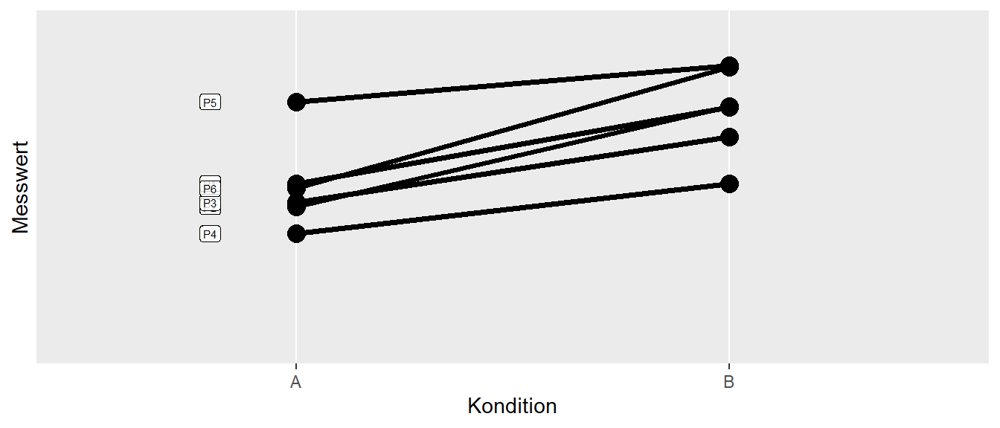
Standardmäßig würden wir dieses Design mit einem abhängigen t-Test analysieren. In R würde dies beispielsweise zu folgendem Code führen (Daten in df_dep).
mod_ttest <- t.test(y ~ condition, data = df_dep, paired=T)
mod_ttest
Paired t-test
data: y by condition
t = -5.8211, df = 5, p-value = 0.002113
alternative hypothesis: true mean difference is not equal to 0
95 percent confidence interval:
-5.045901 -1.954531
sample estimates:
mean difference
-3.500216 Wir sehen, dass wir ein statistisch signifikantes Ergebnis für den Unterschied zwischen den beiden Konditionen erhalten haben. Konzeptionell können wir die Personen als Blöcke ansehen. Wir betrachten jede Person unter beiden Konditionen. Dabei gehen wir davon aus, dass es Unterschiede zwischen den Personen gibt, die uns aber nicht wirklich interessieren. Dadurch das wir beide Konditionen in den gleichen Personen beobachten, können wir diese Unterschiede von dem Effekt der Konditionen isolieren. Hätten wir unterschiedliche Personen für die beiden Gruppen genommen, dann hätten wir zu dem potentiellen Unterschieden zwischen den Konditionen auch noch die Unterschiede zwischen den Personen. Dadurch, dass wir eine Blockstruktur nehmen sind wir also wieder in der Lage Varianzkomponenten zu isolieren.
Schauen wir uns als nächstes an, ob wir den abhängigen t-Test auch in die Form eines linearen Modells bekommen. Wenn wir parallel zum Ansatz in der ANCOVA vorgehen, dann sehen wir Unterschiede zwischen den Personen als Störvariable respektive Kovariate an. D.h. wir möchten die Unterschiede zwischen den Personen modellieren. Eine direkte Möglichkeit ist daher die Personen id als eine nominale Variable zu identifizieren und Dummy-Variablen für die Personen in das Modell zu integrieren. Als lm-Modell formuliert erhalten wir den folgenden Code:
mod_lm <- lm(y ~id + condition, df_dep)
summary(mod_lm)$coefficients Estimate Std. Error t value Pr(>|t|)
(Intercept) 12.7154606 0.7954421 15.9854014 1.744403e-05
idP2 -0.5314741 1.0414781 -0.5103075 6.315588e-01
idP3 -1.1473884 1.0414781 -1.1016923 3.207808e-01
idP4 -2.9603653 1.0414781 -2.8424652 3.614173e-02
idP5 2.8791496 1.0414781 2.7644840 3.962345e-02
idP6 0.8168878 1.0414781 0.7843542 4.683454e-01
conditionB 3.5002161 0.6012977 5.8211036 2.113038e-03Wir sehen, dass P1 als Referenzstufe modelliert wurde und die \(\beta\)s für die id jeweils die Abweichung der Personen von P1 darstellen. Als letzten Koeffizienten haben wir den Effekt der Kondition, bzw. den Unterschied zwischen von Kondition \(B\) zu Kondition \(A\). Wenn wir die Werte mit denjenigen im abhängigen t-Test vergleichen, dann sehen das exakt die gleichen Werte geschätzt wurden. Lediglich das Vorzeichen ist anders herum auf Grund der Wahl von R für die Referenzstufe. Schauen wir uns die Konfidenzintervalle für die \(\beta\)s an.
confint(mod_lm) 2.5 % 97.5 %
(Intercept) 10.6707117 14.7602095
idP2 -3.2086789 2.1457306
idP3 -3.8245932 1.5298164
idP4 -5.6375701 -0.2831606
idP5 0.2019448 5.5563544
idP6 -1.8603170 3.4940925
conditionB 1.9545312 5.0459009Wieder erhalten wir exakt die gleichen Werte für den für uns relevanten Effekt der Kondition. Insgesamt sehen wir, dass wir wieder ein zunächst als getrennt behandeltes Verfahren, der abhängige t-Test, in das allgemeine lineare Modell integriert werden kann. Weiterhin kann der Ansatz Varianz in der abhängigen Variable mit Hilfe von Blockeffekten zu erklären auf direkte und uns schon bekannte Art und Weise in das Modell integriert werden. Wir gewinnen dadurch wiederum Flexibilität bei der Erstellung und Analyse von Experimenten. Letztendlich können wir, wie auch bei der ANCOVA, durch die geschickte Wahl von Blöcken, die Power unseres Untersuchungsdesigns erhöhen.
Bezogen auf die Designstruktur stellen die einzelnen Personen die EUs. Die Randomisierung findet in diesem Fall auf der Ebene der Blöcke statt. Innerhalb jeder Person wir die Abfolge der Konditionen randomisiert.
11.33 Varianten von Blockdesigns
Im Rahmen des Skripts unterscheiden wir drei grundsätzliche Designs. Führen wir aber zunächst einmal erst wieder etwas Terminologie ein:
B = Anzahl der Blöcke
M = Anzahl der Messungen in einem Block (block size)
K = Anzahl der Treatments
n = Anzahl der Repetitionen
M = Anzahl der Messungen in einem Block (block size)
K = Anzahl der Treatments
n = Anzahl der Repetitionen
Ausgehend auf dem Verhältnis von der Anzahl der Messungen in einem Block \(M\) und der Anzahl der Treatments \(K\) ergeben sich unter anderem die folgenden drei Blockdesigns (siehe Tabelle 11.17}:
- Randomized complete block design (RCBD) \(M = K\)
- General complete block design (GCBD) \(M = n \times K\)
- Incomplete block design (IBD) \(M < K\)
11.33.1 Layout
| B | A1 | A2 | A3 |
|---|---|---|---|
| I | X | X | X |
| II | X | X | X |
| III | X | X | X |
| B | A1 | A2 | A3 |
|---|---|---|---|
| I | XX | XX | XX |
| II | XX | XX | XX |
| III | XX | XX | XX |
| B | A1 | A2 | A3 |
|---|---|---|---|
| I | X | X | |
| II | X | X | |
| III | X | X |
Die Unterschiede zwischen den drei Designs beziehen sich hauptsächlich darauf wie oft das Treatment mit dem Block gekreuzt ist. Im CRBD haben wir pro Block jede Treatmentkondition genau einmal, während beim GCBD jede Treatmentkondition mehrmals pro Block beobachtet wird. Im Gegensatz dazu werden beim IBD nicht alle Treatmentkondition in jedem Block beobachtet.
Beginnen wir mit einem CRBD.
11.34 Completely Randomized Block Design
Beim Completely Randomized Block Design wird jede Treatmentkondition genau einmal pro Block beobachtet. D.h. die Anzahl der Messungen pro Block \(M\) sind gleich der Anzahl der Treatmentkonditionen \(K\). Da die Blöcke vom Prinzip her genauso wie andere nominale Faktoren zu behandeln sind, entspricht das dazugehörige Modell einer zweifaktoriellen CRFD ohne Interaktionseffekte. Entsprechend erhalten wir ein Modell mit einem Blockfaktor \(\theta_h\) mit \(h = 1,2,\ldots,M\) und einem Effekt \(\alpha_i, i=1,2,\ldots,K\) für die \(K\) Treatmentkonditionen. Das entsprechende Modell können wir folgt formulieren (siehe Formel \(\eqref{eq-ed-crbd-crbd}\)):
\[\begin{equation} Y_{hi} = \mu + \theta_h + \tau_i + \epsilon_{hi} \label{eq-ed-crbd-crbd} \end{equation}\]
\(\mu\) = Gesamtmittelwert
\(\theta_h\) = Blockeffekt der \(h\)-ten Stufe, \(h = 1, \ldots, B\)
\(\tau_i\) = Faktoreffekt der \(i\)-ten Stufe, \(i = 1, \ldots, K\)
\(e_{hi} \sim \mathcal{N}(0,\sigma^2)\), paarweise unabhängig
\(\theta_h\) = Blockeffekt der \(h\)-ten Stufe, \(h = 1, \ldots, B\)
\(\tau_i\) = Faktoreffekt der \(i\)-ten Stufe, \(i = 1, \ldots, K\)
\(e_{hi} \sim \mathcal{N}(0,\sigma^2)\), paarweise unabhängig
Da wir nur eine Kombination von Treatmentfaktor und Blockfaktor haben, können wir keine Interaktionseffekte zwischen \(\theta\) und \(\alpha_i\) bestimmen, da diese mit den Residualfaktoren konfundiert sind. Daraus folgt, wir mit unserem Modellvergleichansatz das volle Modell mit beiden Faktoren mit einem reduzierten Modell mit nur den Blockfaktoren vergleichen, bzw. wenn es gewollt ist den Blockeffekt zu überprüfen entsprechend ein weiteres reduziertes Modell mit nur einen \(y\)-Achsenabschnitt.
\[\begin{align*} Y_{hi} &= \mu + \theta_h + \tau_i + \epsilon_{hi} & \text{full} \\ Y_{hi} &= \mu + \theta_h + \epsilon_{hi} & \text{reduced 1} \\ Y_{hi} &= \mu + \epsilon_{hi} & \text{reduced 2} \end{align*}\]
Dementsprechend bezieht sich die Haupthypothese auf den Effekt des Treatmentfaktors.
\[\begin{align*} H_0 &: \tau_1 = \tau_2 = \ldots = \tau_v = 0 \\ H_1 &: \tau_i \neq \tau_j, i \neq j \end{align*}\]
Wie immer können die Ergebnisse auch mittels einer ANOVA-Tabelle dokumentiert werden (siehe Tabelle 11.18}.
\(F\)-Tabelle
| Term | \(df\) | \(SS\) | \(MS\) | Test |
|---|---|---|---|---|
| Block | \(B-1\) | \(ss\theta\) | \(\frac{ss\theta}{B-1}\) | - |
| Treatment | \(K-1\) | \(ssT\) | \(\frac{ssT}{K-1}\) | \(\frac{msT}{msE}\) |
| Error | \(KB-B-K+1\) | \(ssE\) | \(\frac{ssE}{KB-B-K+1}\) | |
| Total | \(KB-1\) | \(sstot\) |
\(ss\theta = K\sum_h \bar{y}_{h.}^2-KB\bar{y}_{..}^2\)
\(ssT = B\sum_i \bar{y}_{.i}^2-KB\bar{y}_{..}^2\)
\(ssE = sstot - ssB - ssT\)
\(sstot = \sum_h\sum_i y_{hi}^2-KB\bar{y}_{..}^2\)
\(ssT = B\sum_i \bar{y}_{.i}^2-KB\bar{y}_{..}^2\)
\(ssE = sstot - ssB - ssT\)
\(sstot = \sum_h\sum_i y_{hi}^2-KB\bar{y}_{..}^2\)
Schauen wir uns dazu ein Beispiel Dean u. a. (1999) an.
Beispiel 11.7 Bei \(N = 9\) Patienten wurde der Ruheumsatz am Morgen in Abhängigkeit von drei verschiedenen Konditionen untersucht. Unter Kondition \(A\) haben die Patienten im Krankhaus übernachtet und gefrühstückt, unter Kondition \(B\) zu Hause geschlafen und im Krankenhaus gefrühstückt und unter Kondition \(C\) beides zu Hause durchgeführt. Die Reihenfolge der Konditionen wurde zwischen den Patienten randomisiert. In Abbildung 11.32 sind die Rohdaten abgebildet.
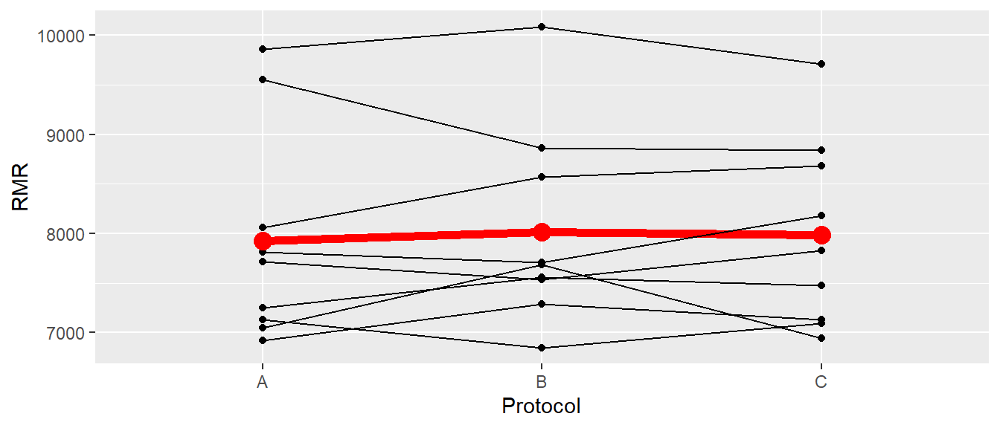
In Abbildung 11.32 ist kein klarer Trend zu erkennen, was bei \(N=9\) auch nicht weiter verwunderlich ist. Dargestellt als ANOVA-Tabelle ergibt sich das folgende Ergebnis.
| Term | df | SS | MS | F | p-value |
|---|---|---|---|---|---|
| subject | 8 | 23117462.30 | 2889682.79 | 37.423 | 0.000 |
| protocol | 2 | 35948.74 | 17974.37 | 0.233 | 0.795 |
| Residuals | 16 | 1235483.26 | 77217.70 |
D.h. wir finden keinen Einfluss des Treatments auf den Ruheumsatz basierend auf der vorliegenden Stichprobe.
11.34.1 CRBD in R
Wir haben verschiedene Ansätze um die Analyse durchzuführen. Zunächst mittels Modelverlgeichen mit lm()
mod_full <- lm(rate ~ subject + protocol, rmr)
mod_reduced <- lm(rate ~ subject, rmr)
anova(mod_reduced,mod_full)Analysis of Variance Table
Model 1: rate ~ subject
Model 2: rate ~ subject + protocol
Res.Df RSS Df Sum of Sq F Pr(>F)
1 18 1271432
2 16 1235483 2 35949 0.2328 0.795Alternativ können wir auch wieder aov() verwenden.
mod_aov_1 <- aov(rate ~ subject + protocol, data = rmr)
summary(mod_aov_1) Df Sum Sq Mean Sq F value Pr(>F)
subject 8 23117462 2889683 37.423 6.3e-09 ***
protocol 2 35949 17974 0.233 0.795
Residuals 16 1235483 77218
---
Signif. codes: 0 '***' 0.001 '**' 0.01 '*' 0.05 '.' 0.1 ' ' 1Als weitere Alternative mit aov() und der Zusatzfunktion Error()
mod_aov_2 <- aov(rate ~ protocol + Error(subject), data = rmr)
summary(mod_aov_2)
Error: subject
Df Sum Sq Mean Sq F value Pr(>F)
Residuals 8 23117462 2889683
Error: Within
Df Sum Sq Mean Sq F value Pr(>F)
protocol 2 35949 17974 0.233 0.795
Residuals 16 1235483 77218 Dies führt zu der Unterteilung der Effekte in zwei Strata wie sie bei Repeated Measures ANOVA verwendet werden. Einmal in die Zwischenblockeffekte die allerdings mangels Fehlerterm nicht analysisert werden und die Innerblockeffekte. Die Innerblockeffekte sind gleich dem in SPSS üblichen Ansatz mit Innersubjekteffekten.
11.34.2 Feste versus zufällige Effekte
Für die weiteren Ausführung bei Blockeffekten müssen wir zunächst ein neues Konzept kennenlernen: den Unterschied zwischen festen und zufälligen Effekten. Wir beschränken uns zunächst auf nominale Faktoren die Verallgemeinerung folgt dann aber auf natürliche Weise. Bei einem festen Effekte sind wir im Rahmen der Untersuchung nur an denen im Experiment verwendeten Faktorstufen interessiert. D.h wir möchten keine Rückschlüsse über Faktorstufen ziehen die über diejenigen im Experiment verwendeten Stufen hinaus gehen. Dies bedeutet auch, dass bei einer Wiederholung des Experiments die genau gleichen Stufen verwendet werden. Im Gegensatz zu festen Effekten werden die Stufen bei einem zufälligen Effekt als eine Stichprobe aus einer größeren Grundgesamtheit von Faktorstufen angesehen. In diesem Fall sind wir nicht an denen im Experiment konkrete beobachteten Faktorstufen interessiert, sondern wollen einen Rückschluss über die Grundgesamtheit des Faktorstufen ziehen.
In Bezug auf das vorhergehende Beispiel lässt sich unter diesem Aspekt der Blockeffekt der Probanden betrachten. Wollen wir die beobachteten Effekte nur auf die in der Stichprobe vorkommenden Menge von Personen beziehen, dann werden die Blockeffekte (Personen) als feste Effekte interpretiert. Sehen wir dagegen, was in den meisten Fällen zutreffen wird, die Probanden als eine Stichprobe aus einer größeren Population von Probanden an, dann stellt der Personeneffekt der Blöcke einen Zufallseffekt dar.
Eine weitere Interpretation von festen Effekten im Gegensatz zufälligen Effekten bezieht sich auf die Präzision der Variable. Kann eine Variable ohne Fehler gemessen werden kann, dann stellt Sie einen festen Effekt dar. Bezogen auf das Beispiel der Probandenstichprobe trifft diese Bedingung allerdings zu, wir können die Identität der Person perfekt bestimmen, trotzdem wird der Personeneffekt üblicherweise als Zufallseffekt interpretiert. Ein weiteres Beispiel könnten die Trainingsintensität bei einem RCT sein. Seien eine Kontrollgruppe und eine Interventionsgruppe gegeben. Die Trainingsintensität zeichnet wir in der Studie als zweimal 30 Minuten pro Woche definiert. Da die Trainingsintensität nur eine einzige Ausprägung hat, ist es nicht möglich auf eine mögliche Population von Trainingsintensität zurück zu schließen. D.h. die Studie kann nicht über die verabreichte Intensität hinaus generalisieren. Daher wird die Intensität als fester Effekt modelliert. Andererseits könnte aber auch eine Population von Trainingsintensitäten angenommen werden und Probanden bekommen randomisiert unterschiedliche Intensitäten verabreicht. Bei einer Wiederholung des Experiments würden dann nicht die gleichen Trainingsintensitäten verabreicht werdend und die Trainingsintensität könnte als Zufallseffekt modelliert werden. Tatsächlich gibt es immer wieder Grenzfälle bei denen nicht eindeutig klar ist, wie ein Effekt modelliert werden soll und beide Ansätze sind möglich bzw. plausibel.
Definition 11.5 (Feste Effekte) Feste Effekte (engl. fixed effects ) beziehen sich auf Variablen, deren Einflüsse bestimmter bekannter und interessierender Faktoren auf die abhängige Variable modellieren. Die Faktoren stammen aus einer endlichen Menge von möglichen Faktoren und die Effekte sind konstant für alle Beobachtungen. Bei einer Wiederholung des Experiments werden die gleichen Faktoren wiederverwendet und die spezifischen Stufen werden verwendet wiel sie von Interesse für die Studie sind. Feste Effekte erlauben keine Generalisierung über die verwendeten Stufen hinweg.
Definition 11.6 (Zufallseffekte) Zufallseffekte (engl. random effects) beziehen sich auf Variablen, deren Einflüsse als zufällig angesehen werden und die aus einer größeren Population von (meistens endlich vielen) möglichen Werten stammen. Die Population ist oft hypothetisch. Zufallseffekte erlauben es, die Variabilität zu modellieren, die durch zufälligen Unterschiede zwischen den Einheiten in der Studie eingeführt wird. Bei einer Wiederholung des Experiments kommen nicht die gleichen Stufen zum Einsatz. Zufallseffekte erlauben eine Generalisierung über die beobachteten Stufen hinaus.
Eine weitere vereinfachte Arbeitsdefinition von (Casella 2009, p.99, übersetzt) liest sich:
Ein Faktor ist ein fester Faktor, wenn alle interessierenden Faktorstufen im Experiment enthalten sind. Ein Faktor ist ein Zufallsfaktor, wenn nicht alle interessierenden Faktorstufen in den Versuch einbezogen werden und diejenigen, die einbezogen werden, als zufällig aus allen interessierenden Faktorstufen ausgewählt werden.
Durch die Kombination von Modellen können nun verschiedene Arten von Modell identifziert werden: Modelle mit festen Effekten (engl. fixed effects model) , Modelle mit Zufallseffekten (engl. random effects model) und gemischte Modelle mit beiden Effekten (engl. mixed effects model) (Dean u. a. 1999).
11.34.3 Effektstärken \(\omega^2\) und \(f\) beim CRBD
\[\begin{align*} \omega^2 &= \frac{df_{\mathrm{effect}} \times (MS_{\mathrm{effect}} - MS_{\mathrm{error}})}{SS_{\mathrm{total}} + MS_{\mathrm{subjects}}} \\ f^2 &=\frac{\omega^2}{1-\omega^2} \end{align*}\]
11.34.4 \(\omega^2\) im Beispiel
\[ \omega^2 = \frac{2 \times (17974 - 77219)}{\underbrace{23117462 + 35949 + 1235483}_{SS_{\mathrm{total}}} + 2889683} = -0.02 \approx 0 \]
Effektstärke CRBD in R
11.35 General complete block design GCBD
| low | normal | high | |
|---|---|---|---|
| G1 | 5 | 5 | 5 |
| G2 | 5 | 5 | 5 |
| G3 | 5 | 5 | 5 |
| G4 | 5 | 5 | 5 |
| G5 | 5 | 5 | 5 |
| G6 | 5 | 5 | 5 |
11.35.1 Model
\[\begin{equation} y_{hij} = \mu + \theta_{h} + \tau_i + (\theta\tau)_{hi} + \epsilon_{hij} \end{equation}\]
Abfolge der Abschlaghöhen ist randomisiert innerhalb eines Golfers (Blocks)
B = 9 Golfer
M = 5 Repetitions (block size)
K = 3 different factor levels
M = 5 Repetitions (block size)
K = 3 different factor levels
11.35.2 Analyse GCBD in R
mod_gcbd <- aov(cdistance ~ teehgt + Error(id/teehgt), golf)
summary(mod_gcbd)
Error: id
Df Sum Sq Mean Sq F value Pr(>F)
Residuals 8 124741 15593
Error: id:teehgt
Df Sum Sq Mean Sq F value Pr(>F)
teehgt 2 1724 862.0 5.854 0.0124 *
Residuals 16 2356 147.3
---
Signif. codes: 0 '***' 0.001 '**' 0.01 '*' 0.05 '.' 0.1 ' ' 1
Error: Within
Df Sum Sq Mean Sq F value Pr(>F)
Residuals 108 7341 67.97 11.35.3 Mehrfachvergleiche in CRBD
Allgemein Kontraste
\[\begin{equation} \hat{\psi} = \sum_{i=1}^Kc_i \hat{\tau_i} = \sum_{i=1}^K \bar{Y}_{.i} \end{equation}\]
und Standardfehler
\[\begin{equation*} s_{\psi} = MSE\sum_{i=1}^K c_i^2/B \end{equation*}\]
Kritische Werte \(w\) \[\begin{align*} w_{\text{Bonferroni}} &= t_{KV-B-K+1,\alpha/(2m)} \\ w_{\text{Scheffé}} &= \sqrt{(K-1)F_{K-1,KB-B-K+1,\alpha}} \\ w_{\text{Tukey}} &= q_{K,BV-B-V+1,\alpha}/\sqrt{2} \\ \end{align*}\]
11.35.4 z.B. Paarvergleiche Tukey
\[ (\bar{y}_{.i} - \bar{y}_{.j}) \pm w_T \sqrt{MS_{\mathrm{error}}\times2/b} \]
\(w_T = q_{\alpha/\sqrt{2},v, bv-b-v+1}\) = Quantile der Studentized Range Distribution. In R mit qtukey(alpha/sqrt(2), v, b*v-b-b+1).
11.35.5 Mehrfachvergleiche in R
y_bars <- emmeans::emmeans(mod_aov_1, ~protocol)
pairs(y_bars, infer=T)| contrast | estimate | SE | df | lower.CL | upper.CL | t.ratio | p.value |
|---|---|---|---|---|---|---|---|
| A - B | -87.56 | 130.99 | 16 | -425.56 | 250.45 | -0.67 | 0.78 |
| A - C | -59.33 | 130.99 | 16 | -397.34 | 278.68 | -0.45 | 0.89 |
| B - C | 28.22 | 130.99 | 16 | -309.79 | 366.23 | 0.22 | 0.97 |
| Note: | |||||||
| Tukey adjusted at $\\alpha=0.95$ |
11.35.6 Bestimung der Anzahl der Blöcke a-priori
Direkt über den \(F\)-Test per trial-and-error
Nichtzentralitätsparameter \(\lambda\) \[\begin{equation*} \lambda = \frac{B}{\sigma^2}\sum_{i=1}^K \tau_i^2 \end{equation*}\]
\(\text{df}_1 = K - 1\)
\(\text{df}_2 = (B-1)(K-1)\)
\(\alpha\)
\(\text{df}_2 = (B-1)(K-1)\)
\(\alpha\)
11.35.7 Beispiel RMR
\(\hat{\sigma}^2 = 7.72177\times 10^{4}\)
\(\sum_{i=1}^K \tau_i^2 = 3.5949\times 10^{4}\)
\(df_1 = K-1 = 3\)
\(df_2 = (B-1)(K-1)\)
\(\sum_{i=1}^K \tau_i^2 = 3.5949\times 10^{4}\)
\(df_1 = K-1 = 3\)
\(df_2 = (B-1)(K-1)\)
| B | \(df_1\) | \(df_2\) | \(\lambda\) | \(q_{H_0}\) | power |
|---|---|---|---|---|---|
| 20 | 2 | 38 | 9.31 | 3.24 | 0.75 |
| 21 | 2 | 40 | 9.78 | 3.23 | 0.77 |
| 22 | 2 | 42 | 10.24 | 3.22 | 0.80 |
| 23 | 2 | 44 | 10.71 | 3.21 | 0.82 |
| 24 | 2 | 46 | 11.17 | 3.20 | 0.83 |
11.36 Balanced incomplete block design (IBD)
\(K\) = Anzahl der Faktorstufen
\(B\) = Anzahl der Blöcke
\(k\) = Größe der Blöcke
\(r\) = Anzahl der Replikationen
\(B\) = Anzahl der Blöcke
\(k\) = Größe der Blöcke
\(r\) = Anzahl der Replikationen
Beim IBD \(k < K\).
| B | A1 | A2 | A3 |
|---|---|---|---|
| I | X | X | |
| II | X | X | |
| III | X | X |
11.36.1 Beispiel incomplete block design mit \(B=8,k=3,K=8,r=3\)
| Block | |||
|---|---|---|---|
| I | 1 | 3 | 8 |
| II | 2 | 4 | 1 |
| III | 3 | 5 | 2 |
| IV | 4 | 6 | 3 |
| V | 5 | 7 | 4 |
| VI | 6 | 8 | 5 |
| VII | 7 | 1 | 6 |
| VIII | 8 | 2 | 7 |
11.36.2 Welche Paarvergleiche können geschätzt werden?
11.36.3 Balanced incomplete block design (BIBD)
\[\begin{align*} B &\geq K \\ Kr &= Bk \\ \lambda(K-1) &= r(k-1) \end{align*}\]
- Alle paarweisen Vergleiche haben den gleichen Standardfehler
- Power für die Detektion von Paarunterschieden ist für alle Paare gleich
11.36.4 Design erstellen mittels Optimierung
K <- 6
B <- 8
k <- 3
bib_des <- AlgDesign::optBlock(~.,
withinData = factor(1:K),
blocksize = rep(k,B))Alternativen: ibd, agricolae
| A | B | C | D | E | F | |
|---|---|---|---|---|---|---|
| I | 0 | 1 | 0 | 0 | 1 | 1 |
| II | 0 | 1 | 1 | 1 | 0 | 0 |
| III | 1 | 1 | 0 | 0 | 0 | 1 |
| IV | 1 | 0 | 0 | 1 | 1 | 0 |
| V | 0 | 0 | 1 | 1 | 0 | 1 |
| VI | 1 | 0 | 1 | 0 | 1 | 0 |
| VII | 1 | 0 | 0 | 1 | 0 | 1 |
| VIII | 0 | 1 | 1 | 0 | 1 | 0 |
Modell
\[\begin{gather*} Y_{hi} = \mu + \theta_h + \tau_i + \epsilon_{hi} \\ \epsilon_{hi} \sim \mathcal{N}(0,\sigma^2) \\ h = i, \ldots, b; i = 1,\ldots,t; (h,i) \text{ in the design} \end{gather*}\]
Achtung - Treatmentmittelwerte sind biased
\[\begin{equation*} E[\tau_i - \tau_j] \neq \bar{Y}_{.i} - \bar{Y}_{.j} \end{equation*}\]
| A | B | C | D | \(\bar{Y}_{h.}\) | |
|---|---|---|---|---|---|
| I | 25.0 | 27 | 26.0 | ||
| II | 10.0 | 13.0 | 11.5 | ||
| III | 35 | 36.0 | 35.5 | ||
| IV | 10.0 | 12 | 11.0 | ||
| \(\bar{Y}_{.i}\) | 17.5 | 31 | 19.7 | 12 | 20.0 |
11.36.5 Beispiel IBD-Daten
| Person | A | B | C | D |
|---|---|---|---|---|
| 1 | 5 | 5 | ||
| 2 | 7 | 6 | ||
| 3 | 5 | 4 | ||
| 4 | 6 | 7 | ||
| 5 | 6 | 4 | ||
| 6 | 8 | 6 | ||
| 7 | 6 | 7 | ||
| 8 | 5 | 8 | ||
| 9 | 4 | 5 | ||
| 10 | 7 | 7 | ||
| 11 | 6 | 5 | ||
| 12 | 7 | 4 |
Beispiel - Modellfit mit lm()
mod <- lm(score ~ id + recipe, data = taste)
anova(mod) | Term | df | SSQ | MSQ | F-Wert | p-Wert |
|---|---|---|---|---|---|
| id | 11 | 19.333 | 1.758 | 2.301 | 0.111 |
| recipe | 3 | 9.125 | 3.042 | 3.982 | 0.046 |
| Residuals | 9 | 6.875 | 0.764 |
Beispiel - Mehrfachvergleiche
emmeans::emmeans(mod, pairwise ~ recipe)$emmeans
recipe emmean SE df lower.CL upper.CL
A 5.46 0.418 9 4.51 6.40
B 6.21 0.418 9 5.26 7.15
C 6.83 0.418 9 5.89 7.78
D 4.83 0.418 9 3.89 5.78
Results are averaged over the levels of: id
Confidence level used: 0.95
$contrasts
contrast estimate SE df t.ratio p.value
A - B -0.750 0.618 9 -1.214 0.6342
A - C -1.375 0.618 9 -2.225 0.1882
A - D 0.625 0.618 9 1.011 0.7472
B - C -0.625 0.618 9 -1.011 0.7472
B - D 1.375 0.618 9 2.225 0.1882
C - D 2.000 0.618 9 3.236 0.0421
Results are averaged over the levels of: id
P value adjustment: tukey method for comparing a family of 4 estimates 11.37 Zum Nachlesen
Krzywinski und Altman (2014)
Feste Effekte und Zufallseffekte Searle u. a. (1992)